orador 1: Bienvenidos a "Conecta y Lidera", soy Ana y me acompaña Carlos. Hoy vamos a explorar un libro que ofrece una visión muy poderosa y accesible sobre el emprendimiento: "Hazlo solo" de Bruce Judson. Un texto que rompe con la idea de que necesitas una gran inversión o un equipo numeroso para tener éxito en los negocios, y que en cambio te empodera para comenzar con lo que ya tienes.
orador 2: Así es, Ana. Este libro es una guía para el profesional moderno, para la persona que quiere emprender con recursos limitados y aprovechar al máximo las herramientas tecnológicas y su propio talento. Judson parte de una premisa clara: nunca ha sido tan fácil iniciar un negocio solo, gracias a la tecnología, el internet y un enfoque inteligente del trabajo. El libro está lleno de ejemplos reales y estrategias que te muestran que el "hazlo solo" no es un obstáculo, sino una ventaja competitiva.
orador 1: Uno de los puntos centrales de "Hazlo solo" es que el mundo digital ha eliminado muchas de las barreras tradicionales del emprendimiento. Antes necesitabas oficinas, empleados, inventario. Hoy, con una buena idea, una computadora y conexión, puedes empezar un negocio desde tu casa y llegar a miles de personas. Judson lo llama el "poder de lo pequeño". Es decir, operar a baja escala inicialmente te permite ser ágil, flexible y adaptarte rápidamente a lo que el mercado necesita.
orador 2: Exacto. Judson habla del concepto de la "empresa personal altamente apalancada". ¿Qué significa esto? Que puedes apalancarte en herramientas tecnológicas como automatizaciones, servicios en la nube, plataformas de pago, marketing digital, y operar a una escala que antes solo era posible para empresas grandes. Ya no dependes de empleados para cada tarea; puedes utilizar software y servicios externos para lograr resultados profesionales.
orador 1: Un ejemplo que menciona es el caso de un consultor que automatiza la generación de prospectos mediante anuncios online y formularios inteligentes. Mientras duerme, su sistema sigue trabajando, generando ingresos. Es una forma de multiplicar el impacto sin multiplicar las horas de trabajo. Este tipo de automatización permite enfocarse en las tareas realmente estratégicas, como la creación de contenido o la mejora del producto.
orador 2: Otro principio clave es enfocarse en un modelo de negocio escalable. Judson sugiere evitar los negocios que dependen completamente de tu tiempo. En lugar de vender horas de consultoría, crea un curso online, una aplicación, o un servicio que puedas entregar muchas veces sin aumentar tus costos. Esta enseñanza es esencial: tu tiempo es limitado, pero las herramientas digitales te permiten crear activos que generan ingresos sin requerir tu presencia constante.
orador 1: El libro también enfatiza la importancia de reducir la complejidad. Cuantos menos elementos tenga tu negocio, más fácil es escalarlo. Judson propone eliminar lo innecesario: no necesitas una estructura corporativa complicada, ni oficinas, ni empleados fijos. Puedes tercerizar, automatizar o simplemente eliminar tareas que no aportan valor. Esto te da libertad para centrarte en lo que realmente importa: ofrecer algo valioso al cliente.
orador 2: Judson también subraya el principio de "crear antes de crecer". Es decir, no te preocupes al principio por escalar. Enfócate en crear algo pequeño pero funcional, que realmente ayude a tus clientes. Luego, con los ingresos y aprendizajes obtenidos, podrás escalar de manera más inteligente. Es una forma de minimizar riesgos y validar ideas antes de hacer grandes inversiones.
orador 1: Y por supuesto, habla mucho de la mentalidad. Emprender solo requiere confianza, autodisciplina y claridad de propósito. No es para todos, pero para quien tiene una visión clara y determinación, este enfoque puede ser liberador y muy rentable. Judson invita a tener una visión pragmática pero ambiciosa: empezar donde estás, con lo que tienes, pero con la mirada puesta en el largo plazo.
orador 2: Me gustó mucho que Judson no romantiza el emprendimiento. Reconoce que habrá momentos de incertidumbre, de carga emocional, pero también da estrategias muy prácticas para mantener el enfoque. Por ejemplo, recomienda establecer rutinas diarias claras, definir solo tres prioridades clave por día y aprender a decir no a lo que no contribuye a tus objetivos.
orador 1: Otra enseñanza importante del libro es la gestión de expectativas. Judson sugiere que el camino del "hazlo solo" no está libre de obstáculos, pero ofrece control total. No tienes que lidiar con jerarquías ni burocracia. Cada decisión está en tus manos. Y esa autonomía, bien gestionada, puede ser una fuente de enorme satisfacción.
orador 2: En resumen, "Hazlo solo" es una hoja de ruta moderna para el emprendedor independiente. Si tienes una idea, acceso a internet y estás dispuesto a aprender y adaptarte, puedes construir algo valioso sin esperar a tener el equipo perfecto o la financiación ideal. Es una filosofía basada en la acción, la agilidad y el aprovechamiento inteligente de los recursos disponibles.
orador 1: Gracias por acompañarnos en este episodio de "Conecta y Lidera". Esperamos que este análisis de "Hazlo solo" te motive a dar el primer paso hacia tu proyecto, por pequeño que sea. Recuerda que el mejor momento para empezar es ahora.
orador 2: Nos vemos en el próximo episodio, donde seguiremos explorando los libros que nos inspiran a tomar acción y liderar con impacto.
🚀 Lecciones Clave
1️⃣ El momento perfecto es ahora
Nunca fue tan fácil iniciar un negocio en solitario. La tecnología ha reducido los costos y eliminado barreras.
2️⃣ No necesitas empleados para tener éxito
La clave está en apalancar herramientas, automatización y colaboradores externos según necesidad.
3️⃣ Céntrate en tu ventaja personal
Tu conocimiento, experiencia o red pueden convertirse en la base única de un negocio rentable.
4️⃣ Elimina la complejidad
Menos estructura, menos problemas. Mantén tu negocio simple, ágil y enfocado.
5️⃣ Controla tu tiempo y tus decisiones
Ser tu propio jefe no es un sueño, es un sistema que tú diseñas a tu medida.
6️⃣ El marketing de bajo costo sí funciona
Puedes llegar a tu mercado con poco dinero si usas mensajes precisos, plataformas digitales y diferenciación clara.
7️⃣ La libertad es el verdadero éxito
El dinero importa, pero la capacidad de decidir cómo, cuándo y con quién trabajar es la ganancia real.
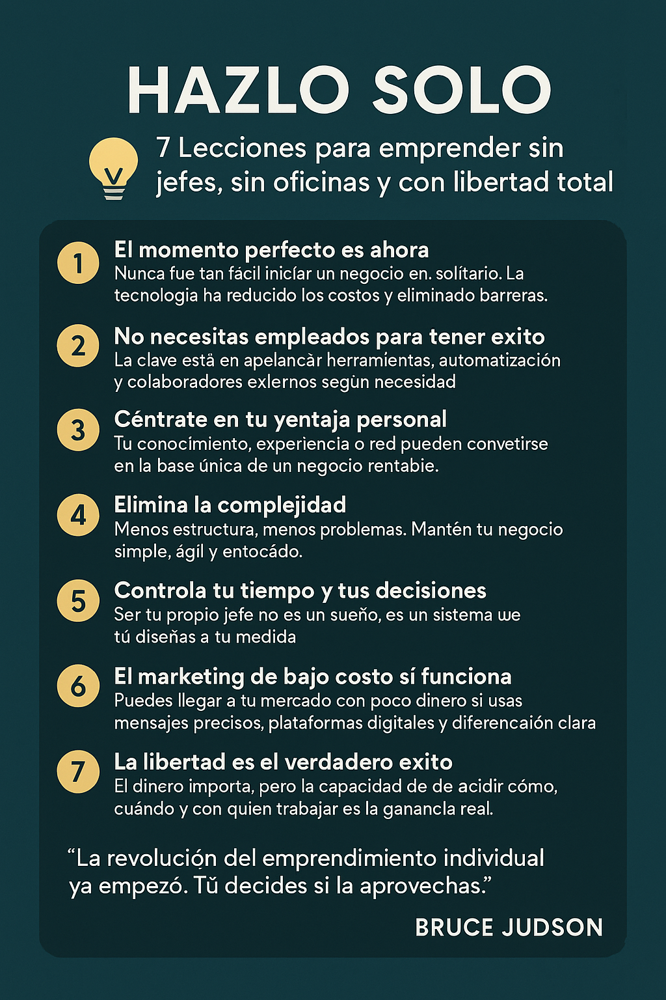
orador 1: Bienvenidos a "Conecta y Lidera", soy Ana y me acompaña Carlos. En este episodio exploraremos "El MBA Personal" de Josh Kaufman, un libro que desafía la idea tradicional de que necesitas una maestría en negocios para tener éxito profesional. Hablaremos de sus principios fundamentales, sus componentes esenciales y cómo podemos aplicarlos en nuestra vida profesional y personal.
orador 2: Así es, Ana. Kaufman propone una alternativa poderosa: aprender por cuenta propia los principios esenciales del mundo empresarial. Su propuesta es clara: no necesitas endeudarte ni pasar por un aula para adquirir las habilidades críticas del liderazgo y los negocios. El libro está diseñado para ser una guía práctica, accesible y profunda para quienes desean liderar, emprender o mejorar su desempeño profesional, desde el dueño de una pequeña empresa hasta un profesional en crecimiento.
orador 1: Empecemos por los fundamentos del valor. Para Kaufman, todo negocio exitoso gira en torno a una idea simple: crear algo que otros valoren lo suficiente como para pagar por ello. Esto implica identificar un problema real que la gente tiene, y ofrecer una solución clara y efectiva. Por ejemplo, una aplicación que ayuda a personas ocupadas a planificar sus comidas semanales está resolviendo un problema concreto: la falta de tiempo para comer saludablemente. Pero también podría ser algo tan sencillo como una cafetería que ofrece un ambiente tranquilo para trabajar y tener reuniones productivas.
orador 2: Esa es una excelente forma de verlo. A partir de allí, Kaufman introduce el modelo de los cinco componentes esenciales de todo negocio, que él considera el corazón del MBA personal. Estos son: 1) creación de valor, 2) marketing, 3) ventas, 4) entrega de valor y 5) finanzas. Vamos a analizar cada uno con más profundidad y ejemplos concretos.
orador 1: Primero, la creación de valor. Es la capacidad de idear algo útil y deseado. Un ejemplo claro podría ser un curso online que enseña habilidades digitales demandadas, como diseño gráfico o programación. Si ese curso está bien estructurado, incluye ejercicios prácticos, acompañamiento y una comunidad de aprendizaje, está creando valor real. Pero también lo está haciendo una tienda de barrio que decide ofrecer entregas a domicilio y horarios extendidos.
orador 2: Luego viene el marketing, que Kaufman define como la tarea de atraer la atención de personas que puedan beneficiarse de tu producto o servicio. Un ejemplo efectivo podría ser una campaña en redes sociales donde muestras casos de éxito de personas que tomaron tu curso y ahora tienen empleo. También podría ser una estrategia de contenido donde publicas videos cortos y consejos gratuitos en YouTube, generando confianza y curiosidad por tus servicios.
orador 1: El tercer componente son las ventas. Aquí, Kaufman nos recuerda que vender no es presionar ni manipular, sino guiar a alguien a tomar una decisión informada que le beneficie. Si alguien está interesado en tu curso, tu trabajo es responder sus dudas, mostrarle los beneficios y facilitarle la decisión. Es liderazgo en acción, porque implica empatía, escucha activa y claridad. Un buen vendedor se enfoca en ayudar al cliente a resolver su problema.
orador 2: El cuarto pilar es la entrega de valor. Esto significa cumplir con lo prometido de forma consistente. Si el curso promete enseñar habilidades en cuatro semanas, debe tener contenido de calidad, soporte adecuado y una experiencia de usuario fluida. De lo contrario, aunque hayas vendido mucho, perderás confianza y reputación. En una empresa física, esto podría traducirse en cumplir con los tiempos de entrega, garantizar productos en buen estado y ofrecer una atención al cliente cercana y eficiente.
orador 1: Y el quinto elemento es la comprensión financiera. Kaufman no se mete en contabilidad avanzada, pero sí nos recuerda que todo líder debe entender conceptos como ingresos, costos fijos y variables, margen de beneficio y flujo de caja. Por ejemplo, si vendes un curso en \$100 pero gastas \$70 en publicidad y plataforma, tu beneficio real es mucho menor de lo que parece. Además, nos anima a monitorear estos números con regularidad y no dejarlos al azar.
orador 2: Una vez que entendemos los pilares de un negocio, el libro se adentra en principios personales clave. Uno de ellos es la productividad. Kaufman nos anima a gestionar nuestra energía, no solo el tiempo. Sugiere trabajar en bloques, eliminar distracciones, y enfocarse en tareas de alto impacto. Es mejor trabajar dos horas profundamente concentrado que ocho horas disperso. Propone la técnica del "time boxing", donde asignas bloques de tiempo a tareas específicas para maximizar tu enfoque.
orador 1: Otro principio poderoso es el pensamiento sistémico. Kaufman nos invita a ver cada parte de un negocio o un proyecto como parte de un sistema interconectado. Por ejemplo, si no hay ventas, puede que el problema no sea el producto sino el marketing. O si los clientes se quejan, puede que la entrega no esté funcionando. Ver el todo permite tomar mejores decisiones. Y esto aplica también a nuestras rutinas personales: si no duermes bien, trabajas peor; si trabajas mal, tu autoestima baja, y eso impacta tus relaciones.
orador 2: Y no podíamos dejar fuera la importancia del aprendizaje continuo. Kaufman defiende que el conocimiento tiene un valor compuesto: cuanto más sabes, más rápido aprendes cosas nuevas. Por eso, recomienda leer libros, experimentar con proyectos pequeños, hacer preguntas, tomar notas, y sobre todo, aplicar lo que aprendes. Aprender sin acción es solo entretenimiento.
orador 1: En resumen, "El MBA Personal" no solo entrega herramientas prácticas para entender y manejar un negocio, sino también principios para liderar mejor nuestra propia vida profesional. Es una invitación a dejar de esperar validación externa y empezar a construir con intención y claridad. Cada idea del libro puede convertirse en una palanca de acción, si estamos dispuestos a aplicarla.
orador 2: Si estás pensando en emprender, liderar un equipo o simplemente quieres entender mejor el juego de los negocios, este libro es un gran punto de partida. Y si ya estás en el camino del liderazgo, te ofrece una caja de herramientas para optimizar tu impacto y crecimiento.
orador 1: Gracias por acompañarnos en este episodio de "Conecta y Lidera". Nos vemos en el próximo episodio, donde seguiremos descubriendo las mejores ideas de los libros que transforman la manera de liderar y vivir.
💼 Lecciones Clave
1️⃣ Un negocio es un sistema
Todo negocio exitoso tiene cinco partes: crear valor, entregar valor, captar atención, cerrar ventas y generar beneficio. Domina el sistema.
2️⃣ Aprende lo que realmente importa
No necesitas un título, necesitas habilidades clave: ventas, marketing, negociación, liderazgo y productividad.
3️⃣ La ley de los 5 elementos
Todo negocio debe: crear algo útil, atraer atención, venderlo, entregar lo prometido y hacerlo rentable.
4️⃣ La psicología del cliente es esencial
Conocer cómo piensan, sienten y deciden los clientes te hace mejor vendedor, mejor líder y mejor creador.
5️⃣ La productividad es estratégica
Haz lo importante primero. La energía y el enfoque valen más que estar ocupado todo el día.
6️⃣ El aprendizaje autodidacta es el nuevo MBA
Los libros, la práctica y la curiosidad constante son más valiosos que un aula costosa.
7️⃣ Tomar decisiones es el superpoder del negocio
Aprender a decidir bien —rápido y con datos— separa a los profesionales de los improvisados.
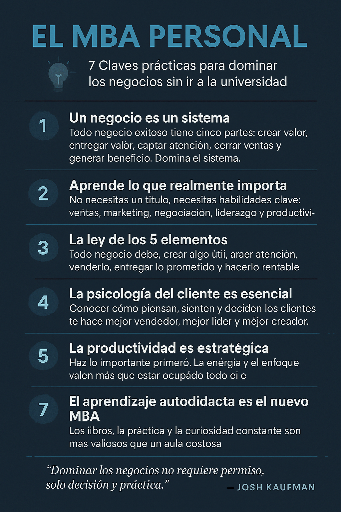
orador 1: Bienvenidos a "Conecta y Lidera", soy Ana y me acompaña Carlos. Hoy vamos a hablar sobre un aspecto esencial pero muchas veces ignorado en la era digital: el lenguaje no verbal en la comunicación online. Lo haremos a partir del libro de Joan Àlvaro, que nos ofrece una guía clara y reveladora sobre cómo la expresión corporal, el tono y otros elementos influyen incluso a través de una pantalla. En un contexto donde el trabajo híbrido y remoto sigue creciendo, este tema se vuelve más actual que nunca.
orador 2: Así es, Ana. Muchos creen que al comunicarnos por videollamadas o mensajes escritos, el lenguaje no verbal desaparece. Pero en realidad, sigue estando presente, solo que cambia su forma. Joan Àlvaro nos muestra cómo interpretar y usar esos elementos para comunicar con eficacia, autenticidad e influencia. Su enfoque es especialmente útil para quienes lideran reuniones virtuales, imparten formación online o construyen relaciones profesionales a distancia.
orador 1: El autor explica que en una videollamada, el encuadre de la cámara, la iluminación, la posición del cuerpo y la expresión facial transmiten mensajes poderosos. Una postura erguida, una mirada directa a la cámara y una sonrisa genuina pueden marcar la diferencia en la percepción del otro. Joan recomienda usar luz natural siempre que sea posible, evitar fondos recargados y mantener el rostro bien visible, todo esto refuerza la percepción de cercanía y profesionalismo.
orador 2: Y también menciona que el tono de voz cobra un protagonismo especial. En la comunicación online, donde a veces hay menos pistas visuales, el ritmo, la entonación y la claridad de la voz son determinantes para transmitir seguridad, cercanía o entusiasmo. Hablar con un volumen adecuado, vocalizar bien y usar variaciones de tono evita que el mensaje suene monótono. Esto es especialmente relevante en presentaciones virtuales o webinars, donde la atención del público es más difícil de retener.
orador 1: Un punto muy interesante del libro es el manejo de los silencios. En una conversación virtual, los silencios pueden interpretarse como desconexión o falta de interés. Joan recomienda acompañarlos con lenguaje corporal visible —como asentir con la cabeza, levantar las cejas o sonreír— o verbalizarlos: decir “déjame pensarlo un segundo” o “voy a revisar un dato” mantiene la interacción viva. En reuniones de equipo, esto puede ayudar a evitar malentendidos o momentos incómodos.
orador 2: También hace énfasis en la comunicación escrita. En correos, chats o mensajes de texto, el lenguaje no verbal se traduce en elementos como el uso de signos de puntuación, emojis, estructura del mensaje y tiempos de respuesta. Por ejemplo, escribir en mayúsculas puede interpretarse como gritar, mientras que el uso excesivo de puntos suspensivos puede transmitir inseguridad o duda. Aprender a construir una voz digital coherente y empática es vital en la comunicación asincrónica.
orador 1: Joan Àlvaro también subraya la importancia de la coherencia. Que nuestro lenguaje verbal y no verbal estén alineados. Porque si decimos que estamos abiertos a ideas pero cruzamos los brazos y evitamos el contacto visual, el mensaje no será creíble. En el entorno digital, esto significa que la forma en que nos mostramos debe respaldar lo que decimos. La congruencia genera confianza, especialmente cuando no hay interacción física.
orador 2: Otro consejo práctico es la preparación previa. Joan sugiere probar con anticipación el equipo, ensayar frente a la cámara, revisar el fondo, el encuadre y el sonido. Incluso recomienda pensar en la ropa que usamos: colores neutros, evitar estampados que distraigan y siempre cuidar la presentación. Todo esto contribuye a proyectar una imagen clara, confiable y profesional. Hoy en día, esa preparación marca la diferencia entre una reunión efectiva y una experiencia frustrante.
orador 1: Además, se recomienda usar el lenguaje corporal para reforzar el mensaje. Gestos abiertos con las manos, movimientos suaves, inclinaciones leves hacia adelante al escuchar, todos son indicadores de atención e interés. Es importante evitar la rigidez, el movimiento excesivo o el mirar constantemente hacia otro lado. Incluso detalles como asentir con la cabeza durante la intervención de un compañero refuerzan la dinámica positiva en la comunicación.
orador 2: En el capítulo dedicado al liderazgo digital, Joan destaca que quienes lideran equipos remotos deben desarrollar una presencia fuerte a través de la pantalla. Esto incluye saber cuándo hablar y cuándo escuchar, cómo utilizar el contacto visual virtual y cómo generar cercanía incluso desde la distancia. Los líderes deben aprender a detectar señales no verbales sutiles en sus equipos, como cansancio, desmotivación o desconexión emocional.
orador 1: Otro aspecto muy útil del libro es el enfoque en la empatía digital. Joan recuerda que detrás de cada cámara o mensaje hay una persona con emociones. Saber mostrar comprensión, validar sentimientos y adaptar el lenguaje al estado emocional del otro, mejora significativamente las relaciones virtuales. No se trata solo de comunicar datos, sino de conectar humanamente.
orador 2: En resumen, este libro es una herramienta valiosa para quienes lideran equipos a distancia, hacen presentaciones online, enseñan o simplemente quieren mejorar su impacto comunicativo en entornos digitales. El lenguaje no verbal no desaparece en lo digital: se transforma. Y aprender a dominar esa nueva forma es una ventaja competitiva en el mundo actual, donde la pantalla es, cada vez más, nuestro escenario.
orador 1: Gracias por acompañarnos en este episodio de "Conecta y Lidera". Esperamos que estas ideas de Joan Àlvaro te ayuden a expresarte mejor, a leer mejor a los demás y a liderar con más presencia incluso a través de una pantalla. Recuerda: tu imagen digital también habla. Cada gesto, cada pausa y cada silencio construyen tu liderazgo.
orador 2: Nos encontramos en el próximo episodio. Hasta entonces, sigue creciendo, sigue conectando y sigue comunicando con todo tu lenguaje, incluso el que no se dice. Porque en la era digital, más que nunca, el cuerpo también está en línea.
💬 Lecciones Clave
1️⃣ El contexto digital transforma la comunicación
Sin gestos ni tono presencial, cada palabra escrita se amplifica. Elige bien lo que y cómo lo dices.
2️⃣ Los emojis son el nuevo lenguaje emocional
Usados con criterio, ayudan a matizar el mensaje y expresar intenciones no verbales.
3️⃣ Tu rostro sigue hablando (en videollamadas)
Expresiones, contacto visual y gestos siguen siendo claves en videoconferencias. Activa la cámara y comunica con tu presencia.
4️⃣ La velocidad de respuesta también comunica
Responder demasiado rápido o lento puede interpretarse emocionalmente. Administra tu tiempo de forma consciente.
5️⃣ El diseño de tus mensajes importa
El formato, orden y claridad visual (negritas, espaciado, estructura) son parte de tu lenguaje no verbal online.
6️⃣ Tu estilo de escritura revela tu actitud
Formalidad, informalidad, puntuación y tono escrito crean una percepción emocional inmediata.
7️⃣ Escuchar digitalmente es observar con atención
Leer entre líneas, interpretar silencios y reaccionar con empatía es clave para la conexión digital.
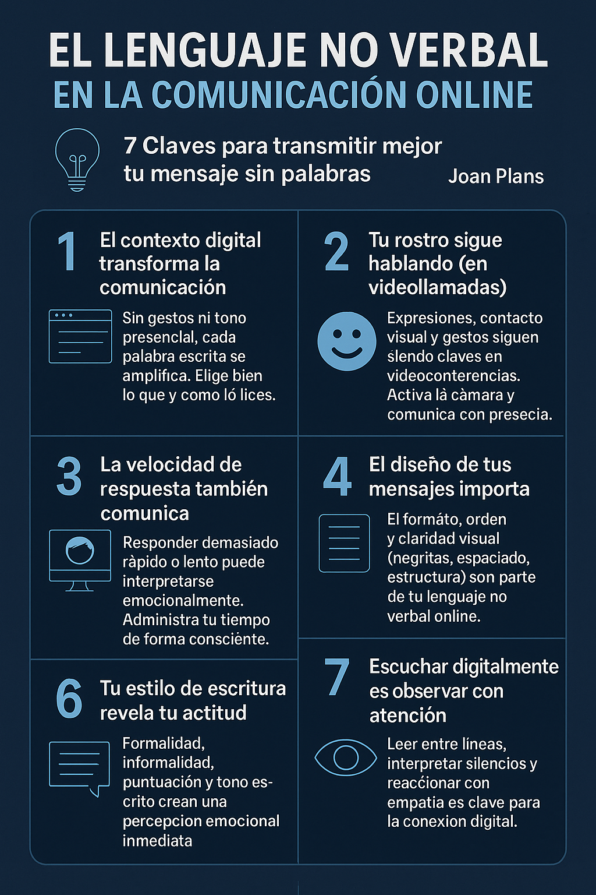
orador 1: Bienvenidos a "Conecta y Lidera", soy Ana y me acompaña Carlos. Hoy vamos a hablar de una herramienta esencial para cualquier líder: la comunicación pública. Y lo haremos a través del libro "El discurso perfecto" de Bill McGowan, un manual práctico sobre cómo hablar en público con claridad, confianza y poder. Es un libro que no solo enseña a hablar mejor, sino a pensar estratégicamente sobre lo que decimos y cómo lo decimos, algo crucial en cualquier rol de liderazgo.
orador 2: Así es, Ana. McGowan ha entrenado a líderes, ejecutivos y celebridades, y en este libro comparte sus mejores estrategias para construir mensajes que impacten. El autor sostiene que todos podemos mejorar nuestra comunicación si aprendemos a estructurar bien nuestras ideas y controlar nuestro lenguaje verbal y no verbal. La premisa fundamental es que el contenido sin forma pierde fuerza, y la forma sin contenido carece de impacto. Por eso, la comunicación efectiva es tanto un arte como una ciencia.
orador 1: Uno de los pilares del libro es la técnica de las "7 Reglas del Discurso Perfecto". Estas reglas ayudan a construir un mensaje que sea claro, convincente y memorable. La primera es comenzar con fuerza. En lugar de una introducción genérica, McGowan recomienda captar la atención con una historia emocional, una estadística impactante, una pregunta provocadora o una afirmación audaz. Esto crea un anclaje emocional desde el inicio y establece una conexión inmediata con la audiencia.
orador 2: La segunda regla es "tener un mensaje central claro". McGowan dice que cada discurso debe girar en torno a una idea principal que el público pueda recordar fácilmente. Preguntas como: ¿Qué quiero que la audiencia recuerde?, ¿Qué quiero que hagan después de escucharme? ayudan a mantener el enfoque y la coherencia. Es como construir un faro que guíe todo el mensaje y que impida que nos desviemos por detalles irrelevantes.
orador 1: Otra regla importante es la de "ser breve pero sustancioso". McGowan nos recuerda que la atención del público es limitada, por lo que debemos ir al grano y evitar el exceso de información. Un mensaje eficaz es aquel que se recuerda, no el que lo dice todo. Esto implica aprender a editar, a seleccionar solo lo que aporta valor real. Menos es más cuando se trata de captar y mantener la atención.
orador 2: También está la regla de "mostrar, no solo decir". Aquí McGowan enfatiza la importancia de usar ejemplos concretos, anécdotas personales, metáforas visuales y descripciones sensoriales. Una historia bien contada es mucho más poderosa que una lista de datos. Cuando visualizamos lo que se nos dice, comprendemos mejor y conectamos emocionalmente. Esta técnica permite que el mensaje cobre vida y permanezca en la memoria del oyente.
orador 1: McGowan también destaca la importancia del lenguaje corporal. Nuestra postura, expresiones faciales, el contacto visual, los gestos y el tono de voz comunican tanto como las palabras. Una buena comunicación pública es integral: no solo decimos, sino que mostramos. Una postura abierta transmite seguridad; una voz firme transmite autoridad; una sonrisa auténtica genera conexión y empatía. Ignorar estos elementos puede debilitar incluso el mejor contenido.
orador 2: Me gustó mucho cuando el autor habla de la autenticidad. El mejor discurso no es el más sofisticado, sino el más honesto. Conectar con el público implica mostrar humanidad, contar experiencias reales y hablar desde el corazón, no desde el ego. Cuando somos genuinos, somos memorables. La vulnerabilidad, bien manejada, puede ser una herramienta de liderazgo poderosa porque crea cercanía y credibilidad.
orador 1: Otra regla clave es adaptar el mensaje al público. No es lo mismo hablarle a un grupo de jóvenes emprendedores que a ejecutivos de una empresa tradicional. McGowan insiste en investigar a la audiencia, conocer sus intereses, expectativas y nivel de conocimiento. Esa preparación permite ajustar el tono, el contenido, el ritmo y el estilo de entrega. Personalizar el mensaje es una señal de respeto y aumenta exponencialmente su efectividad.
orador 2: Y no podíamos dejar de lado el entrenamiento. McGowan insiste en que la práctica es clave. Ensayar en voz alta, grabarse, pedir retroalimentación, repetir hasta dominar el ritmo, los silencios y las pausas. Practicar incluso las improvisaciones. La excelencia en la comunicación no es un don, es una habilidad que se entrena con disciplina y constancia. La práctica convierte los nervios en seguridad y la inseguridad en fluidez.
orador 1: Además, el libro ofrece estrategias para manejar los nervios y mejorar la presencia escénica. Técnicas de respiración profunda, visualización positiva y preparación mental ayudan a reducir la ansiedad. También recomienda tener un plan de contingencia ante fallos técnicos, interrupciones o preguntas difíciles. El orador preparado transmite seguridad, incluso en momentos de incertidumbre.
orador 2: Otra parte muy útil del libro es la sección sobre cómo estructurar diferentes tipos de presentaciones: discursos formales, reuniones corporativas, entrevistas en medios o charlas inspiracionales. McGowan adapta sus reglas a cada formato y ofrece consejos específicos para cada uno. Esta versatilidad es clave en un mundo donde comunicamos en muchos contextos diferentes.
orador 1: Y algo que me pareció muy relevante es la invitación del autor a asumir la responsabilidad del impacto. No basta con hablar bien, hay que asegurarse de que el mensaje se entienda, se recuerde y genere acción. El verdadero éxito de un discurso no es que el público aplauda, sino que actúe, piense o sienta diferente después de escucharnos.
orador 2: En resumen, "El discurso perfecto" es una herramienta poderosa para cualquier persona que desee mejorar su presencia, su influencia y su capacidad de inspirar. Hablar bien en público es una ventaja competitiva en el mundo actual, y este libro nos da las claves para lograrlo con claridad, empatía, estrategia y autenticidad. Es un entrenamiento integral para convertirnos en comunicadores más humanos y más impactantes.
orador 1: Gracias por acompañarnos en este episodio de "Conecta y Lidera". Esperamos que estas ideas de Bill McGowan te inspiren a elevar tu comunicación, conectar con autenticidad y liderar con tu voz. Recuerda que cada palabra cuenta, y cada presentación es una oportunidad para dejar huella, abrir puertas y transformar percepciones.
orador 2: Nos escuchamos en el próximo episodio. Hasta entonces, sigue creciendo, sigue comunicando y sigue liderando con impacto. Porque la voz de un líder puede cambiar el rumbo de una conversación, de una organización y hasta de una vida.
🎤 Lecciones Clave
1️⃣ Di menos, logra más
Evita el exceso de palabras. Sé claro, directo y enfocado. El mensaje breve es más poderoso.
2️⃣ Encuentra tu “gancho”
Abre fuerte. Tu primera frase debe captar atención y dar razones para seguir escuchando.
3️⃣ Controla el lenguaje corporal
La postura, mirada y gestos deben transmitir seguridad. La forma comunica tanto como las palabras.
4️⃣ Evita el “bla, bla, bla”
No uses relleno ni clichés vacíos. Cada palabra debe tener intención.
5️⃣ Habla con ritmo y pausa
El silencio estratégico y un ritmo natural aumentan el impacto de tu mensaje.
6️⃣ Adapta tu mensaje a la audiencia
No todos escuchan igual. Personaliza el discurso según el contexto y las personas.
7️⃣ Practica como si fuera real
La improvisación brillante viene de la preparación. Ensaya con intención, no de memoria.
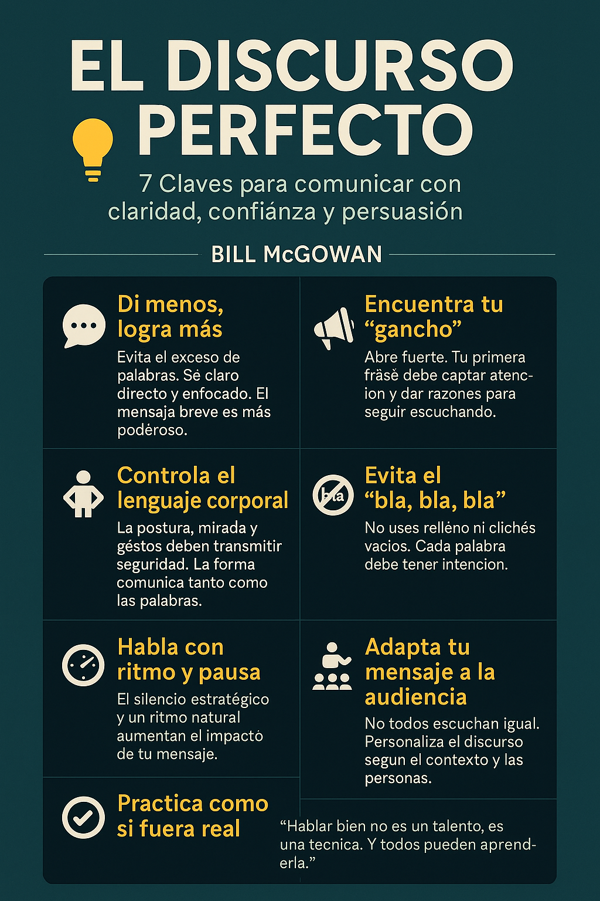
orador 1: Bienvenidos a un nuevo episodio de "Conecta y Lidera". Soy Ana y me acompaña Carlos. Hoy vamos a sumergirnos en uno de los libros más prácticos y aplicables del mundo de las ventas: "El arte de cerrar la venta" de Brian Tracy. Este libro es una guía poderosa para quienes desean llevar sus habilidades comerciales al siguiente nivel y aumentar sus cierres de manera profesional y efectiva.
orador 2: Hola a todos. Me encanta este tema porque Tracy no solo comparte técnicas, sino que ofrece una visión estratégica de lo que significa realmente vender con éxito. "El arte de cerrar la venta" es una obra que va más allá de tácticas; es una transformación de mentalidad. En esencia, cerrar ventas no es presionar ni manipular, sino guiar con claridad y empatía hacia una decisión beneficiosa para ambas partes.
orador 1: Uno de los mensajes principales del libro es que el cierre no es un momento mágico que ocurre al final. Es el resultado natural de una conversación bien dirigida desde el inicio. Desde el primer contacto, el vendedor siembra confianza, hace preguntas clave, entiende necesidades y muestra el verdadero valor de su solución. Cada paso bien dado prepara el terreno para un cierre sin resistencia.
orador 2: Totalmente. Tracy enfatiza que los mejores vendedores no son los que más hablan, sino los que mejor escuchan. Hacer preguntas abiertas, explorar motivaciones y descubrir objeciones ocultas es esencial para poder responder con precisión. El vendedor que domina el arte de escuchar puede adaptar su mensaje a lo que realmente mueve al cliente, y eso hace toda la diferencia.
orador 1: Otro aspecto crucial que Tracy destaca es la creencia profunda en lo que uno vende. No puedes cerrar ventas consistentemente si no estás convencido de que tu producto o servicio realmente mejora vidas o negocios. Esa convicción se transmite con cada palabra, cada gesto y cada propuesta. El cliente percibe la seguridad, y eso inspira confianza.
orador 2: Y cuando hablamos de técnicas, el libro está lleno de herramientas prácticas. Por ejemplo, la "alternativa cerrada" es una técnica donde se ofrece al cliente una elección limitada que lo lleva naturalmente al cierre. En lugar de decir "¿quiere comprar?", se plantea: "¿Prefiere que lo facturemos mensual o trimestralmente?". Este método reduce la ansiedad y enfoca al cliente en las opciones, no en la decisión misma.
orador 1: Otra herramienta poderosa es el "cierre por resumen". Aquí el vendedor recapitula los beneficios clave que el cliente ya ha aceptado. Por ejemplo: "Entonces, tenemos un producto que cumple con sus requisitos, se ajusta a su presupuesto y está disponible de inmediato. ¿Le parece si empezamos hoy mismo?". Es una técnica muy eficaz porque reafirma el valor y refuerza la lógica de la decisión.
orador 2: También tenemos el "cierre por escasez". Tracy sugiere que si hay una oferta limitada en tiempo o en unidades, comunicarlo de forma ética puede acelerar la decisión del cliente. Frases como "esta promoción está disponible hasta el viernes" o "nos quedan pocas unidades en inventario" crean urgencia y ayudan a que el cliente actúe.
orador 1: No podemos olvidar el "cierre por compromiso previo". Consiste en hacer que el cliente se comprometa con pequeños síes a lo largo de la conversación. Cuando se llega al momento de cerrar, ya existe una predisposición positiva. Ejemplos como: "¿Le parece útil esta solución?", "¿Cree que esto le ahorraría tiempo?" abren la puerta al cierre final con mayor facilidad.
orador 2: Y para los clientes más racionales, está el "cierre lógico". En esta técnica, el vendedor presenta cifras, comparaciones y datos objetivos que justifican la compra. Es ideal para compradores analíticos que necesitan una base racional sólida para decidir.
orador 1: Una técnica que me gusta mucho es el "cierre por historia". Contar un caso real de otro cliente que estaba en una situación similar y tuvo excelentes resultados. Esta estrategia conecta emocionalmente, genera confianza y reduce las dudas. El cliente se ve reflejado en esa historia.
orador 2: Como ves, Tracy no deja nada al azar. Cada técnica está pensada para distintos tipos de clientes y situaciones. Lo más importante es que el vendedor sepa identificar qué tipo de cierre aplicar en cada caso. Y eso solo se logra con práctica, observación y mejora continua.
orador 1: Algo que me impactó fue cómo Tracy aborda el miedo al rechazo. Él dice que es el mayor obstáculo para cerrar ventas, y tiene razón. Muchos vendedores abandonan antes de pedir el cierre por miedo a un no. Pero Tracy enseña que el rechazo no es personal, es parte del proceso. El vendedor exitoso lo entiende, lo acepta y sigue adelante con actitud positiva y enfoque en la siguiente oportunidad.
orador 2: Además, Tracy insiste en la importancia de la preparación. Cada reunión debe tener un objetivo claro, un plan de preguntas y una estrategia para manejar objeciones. El cierre es mucho más probable cuando el vendedor se presenta con seguridad y preparación, en lugar de improvisar.
orador 1: También me gustó que el autor habla de la ética en las ventas. Cerrar una venta no es un fin en sí mismo. Se trata de ayudar genuinamente al cliente a tomar una buena decisión. La venta debe ser beneficiosa para ambos lados. Cuando eso sucede, el cliente no solo compra, sino que recomienda y regresa.
orador 2: En resumen, "El arte de cerrar la venta" es una guía concreta, directa y eficaz para cualquier persona que quiera mejorar sus resultados comerciales. Ya sea que estés empezando en ventas o tengas años de experiencia, este libro te ofrece herramientas, enfoque y una mentalidad poderosa para convertirte en un profesional más confiado, persuasivo y centrado en servir con propósito.
orador 1: Gracias por estar con nosotros en este nuevo episodio de "Conecta y Lidera". Esperamos que estas ideas de Brian Tracy te impulsen a mejorar cada interacción de venta, con estrategia, con convicción y con corazón. Recuerda: cada conversación es una oportunidad para conectar genuinamente.
orador 2: Nos vemos en el próximo episodio. Sigue creciendo, sigue conectando y recuerda: cerrar ventas no es el final del camino, es el inicio de una relación duradera basada en confianza, valor y servicio mutuo.
🧠 Lecciones Clave
1️⃣ El cierre empieza desde el inicio
Cada parte de la venta debe preparar al cliente para decir “sí”. El cierre no es un evento, es un proceso.
2️⃣ Cree en tu producto y en ti mismo
La confianza es contagiosa. Si tú no crees en lo que vendes, nadie más lo hará.
3️⃣ Escucha activamente
El cliente te dirá cómo venderle si sabes escuchar. Presta atención a sus palabras, tono y preocupaciones.
4️⃣ Usa preguntas estratégicas
Las preguntas abren el camino al cierre. Guían la conversación hacia la solución, no hacia la presión.
5️⃣ Identifica las objeciones reales
Muchos “no” esconden dudas o miedos. Detectar la objeción verdadera te permite resolverla.
6️⃣ Cierra con naturalidad
El cierre no debe sentirse forzado. Si seguiste bien el proceso, el “sí” será una consecuencia lógica.
7️⃣ Sé persistente, pero profesional
No todos compran al primer intento. La venta se gana con seguimiento respetuoso y valor constante.
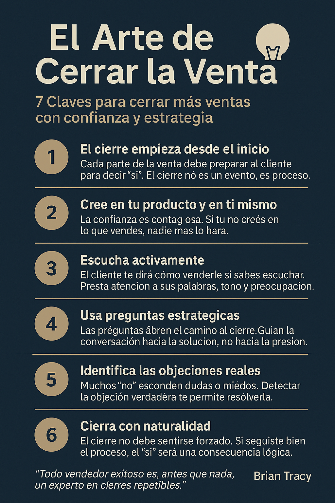
orador 1: Bienvenidos a "Conecta y Lidera", soy Ana y me acompaña Carlos. Hoy vamos a adentrarnos en un libro fascinante que conecta mente, actitud y éxito comercial: "La Ciencia de las Ventas" de Napoleon Hill. Un texto que no solo transforma la manera en que entendemos el proceso de venta, sino también cómo nos entendemos a nosotros mismos como líderes y agentes de cambio.
orador 2: Así es, Ana. Hill, conocido mundialmente por su clásico "Piense y hágase rico", nos ofrece en esta obra una guía poderosa y profunda sobre cómo convertirnos en vendedores extraordinarios, no solamente por técnica, sino por mentalidad y filosofía de vida. Su premisa central es clara: vender no es manipular, es influir. Y esa influencia se construye desde adentro, desde una actitud mental positiva, una visión clara y una creencia inquebrantable en uno mismo.
orador 1: Una de las ideas más impactantes del libro es que todo acto de venta comienza en la mente del vendedor. Hill insiste en que la fe en uno mismo, la claridad de objetivos y la persistencia son más importantes que cualquier argumento lógico o táctica específica. Es decir, antes de aprender a persuadir a otros, debemos aprender a dirigir nuestro pensamiento con disciplina.
orador 2: Exactamente. Hill lo expresa con fuerza: el vendedor primero debe venderse a sí mismo. Si no crees profundamente en el producto, en la propuesta de valor y sobre todo en tu capacidad para ayudar a otros, será muy difícil generar una conexión genuina con el cliente. Y esa falta de convicción se percibe, aunque no se diga en palabras. La energía interna se comunica en cada gesto, cada mirada, cada tono de voz.
orador 1: Hill también enfatiza la importancia de la "autosugestión". Nos anima a usar afirmaciones positivas, a visualizar nuestros objetivos alcanzados, a reprogramar nuestro subconsciente con mensajes de poder. Es como entrenar a nuestro cerebro para que trabaje a nuestro favor, para que la duda se convierta en certeza y el miedo en acción.
orador 2: Y eso se conecta con otro de los pilares fundamentales del libro: el "deseo ardiente". No basta con querer algo de forma tibia. Hill habla de desarrollar un deseo tan fuerte, tan dominante, que no deje espacio para la indecisión. Un deseo que se traduzca en acción continua, persistente e inquebrantable. Esa pasión, esa intensidad, es contagiosa y tiene un impacto directo en los resultados.
orador 1: Otro aspecto clave en la filosofía de Hill es el enfoque en el servicio. Él sostiene que el vendedor más exitoso no es el que convence a la fuerza, sino el que se convierte en un solucionador de problemas, en alguien que verdaderamente mejora la vida de su cliente. Cuanto más valor entregas, cuantas más necesidades resuelves, más fácil y natural se vuelve la venta. En palabras simples: vender es ayudar.
orador 2: Me encanta ese cambio de perspectiva, porque transforma todo el proceso. Ya no se trata de cerrar una venta, sino de abrir una relación. Hill lo deja claro: el verdadero capital del vendedor no está en su cartera de productos, sino en su reputación, su integridad y la confianza que genera. Una venta es solo el inicio de una conexión que puede durar años.
orador 1: Además, Hill pone mucho énfasis en la perseverancia. A lo largo del libro encontramos historias de vendedores que enfrentaron decenas de rechazos antes de lograr sus primeros éxitos. La diferencia entre quienes triunfan y quienes abandonan no está en el talento, sino en la capacidad de seguir adelante. Persistir cuando otros se detienen. Volver a intentarlo con la misma energía y fe.
orador 2: En resumen, "La Ciencia de las Ventas" no es simplemente un manual de ventas. Es una guía para el desarrollo personal, una herramienta para fortalecer la mente y el carácter. Porque al final, vender no es un acto mecánico, es un acto humano. Es influir positivamente en la vida de los demás, empezando por la propia. Y eso, sin duda, es liderazgo.
orador 1: Gracias por acompañarnos en este episodio de "Conecta y Lidera". Esperamos que estas ideas de Napoleon Hill te inspiren a liderar con intención, a vender con propósito y a vivir con pasión. Recuerda que el éxito exterior siempre comienza con un trabajo interior profundo.
orador 2: Nos vemos en el siguiente episodio. Hasta entonces, sigue creciendo, sigue conectando y recuerda: cada venta es una oportunidad para transformar vidas, empezando por la tuya.
💬 Lecciones Clave
1️⃣ La venta comienza en la mente
Antes de convencer a otros, debes creer firmemente en lo que ofreces. La fe en ti y tu producto es el primer paso.
2️⃣ Deseo ardiente = resultados extraordinarios
Una verdadera pasión por alcanzar el éxito impulsa la acción persistente y el crecimiento.
3️⃣ El cliente compra emociones, no productos
Las decisiones de compra se basan en emociones. Aprende a conectar con los deseos y aspiraciones de tu cliente.
4️⃣ Escucha más, habla menos
Un gran vendedor hace preguntas, escucha con atención y adapta su mensaje a las necesidades reales del cliente.
5️⃣ La persistencia vence al rechazo
Todo gran vendedor enfrenta el "no". El éxito llega para quien sigue adelante sin rendirse.
6️⃣ Visualiza el cierre antes de empezar
Imagina el éxito de cada venta antes de ejecutarla. Tu mente trabajará en línea con ese resultado.
7️⃣ Vender es servir
Ayuda genuinamente a otros a mejorar su vida o negocio. Cuando aportas valor real, la venta es consecuencia.
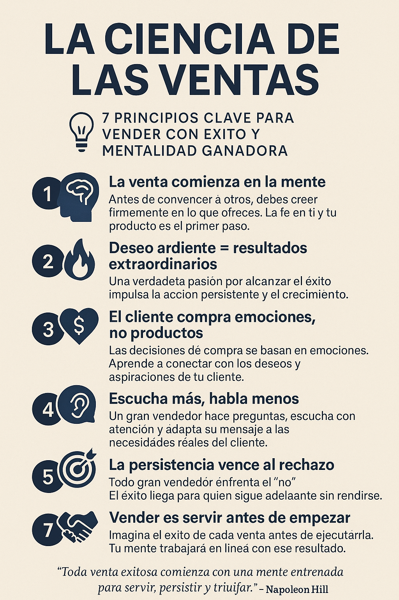
Orador 1 (Ana): Bienvenidos a "Conecta y Lidera", el podcast donde exploramos ideas poderosas sobre liderazgo, desarrollo personal y negocios. Soy Ana, y me acompaña Carlos para hablar hoy de un libro clave en el pensamiento emprendedor moderno. Hoy nos adentramos en una obra que invita a repensar completamente la innovación y el futuro: "De cero a uno" de Peter Thiel.
Orador 2 (Carlos): Hola a todos. Como bien dice Ana, este libro ha marcado un antes y un después en la manera de pensar el emprendimiento. "De cero a uno" no solo ofrece consejos prácticos, sino que también presenta una filosofía profunda sobre cómo se construye el futuro. Peter Thiel, cofundador de PayPal y uno de los primeros inversores en Facebook, plantea una visión provocadora: el verdadero progreso ocurre cuando creamos algo totalmente nuevo.
Orador 1 (Ana): Y justo de eso se trata el título. Ir de cero a uno significa innovar, crear desde la nada, construir algo que antes no existía. Es completamente distinto a ir de uno a n, que es simplemente copiar, mejorar o escalar algo que ya conocemos. Thiel plantea que la sociedad valora mucho la competencia, pero él defiende que los verdaderos visionarios son aquellos que evitan competir creando sus propias reglas.
Orador 2 (Carlos): Exacto. Una de las ideas centrales del libro es que el éxito real viene de escapar de la competencia. Para Thiel, las empresas más valiosas son aquellas que se convierten en monopolios creativos. No monopolios en el sentido negativo, sino empresas que ofrecen un producto o servicio tan único que nadie más puede igualarlo. Esto les da estabilidad, crecimiento sostenido y la posibilidad de pensar a largo plazo.
Orador 1 (Ana): Y esto se conecta con su famosa pregunta: “¿Qué verdad importante muy pocos están dispuestos a aceptar contigo?” Esta pregunta no es solo para provocar, sino para hacerte reflexionar sobre cuál es tu ventaja oculta, tu idea contracultural que podría ser la base de un nuevo emprendimiento o movimiento. Es una invitación a pensar diferente, incluso si eso significa ir contra la corriente.
Orador 2 (Carlos): Otra parte fascinante del libro es su visión sobre los equipos fundadores. Thiel insiste en que una startup es más que una empresa: es una comunidad, una alianza. Los equipos deben compartir una visión común, complementarse en habilidades y, sobre todo, confiar profundamente unos en otros. La cultura fundacional de una empresa es lo que marca su ADN para el futuro.
Orador 1 (Ana): Y no podemos dejar de mencionar su crítica al conformismo tecnológico. Thiel cree que muchas startups se conforman con seguir las modas del momento, como la inteligencia artificial, blockchain o apps sociales, sin preguntarse realmente si están resolviendo un problema importante. Para él, cada empresa debería empezar con una verdad fundamental y un enfoque audaz para cambiar el mundo.
Orador 2 (Carlos): Además, Thiel habla sobre la planificación deliberada. A diferencia de la idea de "ir improvisando sobre la marcha", él defiende que tener una estrategia clara desde el inicio es clave. Eso no significa rigidez, sino tener una visión concreta y metas a largo plazo que sirvan como guía. Los grandes líderes no solo reaccionan al presente, sino que construyen el futuro con intención.
Orador 1 (Ana): En el contexto del liderazgo, esto es esencial. Un líder que piensa de cero a uno no se limita a gestionar lo existente. Es alguien que desafía lo establecido, que tiene el coraje de imaginar algo distinto y la disciplina para hacerlo realidad. Es el tipo de liderazgo que inspira, que transforma, que marca huella.
Orador 2 (Carlos): En definitiva, "De cero a uno" no es solo un libro para emprendedores. Es una invitación a todos los que quieren dejar una marca, a quienes no se conforman con repetir lo que otros hacen. Nos recuerda que cada gran avance en la historia comenzó con alguien que vio el mundo de forma distinta y decidió actuar.
Orador 1 (Ana): Esperamos que este episodio de "Conecta y Lidera" te haya motivado a pensar diferente, a salir de la zona de confort mental y a cuestionar las verdades asumidas. El liderazgo comienza con la capacidad de imaginar algo mejor y comprometerse a crearlo.
Orador 2 (Carlos): Gracias por acompañarnos una vez más. Nos escuchamos en el próximo episodio, donde seguiremos explorando los libros y las ideas que desafían lo común y nos empujan a liderar con más audacia y autenticidad.
🚀 Lecciones Clave
1️⃣ El progreso real va de cero a uno
Crear algo nuevo es mucho más valioso que mejorar lo existente. La verdadera innovación es hacer lo que nadie ha hecho.
2️⃣ Los monopolios son buenos si son creativos
Las empresas realmente exitosas dominan un nicho y lo expanden. El monopolio fomenta innovación, no la detiene.
3️⃣ No copies, piensa por ti mismo
Evita las fórmulas. Las mejores ideas surgen cuando se cuestionan las creencias comunes.
4️⃣ El momento correcto importa
Elige bien cuándo lanzar tu producto. Demasiado temprano o tarde puede ser fatal.
5️⃣ Los fundadores dan forma a la cultura
El ADN de una empresa lo definen sus creadores. Su visión y valores se reflejan en cada decisión.
6️⃣ La tecnología no es solo software
Innovar es aplicar nuevas formas de hacer las cosas en cualquier industria, no solo en tecnología digital.
7️⃣ El pensamiento contracorriente crea valor
Si todos creen en algo, hay menos oportunidad. Busca verdades que otros no ven y actúa sobre ellas.
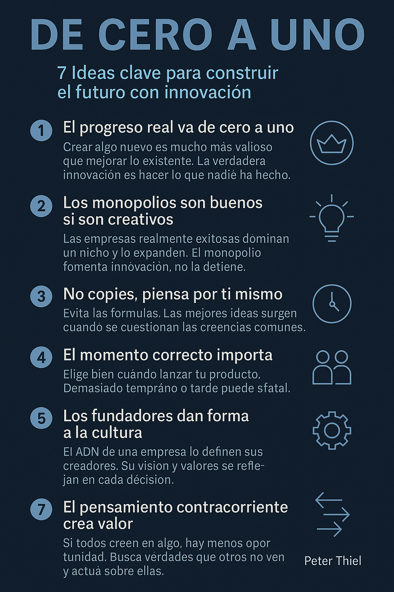
Orador 1 (Ana): Bienvenidos a "Conecta y Lidera", el podcast donde exploramos las ideas más transformadoras sobre liderazgo, desarrollo personal y negocios. Soy Ana, y me acompaña como siempre, Carlos. Hoy tenemos un episodio muy especial, porque abordaremos un libro que ha sido referencia para muchos que buscan reinventarse desde adentro.
Orador 2 (Carlos): Hola a todos, encantado de estar aquí. Efectivamente, Ana. Hoy vamos a sumergirnos en un libro fascinante y revolucionario: "Psycho-Cybernetics" de Maxwell Maltz, una obra que ha impactado profundamente el campo del desarrollo personal desde su publicación en 1960. Aunque fue escrito hace décadas, sus principios siguen siendo absolutamente relevantes en el mundo actual.
Orador 1 (Ana): Exacto, Carlos. Y lo más interesante es que este libro fue escrito por un cirujano plástico. Maltz comenzó a notar que muchos de sus pacientes, incluso después de haber pasado por cirugías exitosas que mejoraban significativamente su apariencia, seguían sintiéndose fracasados, inseguros o insatisfechos con su vida. Esto lo llevó a reflexionar profundamente sobre la relación entre la imagen física y la imagen mental.
Orador 2 (Carlos): Ese descubrimiento lo llevó a una conclusión poderosa: no basta con transformar el exterior. El cambio verdadero y duradero empieza desde adentro. Fue así como desarrolló el concepto de la "autoimagen", una idea que plantea que la manera en que nos vemos a nosotros mismos define directamente cómo actuamos, cómo tomamos decisiones y qué tan lejos podemos llegar.
Orador 1 (Ana): Y esa es una de las ideas centrales del libro: nuestra autoimagen actúa como un sistema de guía interna, casi como un termostato que regula nuestro comportamiento. Si pensamos que somos personas fracasadas o mediocres, actuaremos como tal, sin importar cuánto éxito tengamos en el exterior. Es como si nuestras creencias internas sabotearan cualquier avance externo.
Orador 2 (Carlos): Me parece clave cuando Maltz compara el cerebro humano con un sistema cibernético, como si fuera una máquina de precisión que se dirige hacia metas programadas. Si introducimos objetivos positivos, claros y alcanzables en nuestro sistema, y creemos realmente en nuestra capacidad, se activa lo que él llama el "mecanismo de éxito". Este mecanismo trabaja, muchas veces de forma inconsciente, para llevarnos hacia esas metas.
Orador 1 (Ana): Pero, como bien lo señala el autor, también existe el "mecanismo de fracaso". Este se activa cuando la mente está dominada por el miedo, la duda, la culpa o una crítica interna excesiva. Es como si estuviéramos constantemente saboteando nuestro camino, creyendo que no merecemos triunfar, o que no somos suficientes para lograr lo que deseamos.
Orador 2 (Carlos): Y aquí es donde entra una herramienta fundamental: la imaginación. Maltz descubrió que el subconsciente no distingue entre una experiencia vivida y una intensamente imaginada. Por eso, el ejercicio de visualizar logros, de ensayar mentalmente situaciones de éxito, tiene un efecto profundo en la manera en que actuamos posteriormente.
Orador 1 (Ana): Imaginar el éxito antes de vivirlo puede ser una práctica muy poderosa, sobre todo en el liderazgo. Si ensayas mentalmente una conversación difícil, una presentación importante o una decisión clave, llegarás a ese momento con mucha más confianza y claridad. No se trata de ilusiones, sino de preparar tu mente para responder de manera efectiva.
Orador 2 (Carlos): Totalmente. Otro concepto muy fuerte que presenta el libro es el del perdón, tanto hacia los demás como hacia uno mismo. Muchas veces estamos atados a errores del pasado, a sentimientos de culpa o a la incapacidad de dejar ir ciertas experiencias. Maltz insiste en que sin perdón no hay libertad mental. Y sin libertad, no hay posibilidad de acción efectiva.
Orador 1 (Ana): Es un llamado muy claro a la autoaceptación. A entender que cometer errores es parte del proceso de crecimiento. Como líderes, debemos ser los primeros en tratarnos con compasión y humanidad. Solo así podemos inspirar a otros a crecer sin miedo, a atreverse a actuar sin temor al juicio o al fracaso.
Orador 2 (Carlos): En resumen, "Psycho-Cybernetics" es mucho más que un libro de autoayuda. Es un manual de reprogramación mental, una guía para aprender a usar nuestra mente como aliada en el camino hacia el éxito, el bienestar y el liderazgo efectivo. No se trata sólo de pensar positivo, sino de reconstruir desde la raíz la imagen que tenemos de nosotros mismos.
Orador 1 (Ana): Y con eso cerramos este episodio de "Conecta y Lidera". Esperamos que este análisis te haya brindado nuevas herramientas para comprender tu propia autoimagen y comenzar a fortalecerla desde hoy mismo. Recuerda que el cambio interno es la base de cualquier transformación externa.
Orador 2 (Carlos): Gracias por acompañarnos una vez más. No olvides que liderar comienza por liderarte a ti mismo. Hasta la próxima, y que sigas conectando contigo para liderar con más autenticidad y poder.
🧠 Lecciones Clave del Libro
1️⃣ Tu autoimagen determina tu realidad
La forma en que te ves a ti mismo define lo que crees que puedes lograr. Cambia tu imagen mental y cambiarás tu vida.
2️⃣ La mente funciona como un sistema guiado por metas
Tu subconsciente actúa como un mecanismo cibernético: trabaja mejor cuando tiene objetivos claros y positivos.
3️⃣ El fracaso es solo retroalimentación
Cada error es una corrección en el camino, no una señal de derrota. Ajusta el rumbo y sigue.
4️⃣ La visualización positiva reprograma tu mente
Imaginar el éxito con detalle y emoción fortalece la confianza y prepara al cerebro para actuar.
5️⃣ Relájate para rendir mejor
Tensión mental bloquea la creatividad y la acción efectiva. Aprende a soltar y confiar.
6️⃣ No eres tus errores del pasado
Puedes reconstruir tu autoimagen en cualquier momento. El cambio interior crea un nuevo tú.
7️⃣ El presente es tu punto de poder
Aquí y ahora es donde puedes actuar, imaginar y rediseñar tu identidad. Vive el momento.
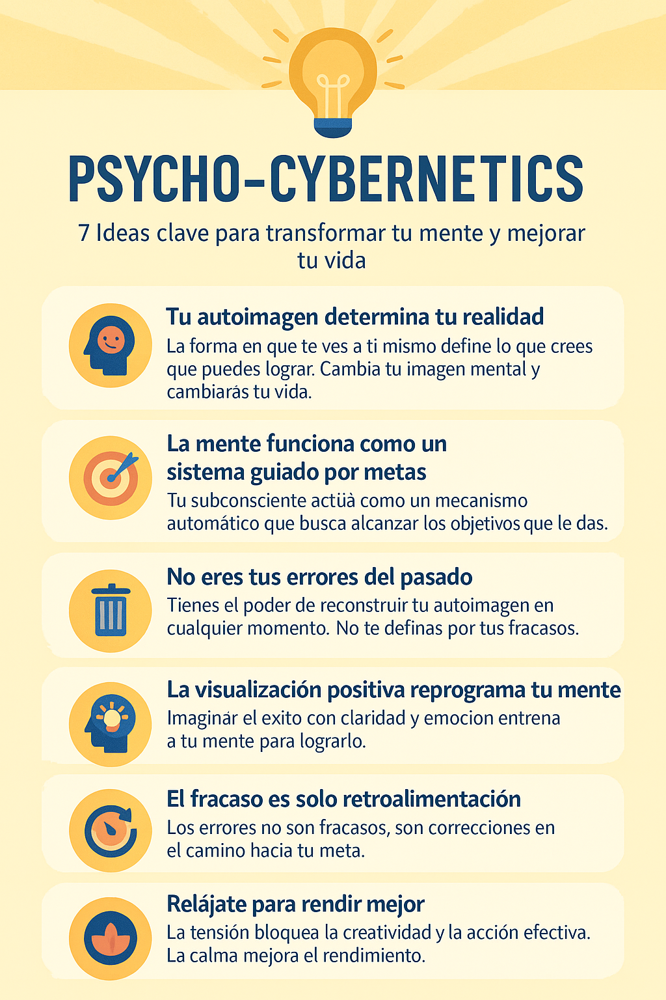
Orador 1: Bienvenidos a un nuevo episodio de "Conecta y Lidera", soy Ana y me acompaña Carlos. Hoy vamos a sumergirnos en un libro fascinante que combina economía, historia, filosofía política y liderazgo global: "Principios para enfrentar el nuevo orden mundial" de Ray Dalio. Un texto que busca explicar por qué los imperios ascienden y caen, y cómo los líderes pueden prepararse para los cambios sísmicos en el orden mundial que ya estamos comenzando a experimentar.
Orador 2: Así es, Ana. Dalio, fundador de Bridgewater Associates y uno de los inversores más influyentes del mundo, parte de su experiencia analizando mercados globales y ciclos históricos para ofrecernos una mirada clara sobre patrones repetitivos en la historia de las grandes potencias. El mensaje central es contundente: lo que estamos viviendo no es nuevo. Todo tiene precedentes, y entender el pasado puede darnos herramientas valiosas para liderar con mayor inteligencia en el presente y tomar decisiones más acertadas para el futuro.
Orador 1: El libro propone un marco para entender tres fuerzas fundamentales que mueven el mundo: el ciclo de deuda y crédito, los conflictos internos provocados por desigualdad económica y social, y los cambios geopolíticos cuando nuevas potencias emergen y otras declinan. Dalio no solo teoriza, sino que presenta un análisis riguroso respaldado por datos de los últimos 500 años. Analiza el ascenso y caída de imperios como el holandés, el británico, el estadounidense y el emergente papel de China.
Orador 2: Y eso lo hace especialmente relevante. Dalio muestra que los imperios suelen seguir un ciclo: nacen con innovación, educación, trabajo duro; luego vienen el auge económico, el exceso de confianza, el incremento de deuda y finalmente la decadencia. En este punto, el surgimiento de China como una potencia emergente frente al relativo declive de Estados Unidos plantea enormes desafíos para los líderes empresariales, políticos y sociales. ¿Cómo liderar en un mundo en transición? ¿Cómo prepararse para escenarios de alta incertidumbre y tensiones geopolíticas crecientes?
Orador 1: Me parece clave el enfoque que propone Dalio sobre la humildad intelectual. Reconoce que nadie puede predecir con certeza el futuro, pero sí podemos prepararnos mejor si entendemos patrones, ciclos y principios. Este enfoque fomenta un tipo de liderazgo que no se aferra a certezas, sino que observa con atención, cuestiona sus propios supuestos y ajusta su rumbo cuando es necesario. En un mundo cambiante, esa es una habilidad vital.
Orador 2: Exactamente. Uno de los principios que más resuena es la necesidad de tener un portafolio diversificado, y eso no se refiere solo a inversiones financieras. Aplica también a la diversidad de pensamiento, de perspectivas, de redes de apoyo. Como líderes, no podemos apostarlo todo a una sola idea o estilo. La adaptabilidad, la apertura mental y la capacidad de integrar múltiples visiones son claves para sobrevivir y prosperar en entornos complejos.
Orador 1: Otro aspecto fascinante del libro es la comparación detallada entre imperios. Cada uno tuvo su auge, estabilidad y declive, y todos mostraron patrones similares: endeudamiento excesivo, aumento de la desigualdad, polarización ideológica, y finalmente debilitamiento de sus instituciones. Esta parte del libro es una advertencia poderosa para nuestras sociedades actuales. Nos hace preguntarnos: ¿estamos repitiendo la historia? ¿Podemos aprender a tiempo?
Orador 2: Y ahí es donde entra con fuerza el concepto de liderazgo consciente. Dalio insiste en la importancia de la toma de decisiones basada en datos, en principios claros y en la capacidad de aprender rápidamente de los errores. La transparencia, la meritocracia de ideas y la cultura del feedback son valores que él ha implementado en su propia empresa y que propone como antídotos contra la decadencia organizacional.
Orador 1: Otro punto que me gustó mucho es su reflexión sobre la importancia de fortalecer las bases internas de una nación o una organización. No se trata solo de competir con otros, sino de construir instituciones sólidas, promover la educación, incentivar la innovación y fomentar el respeto por las reglas. Estas son condiciones esenciales para sostener el liderazgo a largo plazo.
Orador 2: Para cerrar, creo que este libro es una invitación a elevar la mirada. A no dejarnos atrapar por el corto plazo ni por la ansiedad del presente. Como líderes, debemos pensar en cómo nuestras decisiones de hoy construyen o debilitan los cimientos del mañana. Necesitamos desarrollar una visión más amplia, informada, basada en principios y comprometida con el bien común.
Orador 1: Totalmente de acuerdo, Carlos. "Principios para enfrentar el nuevo orden mundial" es mucho más que un análisis geopolítico o económico. Es una guía profunda para entender el mundo que estamos habitando y para desarrollar una forma de liderazgo que combine estrategia, adaptabilidad, conciencia histórica y valores sólidos.
Orador 2: Gracias por acompañarnos en este episodio de "Conecta y Lidera". Esperamos que esta conversación les haya dejado ideas poderosas para reflexionar sobre el liderazgo, el cambio y el futuro.
Orador 1: Nos escuchamos en el próximo episodio con más libros, más análisis y más herramientas para liderar con conciencia, estrategia y visión de futuro.
🌍 Ideas Clave del Libro
1️⃣ Todo imperio sigue un ciclo
Los grandes imperios nacen, crecen y caen. Conocer este patrón permite anticiparse a futuros escenarios.
2️⃣ El poder económico precede al poder militar
Primero se domina económicamente, luego se protege con fuerza. La decadencia comienza cuando se pierde la ventaja económica.
3️⃣ El ciclo de deuda es central
Exceso de deuda lleva a crisis. Quienes entienden los ciclos de deuda pueden prever las recesiones y tomar mejores decisiones.
4️⃣ La impresión de dinero tiene consecuencias
Los bancos centrales pueden aliviar problemas a corto plazo, pero a largo plazo debilitan la moneda y la confianza.
5️⃣ Las naciones se enfrentan por tres fuerzas
Internas (división política), externas (rivalidades globales) y financieras (deuda). El desequilibrio de estas define el destino de una nación.
6️⃣ China está en ascenso
Dalio analiza a China como la potencia emergente que desafía el liderazgo global de EE.UU., repitiendo patrones históricos.
7️⃣ Prepárate con principios sólidos
Adaptarse requiere educación financiera, diversificación y preparación ante escenarios complejos.
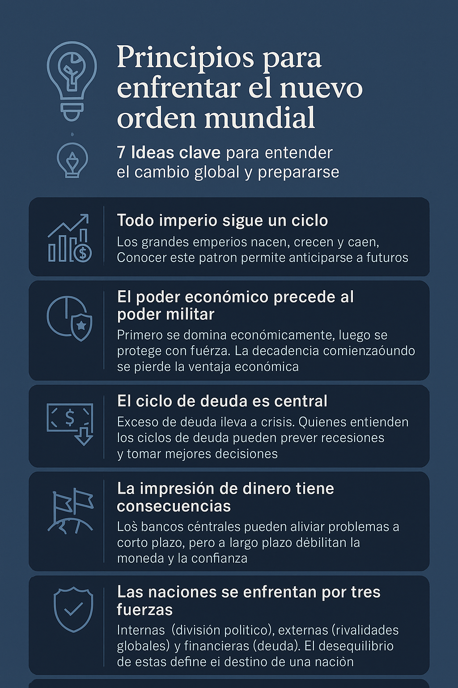
Orador 1: Bienvenidos a "Conecta y Lidera", soy Ana y me acompaña Carlos. En el episodio de hoy vamos a adentrarnos en uno de los libros más provocadores y comentados sobre el poder: "Las 48 leyes del poder" de Robert Greene. Un libro que ha generado admiración y controversia por igual, y que nos invita a reflexionar sobre las dinámicas de influencia, manipulación y estrategia en diversos contextos, desde la historia hasta el mundo corporativo moderno.
Orador 2: Así es, Ana. Greene no escribe un manual de ética, sino un tratado de estrategia basado en la historia, recogiendo ejemplos de personajes como Maquiavelo, Napoleón o Catalina la Grande. Nos propone observar el poder como una realidad inevitable y nos plantea que entender sus reglas puede ayudarnos a protegernos, actuar con mayor inteligencia y lograr nuestros objetivos. Hoy vamos a comentar algunas de las leyes más impactantes del libro y debatir cómo pueden entenderse en el contexto del liderazgo actual.
Orador 1: Comencemos con la Ley Número 1: "Nunca le hagas sombra a tu amo". Esta ley nos recuerda que en entornos de poder, destacar más que quien está por encima de ti puede ser peligroso. En vez de brillar más, hay que hacer que el otro se sienta superior. Greene lo ilustra con ejemplos históricos de cortes reales y contextos militares donde el exceso de brillo personal terminó en la ruina de muchos. Suena fríamente estratégico, ¿no crees?
Orador 2: Totalmente. Pero también tiene una lectura moderna. En el liderazgo actual, muchas veces se valora que el líder impulse a su equipo y que cada miembro brille. Sin embargo, en entornos políticos o jerárquicos, este consejo sigue teniendo peso. Saber navegar el ego de los demás es una habilidad clave para evitar conflictos innecesarios y conservar posiciones de influencia.
Orador 1: Sigamos con la Ley 3: "Oculta tus intenciones". Greene sugiere que ser demasiado transparente puede hacerte vulnerable. En cambio, si tus planes no son evidentes, puedes maniobrar con más libertad, anticiparte a la oposición y protegerte de quienes puedan frustrar tus objetivos.
Orador 2: Es una ley que puede chocar con los principios del liderazgo basado en la confianza y la transparencia. Pero si lo analizamos desde la perspectiva de la estrategia, tiene sentido. No se trata de mentir, sino de reservar información crítica hasta que sea el momento adecuado. Eso puede dar ventaja en negociaciones, movimientos organizacionales o decisiones clave que requieran un margen de acción sin interferencias.
Orador 1: La Ley 6 también es muy poderosa: "Llama la atención a toda costa". Greene afirma que la visibilidad es clave para el poder. Si te vuelves invisible, pierdes influencia y relevancia. En un mundo saturado de información y competencia, quien no se ve, no existe.
Orador 2: Exacto. Hoy en día, con las redes sociales, la marca personal y el entorno digital, esta ley es más vigente que nunca. Los líderes que saben manejar su imagen y presencia tienen una ventaja competitiva. No se trata de buscar fama vacía, sino de construir una identidad visible, coherente y estratégica que inspire confianza y posicionamiento.
Orador 1: Otra ley que no podíamos dejar fuera es la Ley 15: "Aniquila por completo a tu enemigo". Esta es una de las más controversiales del libro. Greene plantea que si dejas vivo al enemigo, puede recuperarse, fortalecerse y volver a atacarte en el futuro.
Orador 2: Es una ley brutal y, sin duda, la más incompatible con una visión de liderazgo colaborativo o de desarrollo humano. Pero también es una advertencia sobre los peligros de dejar cabos sueltos. A veces, cerrar ciclos con firmeza, eliminar amenazas o tomar decisiones drásticas es necesario para proteger una organización, un proyecto o incluso una visión.
Orador 1: Me parece valioso equilibrar esas leyes duras con otras que apelan a una dimensión más emocional. Como la Ley 43: "Trabaja sobre el corazón y la mente de los demás". Porque no todo es frialdad y estrategia. Influir también implica conectar emocionalmente con las personas.
Orador 2: Muy cierto. El poder que perdura no es solo el que se impone, sino el que logra influir en las decisiones, en las emociones y en las creencias de quienes nos rodean. Cuando un líder logra inspirar, crear sentido y construir relaciones significativas, su influencia se multiplica y se consolida de manera más duradera.
Orador 1: Antes de despedirnos, quiero mencionar una ley que complementa muy bien lo que hemos dicho: la Ley 34: "Actúa como un rey para ser tratado como tal". Greene explica que la actitud que proyectamos influye directamente en cómo los demás nos perciben. Si actuamos con dignidad, seguridad y autoridad, es más probable que se nos respete y valore.
Orador 2: Esa ley es fundamental para el liderazgo. Muchas veces, el respeto no se impone por jerarquía, sino que se inspira por la forma en que uno se presenta, se comunica y toma decisiones. La confianza en uno mismo es contagiosa, y los buenos líderes saben que su presencia es parte de su herramienta de influencia.
Orador 1: Y así concluimos este episodio de "Conecta y Lidera". Esperamos que esta reflexión sobre algunas de las leyes del poder les haya dado nuevas herramientas para pensar su propio estilo de liderazgo y comprender las complejidades que rodean la influencia y la estrategia en nuestras vidas personales y profesionales.
Orador 2: Gracias por acompañarnos. Nos escuchamos en el próximo episodio con más análisis, más libros y más estrategias para liderar con inteligencia, conciencia y conexión humana.
🧠 Leyes Seleccionadas
1️⃣ Ley 1 – Nunca eclipses al maestro
Haz que quienes están por encima de ti se sientan superiores. Es peligroso parecer más brillante.
2️⃣ Ley 3 – Oculta tus intenciones
Si los demás no saben tus verdaderos planes, no podrán interferir.
3️⃣ Ley 6 – Llama la atención a toda costa
Lo que no se ve, no se recuerda. La visibilidad es poder.
4️⃣ Ley 15 – Aniquila por completo a tu enemigo
Una amenaza a medias sigue siendo una amenaza. Si actúas, no dejes cabos sueltos.
5️⃣ Ley 33 – Descubre el talón de Aquiles
Aprende las debilidades de los demás. Quien controla las emociones, controla el poder.
6️⃣ Ley 40 – Desprecia lo gratuito
Lo que tiene precio tiene valor. Aprecia lo que cuesta y evita los favores con ataduras.
7️⃣ Ley 48 – Sé cambiante y escurridizo
La rigidez es muerte. Adáptate y fluye para sobrevivir y dominar.
**Orador 1 (Ana):**
Bienvenidos a *Conecta y Lidera*. Soy Ana y me acompaña Carlos. Hoy tenemos un episodio muy especial en el que vamos a profundizar en uno de los libros más influyentes en el ámbito del liderazgo, la psicología social y la comunicación efectiva: *"Influence: The Psychology of Persuasion"* de Robert Cialdini. Este libro no solo ha transformado la forma en que entendemos la persuasión, sino que también ha inspirado a líderes, empresarios y profesionales de todo el mundo a influir de forma positiva y ética.
**Orador 2 (Carlos):**
Así es, Ana. Este clásico nos presenta seis principios psicológicos fundamentales que explican por qué las personas toman ciertas decisiones y cómo responden a distintos estímulos de influencia. Vamos a analizar cada uno de estos principios no solo desde la teoría, sino también con ejemplos prácticos que cualquier líder puede aplicar desde hoy.
**Orador 1 (Ana):**
Empecemos con el primer principio: **Reciprocidad**. Este principio se basa en una norma social universal: cuando alguien nos ofrece algo, sentimos la necesidad de devolver el favor. Es una herramienta poderosa porque apela a nuestra necesidad de equilibrio. En el liderazgo, dar primero puede abrir puertas y fortalecer relaciones. Esto puede ir desde ofrecer apoyo, brindar información últil o incluso hacer un reconocimiento sincero.
**Orador 2 (Carlos):**
Y es muy interesante, porque no se trata de grandes gestos. A veces, un detalle pequeño puede desencadenar una respuesta significativa. En los negocios, un recurso gratuito, una guía, una muestra, pueden generar una conexión poderosa. Claro está, todo debe hacerse con autenticidad. La reciprocidad funciona porque crea una sensación de relación justa.
**Orador 1 (Ana):**
El segundo principio es **Compromiso y coherencia**. Las personas tienden a actuar de manera coherente con los compromisos que han hecho previamente, especialmente si estos han sido públicos o voluntarios. Es un mecanismo de validación interna. Si alguien ha declarado algo, hará lo posible por actuar en consecuencia.
**Orador 2 (Carlos):**
Este principio se puede usar de forma muy positiva. En la gestión de equipos, por ejemplo, si un colaborador se compromete a liderar una iniciativa, lo hará con mayor convicción si ese compromiso fue expresado frente a sus compañeros. Y como líderes, invitar a las personas a definir sus propios objetivos, en vez de imponerlos, aumenta el compromiso y el cumplimiento.
**Orador 1 (Ana):**
El tercer principio es **Prueba social**. Las personas observan lo que otros hacen para decidir su propio comportamiento, especialmente en situaciones de incertidumbre. Si ves que muchas personas valoran un producto, una idea o una práctica, es más probable que también lo adoptes.
**Orador 2 (Carlos):**
Y esto tiene implicaciones enormes en el liderazgo. Si promueves historias de éxito dentro de tu equipo, si compartes testimonios de miembros que están teniendo buenos resultados con ciertas herramientas o metodologías, estás creando un efecto de arrastre positivo. Las personas tienden a seguir lo que parece aprobado por la mayoría.
**Orador 1 (Ana):**
El cuarto principio es **Agradabilidad**. Nos dejamos influir más fácilmente por personas que nos caen bien. Esto no significa que debamos forzar una personalidad, sino que seamos genuinos, empáticos y accesibles. Mostrar interés por los demás, encontrar afinidades y tener una actitud positiva genera apertura.
**Orador 2 (Carlos):**
Exacto. Los líderes agradables no son los que complacen a todos, sino aquellos que inspiran confianza y cercanía. Saber escuchar, recordar detalles importantes sobre los miembros del equipo, tener sentido del humor... Todo eso contribuye a generar un entorno donde las personas están más dispuestas a colaborar.
**Orador 1 (Ana):**
El quinto principio es **Autoridad**. Las personas tienden a seguir a quienes consideran expertos o figuras de autoridad. Pero esta autoridad no debe ser autoritaria, sino basada en conocimiento, experiencia y coherencia. Un título no basta, lo que influye es la percepción de competencia.
**Orador 2 (Carlos):**
Y esa autoridad se construye día a día. Un líder que demuestra saber de lo que habla, que actúa con integridad y que se mantiene actualizado, genera respeto natural. La influencia basada en autoridad es poderosa cuando está alineada con la humildad y el aprendizaje continuo.
**Orador 1 (Ana):**
Y llegamos al sexto principio: **Escasez**. Este principio nos dice que las personas valoramos más lo que es raro o limitado. Desde una oferta por tiempo limitado hasta la exclusividad de una oportunidad, el sentido de urgencia puede motivar la acción. Pero hay que tener cuidado con no exagerar ni crear falsas escaseces.
**Orador 2 (Carlos):**
Correcto. Cuando se comunica con honestidad, la escasez puede ayudarnos a enfocar la atención y priorizar. Por ejemplo, en la gestión de proyectos, mostrar que ciertos recursos o ventanas de tiempo son limitadas puede agilizar la toma de decisiones. Pero si abusamos de esta técnica, pierde su efecto y daña la confianza.
**Orador 1 (Ana):**
En conjunto, estos seis principios forman una guía poderosa para cualquier persona que quiera ejercer influencia con conciencia y responsabilidad. Y como bien enfatiza Cialdini, el uso ético de estas herramientas es lo que marca la diferencia entre un manipulador y un verdadero líder.
**Orador 2 (Carlos):**
Porque influir no es imponer, es inspirar. Es ayudar a otros a tomar decisiones que también les beneficien. Gracias por acompañarnos en este análisis profundo de *Influence* de Cialdini. Esperamos que estas ideas te sirvan para liderar con mayor claridad e impacto.
**Orador 1 (Ana):**
Nos escuchamos en el próximo episodio de *Conecta y Lidera*, donde seguiremos explorando libros, ideas y herramientas para crecer como líderes y como personas. Hasta la próxima.
**Orador 2 (Carlos):**
Hasta pronto, y recuerda: liderar es influir, y hacerlo con propósito es el verdadero camino.
🧠 Principios de Cialdini
1️⃣ Reciprocidad
Las personas tienden a devolver favores. Si das algo primero, será más fácil recibir algo a cambio.
2️⃣ Compromiso y coherencia
La gente busca ser coherente con sus acciones pasadas. Una vez que se comprometen, es más probable que sigan adelante.
3️⃣ Prueba social
Tendemos a seguir el comportamiento de otros, especialmente en situaciones de incertidumbre. Mostrar evidencia social aumenta la credibilidad.
4️⃣ Agradabilidad
Decimos "sí" más fácilmente a quienes nos caen bien. La simpatía, afinidad y conexión personal marcan la diferencia.
5️⃣ Autoridad
Somos más propensos a seguir a personas que percibimos como expertas o figuras de autoridad.
6️⃣ Escasez
Lo raro o limitado se percibe como más valioso. La urgencia o exclusividad impulsan decisiones rápidas.
7️⃣ Unidad (principio adicional en ediciones recientes)
Las personas se dejan influenciar más por quienes sienten que son parte de su grupo o identidad.
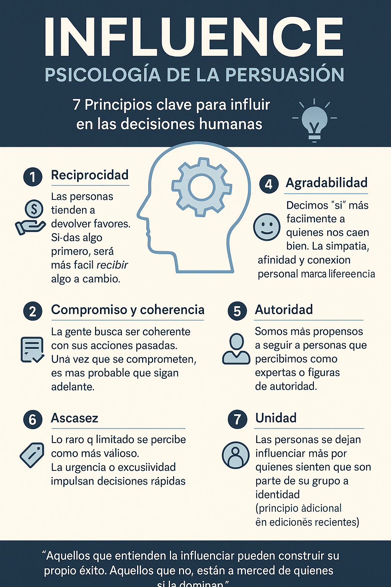
orador 1: Bienvenidos a Conecta y Lidera. Soy Ana y me acompaña Carlos. Hoy vamos a explorar uno de los libros más poderosos, directos y aplicables sobre generación de prospectos y crecimiento empresarial: *\$100M Leads* de Alex Hormozi. Un texto que está revolucionando la forma en que los emprendedores, marketers y líderes de ventas entienden el proceso de atracción de clientes potenciales.
orador 2: Hola a todos, gracias por estar aquí con nosotros una vez más. Este libro es una guía práctica, sin adornos, y brutalmente honesta sobre cómo construir un sistema que te permita generar miles de leads cualificados. Hormozi no se guarda nada: comparte estrategias que él mismo ha usado para construir negocios que generan más de 200 millones de dólares al año. Su estilo es directo, casi como si te estuviera hablando cara a cara.
orador 1: Hormozi parte de una premisa sencilla pero contundente: tu verdadero problema no es vender, es no tener suficientes personas interesadas en comprar. Y por eso, necesitas crear un sistema masivo, predecible y escalable de generación de leads. En sus palabras, si nadie te conoce, nadie te compra. Y este libro trata exactamente sobre cómo lograr que miles te conozcan y te escuchen.
orador 2: Para construir ese sistema, nos presenta lo que él llama los "Core Four": contenido orgánico, publicidad paga, outreach directo y colaboraciones estratégicas. Son cuatro pilares que puedes combinar según tus recursos, tu tipo de negocio y tu mercado objetivo. Pero lo más importante es tener claridad, constancia y mucha acción.
orador 1: Una de las partes que más me gustó fue su enfoque "More, Better, New". Primero, haz más de lo que ya te está funcionando. Segundo, mejora cada aspecto de tu proceso. Y tercero, atrévete a probar cosas nuevas. Este marco de acción, aunque suena simple, requiere valentía y mucha disciplina para ejecutarlo bien.
orador 2: Exacto. Y otra idea poderosa es que no necesitas cambiar tu producto o servicio para tener mejores resultados. Lo que debes hacer es mejorar la forma en que presentas esa oferta, cómo la comunicas y a quién se la muestras. Por eso Hormozi insiste tanto en trabajar el mensaje, clarificar el valor y ajustar el canal de comunicación.
orador 1: Y aquí hay algo clave que muchas veces se pasa por alto. Hormozi advierte que muchos negocios atraen personas que jamás les van a comprar. Esto pasa cuando usas lead magnets o contenidos gratuitos que no están alineados con lo que vendes. El resultado: una lista llena de curiosos, pero vacía de compradores reales.
orador 2: Absolutamente. Y me impactó cuando menciona que sus empresas generan más de 20 mil leads por día. Eso no se logra por inspiración o intuición. Es el resultado de tener un sistema replicable, medible y ajustable. Eso es precisamente lo que nos comparte en este libro.
orador 1: Y ese sistema no se queda en la teoría. Al final del libro, Hormozi ofrece una hoja de ruta clara, detallada, paso a paso, para que puedas implementar lo aprendido desde el primer día. Incluye ejemplos, scripts, recomendaciones de herramientas y sobre todo, una mentalidad de acción inmediata.
orador 2: Para quienes nos están escuchando y lideran equipos de marketing o ventas, o incluso si estás emprendiendo solo, este libro es una inversión de tiempo invaluable. *\$100M Leads* no solo te da técnicas, te da claridad sobre dónde enfocar tu energía y recursos para ver resultados tangibles.
orador 1: Así es, Carlos. Y no se trata solo de generar números grandes, sino de generar oportunidades reales de conversión. Leads que estén preparados para decir sí. Ese es el corazón de esta filosofía.
orador 2: Y como siempre decimos en este espacio, un buen líder no solo dirige, también sabe atraer, comunicar y generar confianza. Este libro te da herramientas para hacerlo desde la estrategia.
orador 1: Gracias por acompañarnos en este episodio extendido de Conecta y Lidera. Esperamos que estas ideas te motiven a leer el libro y sobre todo, a poner en práctica lo aprendido. Cada lead cuenta. Cada mensaje importa.
orador 2: Nos escuchamos en el próximo episodio, donde seguiremos descubriendo libros que transforman tu manera de pensar, liderar y crecer. Hasta la próxima y recuerda: conectar bien es el primer paso para liderar mejor.
📈 Lecciones Clave
1️⃣ Los leads son el oxígeno del negocio
Sin flujo constante de prospectos, no hay ventas, ni crecimiento. Es la prioridad #1.
2️⃣ El tráfico no es suficiente
No se trata solo de atraer miradas. Necesitas convertir visitas en oportunidades reales.
3️⃣ Ofrece valor masivo por adelantado
Regala contenido que otros cobrarían. Esto genera reciprocidad y confianza inmediata.
4️⃣ Gana la atención con claridad
Los mensajes simples y directos superan a los sofisticados. Lo que no se entiende, no se compra.
5️⃣ Testea todo: titulares, ofertas, canales
No adivines qué funciona. Usa datos reales y experimentación constante.
6️⃣ Invierte agresivamente en adquisición
Los mejores negocios están dispuestos a pagar más por conseguir un cliente. Escala tu inversión cuando tengas un sistema probado.
7️⃣ Conviértete en una máquina de leads
Crea procesos repetibles, escalables y predecibles. El sistema gana, no la suerte.
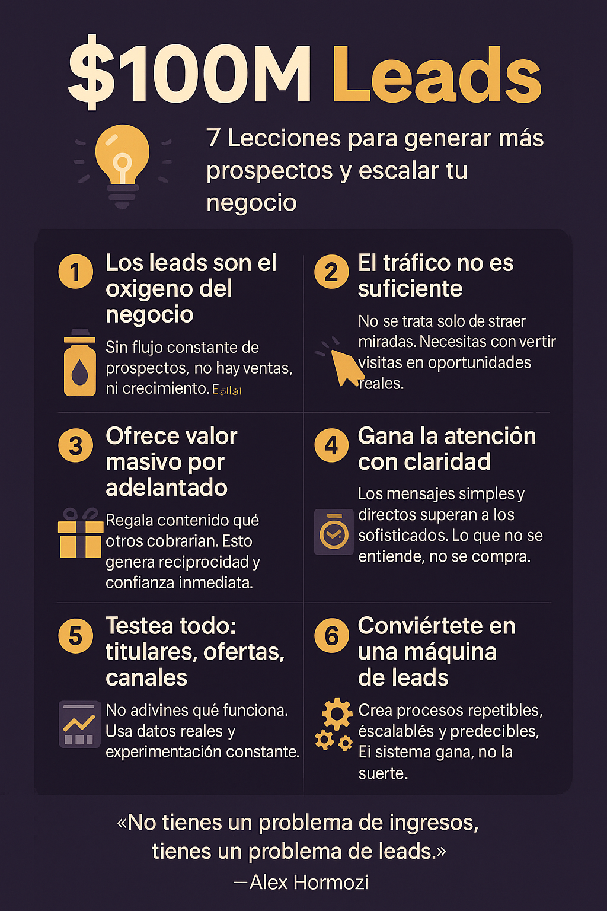
orador 1: Bienvenidos a "Conecta y Lidera", el podcast donde exploramos las mejores ideas en liderazgo, desarrollo personal y negocios. Soy Ana, y como siempre, me acompaña Carlos para desglosar herramientas y estrategias que realmente transforman la forma en que lideramos y emprendemos.
orador 2: Hola a todos, es un gusto estar aquí una vez más. Hoy les traemos un libro práctico, directo y tremendamente útil, especialmente para quienes buscan claridad y efectividad en sus esfuerzos de marketing: "El Plan de Marketing de 1 Página" de Allan Dib. Un enfoque que ha revolucionado la forma en que muchos emprendedores y profesionales abordan sus estrategias.
orador 1: Este libro parte de una premisa poderosa: el marketing no tiene que ser complicado. De hecho, Dib nos invita a abandonar los planes extensos y a enfocarnos en lo esencial. Con solo una página, podemos construir un plan de marketing completo, bien estructurado y accionable, que sirva como guía clara para cualquier negocio.
orador 2: Lo que hace este enfoque tan valioso es que se centra en la simplicidad sin sacrificar profundidad. Allan Dib divide esa única página en 9 bloques estratégicos, agrupados en tres fases clave: Antes, Durante y Después. Vamos a explorar qué incluye cada una de estas etapas y cómo aplicarlas de manera efectiva.
orador 1: Comenzamos con la etapa "Antes", que tiene como objetivo atraer la atención de nuestros potenciales clientes. En este punto, se trata de identificar con claridad el mercado objetivo, crear un mensaje potente que conecte con ese público, y elegir los canales adecuados para hacerlo llegar. Es decir, ¿a quién le hablas?, ¿qué le dices?, ¿y cómo lo haces llegar a esa persona?
orador 2: Dib insiste en que no puedes ser genérico. El marketing no es para todo el mundo, y cuanto más específico seas en tu enfoque, mejores serán tus resultados. Debes conocer profundamente a tu cliente ideal, entender sus dolores, sus deseos, y diseñar un mensaje que le hable directamente. Ese nivel de enfoque cambia radicalmente la eficacia de cualquier estrategia.
orador 1: Luego entramos en la etapa "Durante", donde el objetivo ya no es captar atención, sino convertir ese interés en acción. Aquí hablamos de capturar los datos de los prospectos, nutrir la relación a través de un embudo de ventas bien definido, y finalmente, lograr la conversión: transformar ese contacto en un cliente real.
orador 2: Lo interesante aquí es cómo Dib plantea que este proceso debe ser sistemático. Nada de improvisar o confiar en la suerte. Se trata de construir una máquina que funcione constantemente, con automatizaciones, contenido de valor y pasos claros que guíen al prospecto hasta tomar una decisión de compra. Eso es escalar con inteligencia.
orador 1: Finalmente, la tercera etapa: "Después". Aquí el enfoque cambia completamente. Ya no se trata de atraer o vender, sino de fidelizar. ¿Cómo haces que ese cliente vuelva a comprar? ¿Cómo lo conviertes en un promotor de tu marca? Allan Dib nos habla de la importancia de ofrecer una experiencia extraordinaria, implementar programas de fidelización y crear sistemas para generar referidos.
orador 2: Esta parte muchas veces se olvida. Pero es cinco veces más fácil venderle a un cliente actual que a uno nuevo. Por eso, Dib insiste en que esta etapa no es opcional, es fundamental. Un buen negocio no solo cierra ventas, construye relaciones duraderas que traen más ventas y más clientes.
orador 1: En resumen, este libro nos recuerda algo esencial: no necesitas un plan de marketing de 50 páginas para tener claridad. Necesitas una herramienta visual, simple, que puedas revisar cada día y que te obligue a enfocarte en lo que realmente importa.
orador 2: Y esa es la verdadera fortaleza del plan de marketing en 1 página. Es accesible, es práctico, y sobre todo, es útil. Tanto si estás empezando un negocio, como si ya llevas tiempo en el mercado y necesitas reenfocar tu estrategia, este enfoque te puede ayudar a ganar claridad y tomar acción con propósito.
orador 1: Así es. Allan Dib nos entrega no solo un método, sino una mentalidad: simplifica, enfócate, ejecuta. Y esa filosofía puede marcar una gran diferencia en nuestros resultados.
orador 2: Esperamos que este episodio de "Conecta y Lidera" te haya resultado útil e inspirador. Quizás es el momento perfecto para rediseñar tu marketing en una sola página.
orador 1: Gracias por acompañarnos hoy. Si este episodio te gustó, compártelo con alguien que esté emprendiendo o liderando un proyecto. Nos escuchamos en el próximo episodio.
orador 2: Hasta la próxima, y recuerda: conecta, lidera y simplifica tu camino hacia el éxito.
📈 Lecciones Clave
1️⃣ Conoce a tu cliente ideal
Todo comienza con entender a quién quieres servir. Sin claridad en esto, todo lo demás falla.
2️⃣ Crea un mensaje irresistible
Habla de problemas reales y ofrece soluciones claras. Conecta emocionalmente.
3️⃣ Construye una relación, no solo una venta
Educa, aporta valor y genera confianza antes de vender. El marketing es seducción, no presión.
4️⃣ Ten un canal confiable de generación de leads
Ya sea redes sociales, publicidad o email, necesitas un sistema repetible que atraiga prospectos.
5️⃣ Automatiza tu seguimiento
Utiliza herramientas para nutrir a tus contactos con contenido útil hasta que estén listos para comprar.
6️⃣ Ofrece algo de entrada
Facilita el primer paso con una oferta simple, de bajo riesgo, que abra la puerta a más ventas.
7️⃣ Mide y ajusta constantemente
Un plan no sirve sin ejecución. Revisa resultados y mejora cada parte del embudo.
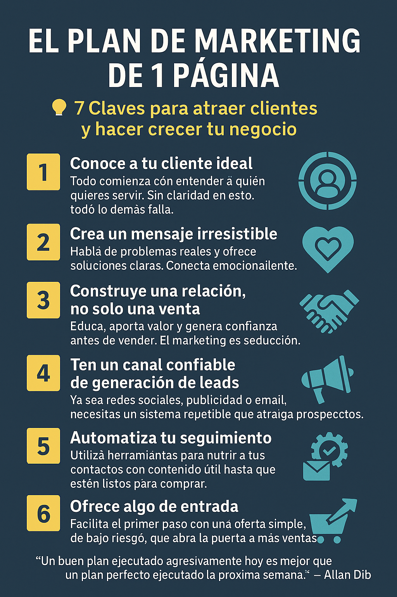
orador 1: Bienvenidos a Conecta y Lidera. Soy Ana y me acompaña Carlos. Hoy vamos a sumergirnos en un libro que sacude las creencias tradicionales sobre la riqueza: "La vía rápida del millonario" de MJ DeMarco. Este no es un libro más sobre finanzas personales, es una declaración de guerra contra las ideas que nos han vendido sobre el dinero y el éxito. Prepárense para desafiar paradigmas, desmontar mitos y descubrir por qué muchos nunca alcanzan la libertad financiera.
orador 2: Hola a todos, soy Carlos. Este libro es una verdadera sacudida mental. DeMarco nos plantea una idea poderosa: si sigues el camino tradicional de trabajar duro, ahorrar un poco y jubilarte a los 65, probablemente nunca serás verdaderamente libre. Él llama a eso "la vía lenta". En cambio, propone una vía rápida basada en la creación de riqueza a través de la generación de valor masivo, el apalancamiento y la escalabilidad. La clave está en dejar de ser un consumidor pasivo y convertirte en un productor de soluciones que impacten a muchas personas.
orador 1: Exacto. Y uno de los puntos más interesantes es cómo critica el consejo tradicional de "ve a la universidad, consigue un buen empleo y ahorra". DeMarco no dice que sea una fórmula malvada, pero sí la considera ineficiente para quienes sueñan con independencia financiera real. Él habla de que la libertad está en controlar tu tiempo, y eso solo lo logras cuando dejas de intercambiar horas por dinero. Es decir, cuando creas sistemas que funcionan independientemente de tu presencia física constante.
orador 2: Y aquí entra uno de sus conceptos clave: el "empresario productor de valor". No se trata solo de tener un negocio tradicional. Hablamos de diseñar mecanismos que funcionen en piloto automático, como aplicaciones, plataformas, productos digitales o servicios que puedas escalar. Es decir, pasar de ser un ejecutor que trabaja por horas a ser un creador de sistemas escalables que solucionan problemas reales para mucha gente.
orador 1: Me encanta cuando habla de los "comandantes de la riqueza", que son aquellos que entienden las leyes fundamentales del control, la entrada, la necesidad y la escala. Por ejemplo, tener el control de tu modelo de negocio significa que no dependes de otros para generar ingresos. No estás a merced de jefes, clientes particulares o plataformas externas como redes sociales que pueden cambiar sus reglas de un día para otro. La entrada se refiere a que debes crear algo que no sea fácilmente replicable, que tenga barreras de entrada.
orador 2: Y también insiste mucho en la necesidad de tomar riesgos calculados. Nada grande se logra desde la comodidad o desde el miedo al fracaso. El autor cuenta cómo pasó de ser un conductor de limusinas, sin una gran red de contactos ni inversión inicial, a millonario porque se atrevió a construir un negocio online. Ese negocio estaba basado en necesidades reales, podía escalarse, automatizarse y sobre todo, podía crecer sin su intervención directa constante. Eso es pensar como productor.
orador 1: Otro mensaje potente es que la riqueza no es solo dinero, sino también tiempo y libertad. Muchas personas tienen ingresos altos pero no tienen vida. Están atrapadas en una jaula dorada, con autos caros y casas grandes, pero sin tiempo para disfrutar con su familia, viajar o simplemente descansar. DeMarco nos invita a repensar eso: ¿qué sentido tiene el dinero si no puedes usarlo para vivir como realmente deseas? La verdadera riqueza está en tener la capacidad de decidir qué hacer con tu tiempo.
orador 2: Y como siempre, nos deja con un llamado a la acción. La vía rápida no es fácil, ni inmediata. Requiere aprendizaje, valentía, esfuerzo y una mentalidad completamente diferente. Pero está disponible para quienes estén dispuestos a pensar diferente, a tomar el control de su destino económico y a construir algo que realmente transforme vidas, empezando por la suya propia.
orador 1: Ha sido una conversación poderosa, llena de ideas provocadoras y herramientas para reflexionar. Si este episodio te hizo cuestionarte algunas cosas, si te inspiró a salir del piloto automático, entonces cumplimos el objetivo. El cambio empieza con una idea, pero se consolida con acción.
orador 2: Gracias por acompañarnos una vez más en Conecta y Lidera. Nos escuchamos en el próximo episodio, donde seguiremos descubriendo ideas para liderar con propósito, transformar tu mundo y vivir con intención.
📚 Lecciones Clave
1️⃣ La riqueza se construye, no se espera
No dependas de un empleo de 40 años o del ahorro lento. Actúa con intención y velocidad.
2️⃣ Tiempo ≠ dinero
Intercambiar tu tiempo por dinero tiene un techo. Crea sistemas que generen ingresos sin tu presencia constante.
3️⃣ Sé productor, no solo consumidor
Los ricos crean valor. Si solo consumes, estás enriqueciendo a otros.
4️⃣ La velocidad importa
Acelera tus resultados con acción masiva, control y escala. El tiempo es un recurso limitado.
5️⃣ Crea activos que trabajen por ti
Negocios, marcas o sistemas escalables te acercan al ingreso pasivo.
6️⃣ Controla el proceso
No delegues tu destino a terceros. Cuanto más control tengas, mayor será tu apalancamiento.
7️⃣ La libertad es el verdadero lujo
No es solo dinero, es poder vivir según tus propias reglas.
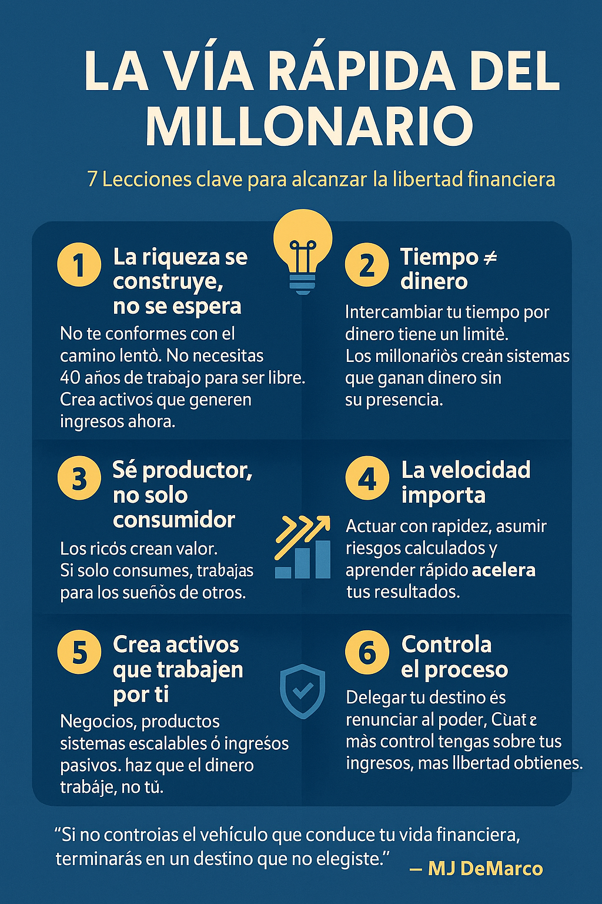
orador 1: Bienvenidos a un nuevo episodio de "Conecta y Lidera", soy Ana y me acompaña como siempre, Carlos. Hoy vamos a explorar un libro fundamental para entender no solo nuestras finanzas, sino también nuestras decisiones, creencias y comportamientos más profundos: "La psicología del dinero" de Morgan Housel. Un libro que ha impactado a miles de personas por su enfoque humano y realista sobre el dinero.
orador 2: Hola a todos, encantado de estar aquí una vez más. Este libro es una joya porque no se enfoca en técnicas financieras complejas, ni en datos duros o teorías económicas, sino en algo mucho más profundo: el comportamiento humano frente al dinero. Housel nos muestra que la inteligencia financiera no siempre está relacionada con lo académico o lo racional, sino con la conducta diaria, con nuestros hábitos y decisiones cotidianas.
orador 1: Exactamente. Una de las ideas clave del libro es que ganar dinero, gastarlo, invertirlo y ahorrar están profundamente influenciados por nuestras experiencias personales, por el entorno donde crecimos, nuestras creencias, emociones y hasta por el miedo o la esperanza que tengamos sobre el futuro. Por eso, dos personas con la misma información pueden actuar de formas completamente distintas ante una misma situación financiera.
orador 2: Housel menciona que las decisiones financieras no siempre se basan en datos, sino en historias que nos contamos a nosotros mismos. Y eso tiene mucho sentido. Por ejemplo, alguien que creció en una época de crisis económica puede tener una relación con el dinero marcada por la precaución, el miedo a perderlo todo, mientras que alguien que vivió en un periodo de bonanza puede ser más arriesgado o incluso despreocupado con sus finanzas.
orador 1: Y lo interesante es que eso no es ni bueno ni malo. Simplemente es humano. El libro nos invita a reflexionar sobre nuestras motivaciones, nuestras inseguridades y lo que realmente valoramos cuando se trata de dinero. Entender cómo pensamos sobre el dinero es tan importante como saber cómo ganarlo. Nos ayuda a tomar decisiones más alineadas con nuestros valores y objetivos personales.
orador 2: Otro punto poderoso es el concepto de "suficiente". Muchas personas no saben cuánto es suficiente para ellas. Siempre quieren más, y eso puede llevar a decisiones arriesgadas, a envidiar al vecino, o a caer en una carrera sin fin por estatus o validación social. Housel dice que entender qué es suficiente para ti es una de las claves más poderosas para tomar decisiones financieras saludables y sostenibles.
orador 1: Y eso se conecta directamente con la humildad y la paciencia. Dos virtudes que, según el autor, son esenciales para manejar bien el dinero. No se trata de ganarlo rápido, ni de mostrarlo, sino de mantenerlo en el tiempo. La riqueza silenciosa, la que no busca impresionar a nadie, es muchas veces la más sostenible y la más libre. Porque no depende del reconocimiento externo, sino de la tranquilidad interna.
orador 2: Así es. Housel también habla del poder del tiempo. El interés compuesto no solo se aplica a las finanzas, sino también al conocimiento, a la confianza, a las relaciones personales y profesionales. Las cosas verdaderamente valiosas se construyen con el tiempo, con la constancia, con pequeños actos repetidos una y otra vez. Es una lección de paciencia que aplica a todos los aspectos de la vida.
orador 1: Otra reflexión importante del libro es que nadie está completamente cuerdo cuando se trata de dinero. Todos tenemos sesgos, puntos ciegos, traumas financieros. El primer paso para mejorar nuestra relación con el dinero es reconocerlo. Desde allí, podemos empezar a tomar decisiones más conscientes y menos impulsivas.
orador 2: Y eso nos lleva a la idea de que el dinero es una herramienta, no un fin. Puede ayudarnos a tener libertad, seguridad, opciones. Pero no debe ser el centro de nuestra identidad ni de nuestra felicidad. Housel invita a reflexionar sobre qué significa realmente ser rico. ¿Es tener mucho dinero? ¿O es tener la capacidad de vivir según tus propios términos?
orador 1: En resumen, "La psicología del dinero" nos recuerda que nuestras emociones y decisiones tienen un peso enorme en nuestra vida financiera. Y que el verdadero liderazgo comienza por entendernos a nosotros mismos, por liderar nuestras emociones, nuestros deseos y nuestra historia personal en torno al dinero.
orador 2: Un libro imprescindible para cualquier persona que quiera mejorar su relación con el dinero desde un enfoque humano, profundo y realista. Gracias por acompañarnos en este episodio de "Conecta y Lidera". Esperamos que les haya dejado reflexiones valiosas.
orador 1: Hasta la próxima, y recuerden: liderar también es aprender a tomar decisiones conscientes, humildes y sostenibles. Nos escuchamos en el siguiente episodio.
🧠 Lecciones Clave (texto breve y claro por sección)
1️⃣ Nadie está loco
Cada persona ve el dinero desde su historia personal. No juzgues decisiones sin entender su contexto.
2️⃣ Suerte y riesgo van juntos
El éxito y el fracaso no siempre reflejan habilidades. Reconoce el papel de la suerte (y del riesgo).
3️⃣ Nunca tener suficiente
Perseguir más sin pausa lleva al agotamiento. Aprende a valorar lo que ya tienes.
4️⃣ El interés compuesto es mágico
No se trata de hacerte rico rápido, sino de ser constante y paciente.
5️⃣ Ganar dinero ≠ conservarlo
La clave está en evitar errores que te hagan retroceder. Protege lo que lograste.
6️⃣ Lo extremo cambia todo
Unos pocos eventos explican la mayoría del crecimiento. No subestimes el poder de lo improbable.
7️⃣ La verdadera riqueza es libertad
Tener control sobre tu tiempo y decisiones vale más que cualquier lujo.
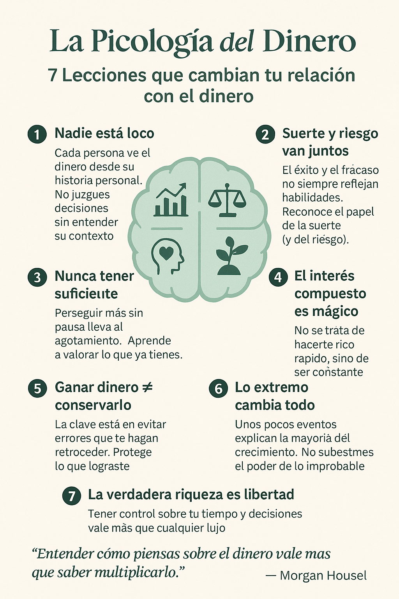
orador 1: Bienvenidos a un nuevo episodio de Conecta y Lidera. Soy Ana y me acompaña Carlos. Hoy vamos a hablar de un libro fundamental para emprendedores y líderes que buscan innovar con eficiencia, adaptarse al cambio constante y tomar decisiones basadas en datos reales: El método Lean Startup de Eric Ries. Un enfoque que ha revolucionado la manera en que concebimos los negocios desde su etapa inicial.
orador 2: Hola a todos, soy Carlos. Este libro ha sido una auténtica revolución en la forma en que pensamos en crear empresas. Eric Ries nos propone una metodología clara y replicable para construir productos y negocios en condiciones de incertidumbre extrema, y hacerlo de manera rápida, flexible y con el menor desperdicio posible. Es una guía práctica para navegar en contextos cambiantes y complejos, especialmente relevante en la era digital.
orador 1: Exactamente. El concepto central es el "aprendizaje validado". Ries plantea que las startups no existen para ejecutar planes predefinidos, sino para aprender rápidamente lo que funciona y lo que no. Un ejemplo concreto es el caso de IMVU, la empresa del propio Eric Ries, donde lanzaron un producto incompleto para observar cómo reaccionaban los usuarios, y descubrieron que muchas de sus suposiciones iniciales eran incorrectas. Este aprendizaje temprano evitó grandes inversiones equivocadas.
orador 2: Y ahí entra en juego el ciclo construir-medir-aprender. Es el corazón de El método Lean Startup. Primero, construyes una versión mínima del producto, conocida como MVP o Producto Mínimo Viable. Luego la pruebas con usuarios reales para recoger datos y observaciones. Finalmente, analizas esa información para aprender y decidir si debes seguir por el mismo camino o hacer un cambio de dirección, lo que Ries llama "pivotar". Dropbox, por ejemplo, usó un simple video como MVP para validar la necesidad del producto antes de desarrollar la tecnología completa.
orador 1: Me gusta mucho esa idea del MVP porque permite validar hipótesis sin invertir una cantidad enorme de recursos desde el principio. Es una forma de lanzar algo al mercado sin esperar a que esté perfecto. Porque la perfección, en contextos de alta incertidumbre, puede ser enemiga del progreso. Lo importante es aprender cuanto antes y ajustar rápidamente. Zappos también comenzó así: antes de tener un sistema logístico, su fundador compraba los zapatos en tiendas locales y los enviaba manualmente para validar si la gente compraría calzado en línea.
orador 2: Totalmente de acuerdo. Ries también insiste en la necesidad de medir lo correcto. No se trata de caer en métricas de vanidad, como contar descargas o visitas sin contexto. Hay que enfocarse en métricas accionables, que realmente nos indiquen si estamos avanzando hacia un modelo de negocio sostenible. Ries habla del ejemplo de una startup que medía la cantidad de clics en su app, pero no se preguntaba si esos clics llevaban a conversiones o fidelización.
orador 1: Y ahí aparece otro concepto poderoso: la contabilidad de la innovación. Es un sistema que nos permite medir el progreso cuando los indicadores tradicionales, como ingresos o beneficios, aún no existen. Porque en una startup en etapas tempranas, los números pueden ser bajos, pero eso no significa que no haya crecimiento o aprendizaje relevante. Un buen ejemplo es el uso de cohortes para analizar cómo se comportan los usuarios con el tiempo, lo que permite decisiones mucho más informadas.
orador 2: Me parece clave también la idea de que una startup no es solo una empresa joven, sino una institución humana que opera en condiciones de alta incertidumbre. Eso cambia toda la perspectiva. No es solo tecnología, no es solo un producto, es un experimento continuo con el objetivo de encontrar un modelo de negocio que funcione. Y eso aplica tanto a emprendedores como a intrapreneurs dentro de grandes organizaciones. De hecho, empresas como General Electric adoptaron el enfoque Lean Startup para crear nuevas unidades de negocio más ágiles.
orador 1: Y como todo experimento, puede fallar. Pero Ries nos invita a fallar rápido y barato. A construir una cultura de agilidad, donde el cambio no sea una amenaza, sino una oportunidad para aprender, evolucionar y mejorar. La clave está en acortar los ciclos de feedback, en fomentar la iteración constante y en tomar decisiones con base en evidencia. Esto es lo que hizo Intuit, una gran empresa que reformuló productos existentes con base en experimentos rápidos y escuchando al usuario.
orador 2: En resumen, El método Lean Startup nos proporciona un marco para innovar con disciplina y eficiencia. No se trata de improvisar ni de depender del instinto, sino de experimentar con inteligencia, de crear estructuras que nos permitan adaptarnos con rapidez. Es ideal no solo para emprendedores que están empezando, sino también para líderes que buscan mantener la innovación viva dentro de sus organizaciones.
orador 1: Un libro que transforma profundamente la forma en que pensamos el liderazgo, el desarrollo de productos, la cultura empresarial y el papel del fracaso en el camino al éxito. Si te interesa emprender, liderar con impacto o impulsar la transformación en tu entorno laboral, este libro es imprescindible.
orador 2: Gracias por acompañarnos en este episodio de Conecta y Lidera. Nos encantó explorar contigo los conceptos de El método Lean Startup. En el próximo episodio seguiremos profundizando en los grandes libros que transforman nuestro liderazgo, nuestras organizaciones y nuestra visión del mundo.
orador 1: Hasta pronto, y recuerda: conectar con otros y liderar con propósito es la clave del cambio. Sigue aprendiendo, sigue experimentando, y sobre todo, sigue liderando desde la curiosidad y el propósito.
🚀 Lecciones Clave
1️⃣ Lanza antes de estar listo
No esperes la perfección. Un producto mínimo viable (MVP) te permite aprender del mercado sin gastar de más.
2️⃣ Aprende de tus clientes
El feedback real es tu brújula. Cada interacción con el cliente te guía hacia un producto mejor.
3️⃣ Medir > suponer
No te bases en opiniones. Usa datos reales para tomar decisiones clave.
4️⃣ Itera constantemente
Mejora rápido y sin miedo a fallar. El ciclo construir-medir-aprender es tu motor de crecimiento.
5️⃣ La eficiencia es aprender
Ganar tiempo no es solo trabajar rápido, es aprender rápido lo que funciona (y lo que no).
6️⃣ Pivota cuando sea necesario
Si los datos lo indican, cambia de dirección. Pivotar no es fallar, es adaptarse.
7️⃣ El crecimiento sostenible es posible
No se trata de crecer por crecer, sino de construir un negocio que aprenda, evolucione y escale con sentido.
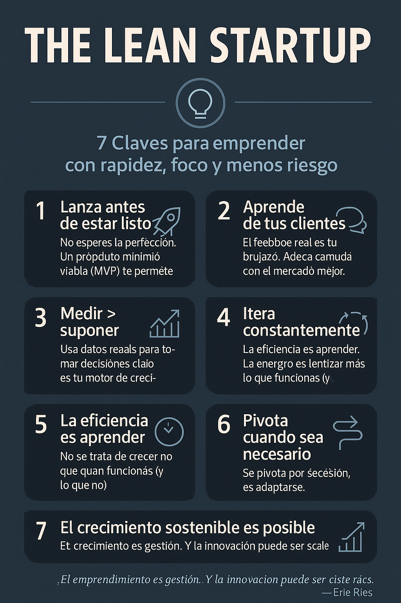
orador 1: Bienvenidos a un nuevo episodio de Conecta y Lidera. Soy Ana y me acompaña Carlos. Hoy vamos a analizar un libro lleno de sabiduría práctica para emprendedores: *Inteligencia Callejera* de Norm Brodsky y Bo Burlingham. Un manual directo para quienes quieren construir un negocio real y sostenible, basado en la experiencia del día a día, enfrentando decisiones reales, conflictos cotidianos y aprendiendo a sortear los retos del mundo empresarial sin adornos.
orador 2: Hola, soy Carlos. Este libro es como sentarse a conversar con un mentor experimentado. Norm Brodsky ha creado y vendido varios negocios exitosos, y aquí comparte lecciones que no se aprenden en la universidad, pero que pueden marcar la diferencia entre el éxito y el fracaso. Todo está basado en ejemplos concretos y situaciones reales que vivió como empresario, desde iniciar empresas sin capital hasta enfrentar crisis financieras, errores estratégicos y cómo transformarlos en crecimiento sostenible.
orador 1: Una de las primeras enseñanzas que resalta es que no todo negocio exitoso empieza con una gran idea. Norm enfatiza que lo más importante es la ejecución. En su empresa de almacenamiento de documentos, por ejemplo, no tenía una idea innovadora ni tecnología de punta. Su éxito radicó en ejecutar consistentemente un servicio confiable, tratar bien a los clientes y mantener bajos los costos. Nos recuerda que la ejecución disciplinada vale más que la genialidad sin acción.
orador 2: También subraya la importancia de conocer a fondo los números del negocio. Él insiste en que muchos emprendedores fracasan porque no entienden su flujo de caja. En un capítulo fundamental, cuenta cómo casi pierde una empresa rentable porque ignoró los plazos de pago de los clientes frente a los compromisos con sus proveedores. Esa experiencia le enseñó que sin liquidez, ningún negocio sobrevive, por más ventas que tenga. Su consejo: revisa el flujo de efectivo cada semana, entiende tu punto de equilibrio y no te dejes engañar por cifras de ventas que no se traducen en caja.
orador 1: Me encanta su enfoque sobre la cultura empresarial. En su negocio de logística, Norm implementó una política de transparencia total con sus empleados. Les enseñó a leer los estados financieros y a tomar decisiones basadas en ellos. Incluso, cada empleado sabía cuánto ganaba la empresa por cliente y cómo su trabajo influía directamente en los márgenes. Como resultado, el equipo se volvió más comprometido, proactivo y consciente del impacto de sus acciones. Una cultura basada en la confianza, no en el control.
orador 2: Otra lección clave: el crecimiento puede ser un enemigo si no se controla. Norm cuenta cómo en una de sus empresas comenzó a expandirse rápidamente sin la estructura adecuada. La consecuencia fue una crisis de calidad y de finanzas. Aprendió que crecer debe ser un proceso estratégico, no impulsivo. Crecer por crecer puede llevar al caos. Su recomendación: sólo escalar si tienes el equipo, los sistemas y el capital preparados para sostener ese crecimiento.
orador 1: Y sobre los clientes, Norm es claro: no todos son buenos para tu negocio. En una historia contundente, explica cómo decidió no trabajar más con un cliente importante porque sus condiciones afectaban la salud financiera de la empresa. Este cliente exigía precios muy bajos, pagos extendidos y trato preferencial. Al dejarlo ir, su rentabilidad mejoró, la moral del equipo subió y pudo enfocarse en clientes más valiosos. Nos enseña a priorizar relaciones sanas y sostenibles, no solo grandes nombres.
orador 2: El fracaso también es un tema recurrente. Norm nos invita a cambiar la forma de verlo. En lugar de evitarlo, debemos analizarlo, aprender y compartir esas lecciones. Cuenta cómo después de un mal negocio en el sector de restaurantes, entendió que no todo lo que parece rentable lo es. Descubrió que no conocía bien esa industria y que había subestimado los riesgos. Desde entonces, solo emprende en sectores que conoce profundamente. Aprendizaje: la experiencia es cara, pero te prepara mejor que cualquier teoría.
orador 1: *Inteligencia Callejera* es una guía para tomar decisiones inteligentes, basadas en la realidad y no solo en la teoría. Cada capítulo está lleno de anécdotas reales, consejos directos y principios que pueden aplicarse desde el primer día en cualquier tipo de negocio. Te enseña a negociar mejor, a contratar con visión, a enfrentar crisis con cabeza fría y a crecer con estrategia, sin perder de vista lo más importante: la sostenibilidad a largo plazo.
orador 2: Un libro indispensable para quienes están construyendo empresa desde cero o para quienes ya están en el camino y quieren mantenerse firmes, conscientes y enfocados. Aquí no hay glamour, hay sabiduría probada. Es una lectura que te obliga a mirar tu negocio con otros ojos y a cuestionar si estás realmente construyendo sobre fundamentos sólidos.
orador 1: Gracias por estar con nosotros en este episodio de Conecta y Lidera. Esperamos que las lecciones de *Inteligencia Callejera* te inspiren a liderar con más conciencia, a tomar decisiones con criterio y a confiar en tu experiencia como herramienta de liderazgo.
orador 2: Nos vemos en el próximo episodio, donde seguiremos compartiendo los mejores libros para crecer como líderes y emprendedores. Hasta entonces, sigue aprendiendo, sigue liderando y sobre todo, sigue conectando.
orador 1: Hasta pronto, y recuerda: conectar con otros y liderar con propósito es la clave del cambio.
🛠️ Lecciones Clave
1️⃣ Las ideas son fáciles, los negocios son difíciles
Lo que importa no es tener una gran idea, sino ejecutarla bien, una y otra vez.
2️⃣ Los números no mienten
Aprende a leer y entender tus finanzas. Sin controlar los números, tu negocio no durará.
3️⃣ La venta repetida es el alma del negocio
Conseguir nuevos clientes es caro. Retenerlos es rentable. Crea relaciones, no solo transacciones.
4️⃣ El ego es un mal consejero
No tomes decisiones para impresionar. Toma decisiones que hagan crecer tu empresa.
5️⃣ El flujo de caja manda
Puedes tener ganancias y aun así quebrar. Lo más crítico es tener efectivo disponible.
6️⃣ Contrata lento, despide rápido
Rodéate de personas competentes y comprometidas. No mantengas a quien frena tu avance.
7️⃣ Crecer demasiado rápido puede ser peligroso
El crecimiento sin control puede destruir lo que construiste. Escala con estrategia.
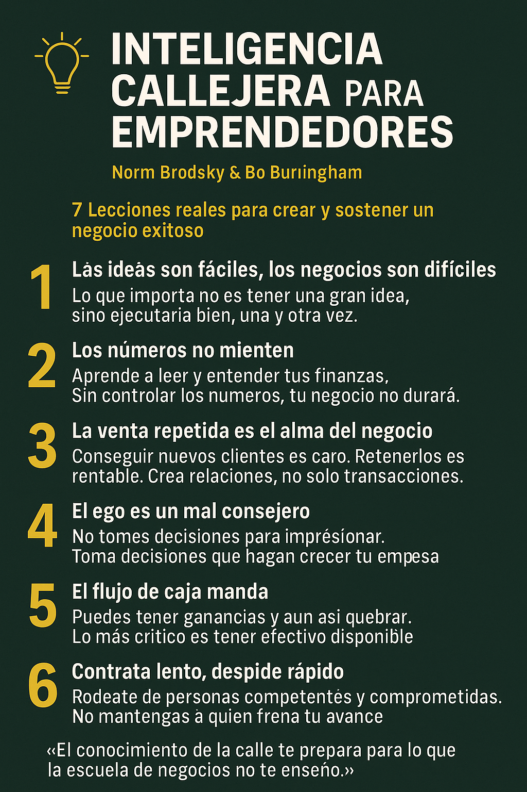
orador 1: Bienvenidos a un nuevo episodio de Conecta y Lidera. Soy Ana y me acompaña Carlos. Hoy vamos a profundizar en un libro que se ha convertido en una referencia para quienes quieren escalar sus negocios de forma efectiva: *Apunta, dispara y luego apunta mejor* de Michael Masterson. Un enfoque directo y valiente para crecer sin quedar atrapado en la parálisis del perfeccionismo, que propone una mentalidad de acción rápida, aprendizaje continuo y adaptación constante.
orador 2: Hola, soy Carlos. Este libro es una guía paso a paso para llevar un negocio desde cero hasta los cien millones de dólares. Masterson divide el crecimiento empresarial en cuatro etapas, y en cada una nos dice exactamente qué debemos priorizar, qué errores evitar y cómo mantener el foco. Es un libro brutalmente honesto que derriba muchos mitos del emprendimiento moderno, especialmente esa idea de que el éxito depende de tener la idea perfecta desde el inicio.
orador 1: La primera etapa, que va de cero a un millón de dólares en ingresos, se centra en una sola cosa: las ventas. Masterson es claro al decir que si no estás vendiendo, no tienes un negocio, tienes un pasatiempo caro. En uno de sus relatos más impactantes, cuenta cómo en una de sus empresas pasaron meses diseñando un producto ideal, pero nadie lo estaba vendiendo. Fue solo cuando contrataron a un vendedor agresivo que empezaron a generar ingresos reales. Ese fue el momento en que la empresa realmente nació.
orador 2: Y lo más interesante es que nos invita a lanzar antes de sentirnos completamente listos. De ahí el título del libro: *Apunta, dispara y luego apunta mejor*. Es decir, lanza tu producto, aprende del mercado y luego ajusta. Masterson insiste en que los datos reales del comportamiento del cliente son infinitamente más valiosos que las suposiciones del emprendedor. El perfeccionismo puede ser un enemigo silencioso del progreso, porque paraliza y retrasa el aprendizaje crucial.
orador 1: En la segunda etapa, que va de uno a diez millones de dólares, el enfoque cambia hacia mejorar la eficiencia del producto, desarrollar sistemas internos y optimizar operaciones. Aquí es donde muchos negocios se estancan porque no evolucionan sus procesos. Masterson recuerda una experiencia en la que una empresa con gran potencial seguía operando con métodos improvisados y dependía completamente del fundador. Fue necesario implementar sistemas de atención al cliente, automatización de pedidos y entrenamiento a nuevos empleados para poder crecer.
orador 2: Esta etapa también exige una nueva mentalidad del fundador: aprender a delegar. Michael nos recuerda que no se puede escalar un negocio si el dueño quiere controlarlo todo. Hay que formar equipos sólidos, confiar en otros y dejar que los sistemas tomen el control de las tareas repetitivas. El paso de emprendedor a líder se vuelve crucial.
orador 1: En la tercera etapa, de diez a cincuenta millones, la clave es formar líderes intermedios. Aquí el reto no es tanto el producto, sino las personas. Masterson narra cómo en una de sus compañías, a pesar de tener un sistema eficiente, no podían crecer más porque no había líderes que asumieran decisiones importantes. Tuvo que invertir en desarrollo de talento, mentoría y empoderamiento para que otros pudieran liderar áreas clave del negocio.
orador 2: También menciona que esta etapa implica fortalecer la cultura de la empresa. Ya no basta con tener buenos productos o servicios, hay que mantener alineado al equipo, inspirarlo y asegurarse de que todos entiendan hacia dónde va la organización. Es una etapa de madurez organizacional.
orador 1: Finalmente, en la cuarta etapa, de cincuenta a cien millones de dólares, la prioridad es la innovación continua y la cultura. Aquí, el crecimiento no es lineal ni garantizado. Masterson nos recuerda que muchas empresas exitosas se estancan o colapsan por dejar de innovar. Habla de cómo mantuvo viva la agilidad en una organización grande al crear pequeñas unidades internas de innovación, como startups dentro de la empresa.
orador 2: En esta etapa también se vuelve fundamental el rol del fundador como visionario. Ya no está en la operación diaria, pero su responsabilidad es proteger la cultura, mantener la inspiración y empujar los límites. La empresa necesita evolucionar constantemente sin perder su esencia.
orador 1: En resumen, *Apunta, dispara y luego apunta mejor* es un mapa claro y accionable para escalar un negocio sin perder el rumbo. Te ayuda a enfocarte en lo que realmente importa en cada etapa del crecimiento, y te obliga a dejar atrás hábitos que funcionaron al inicio, pero que ya no sirven. Es desafiante, práctico y está lleno de ejemplos reales que conectan con los retos que enfrentamos día a día como emprendedores.
orador 2: Un libro indispensable para quienes están empezando, pero también para quienes ya tienen un negocio en marcha y sienten que han llegado a un techo. Masterson te habla directo, sin rodeos, y te invita a tomar decisiones difíciles con valentía y estrategia.
orador 1: Gracias por acompañarnos en este nuevo episodio de Conecta y Lidera. Esperamos que las lecciones de *Apunta, dispara y luego apunta mejor* te inspiren a tomar acción, aprender rápido y construir un camino sólido de crecimiento.
orador 2: Nos vemos en el próximo episodio, donde seguiremos descubriendo los mejores libros para desarrollar nuestro liderazgo y mentalidad emprendedora. Hasta entonces, sigue aprendiendo, sigue liderando y sobre todo, sigue conectando.
orador 1: Hasta pronto, y recuerda: conectar con otros y liderar con propósito es la clave del cambio.
🚀 Lecciones Clave
1️⃣ Vende primero, mejora después
El producto perfecto no sirve si nadie lo compra. La validación real ocurre con ventas, no con opiniones.
2️⃣ El crecimiento comienza en el caos
Los primeros pasos son desordenados. Acepta la imperfección y actúa rápido.
3️⃣ El marketing es prioridad
Antes de escalar equipos o procesos, domina cómo generar ventas consistentemente.
4️⃣ No te distraigas con tareas administrativas
Los fundadores deben centrarse en ventas, producto y estrategia. Delegar lo demás.
5️⃣ Enfócate en tu “big idea”
Una propuesta única y clara es lo que te diferencia. Si el mercado no la entiende, no comprarán.
6️⃣ Los sistemas vienen después
Primero necesitas clientes. Luego, creas estructuras para sostener el crecimiento.
7️⃣ Cada fase del negocio requiere un nuevo tú
Lo que te llevó del punto A al B no te llevará al C. Evoluciona junto con tu empresa.
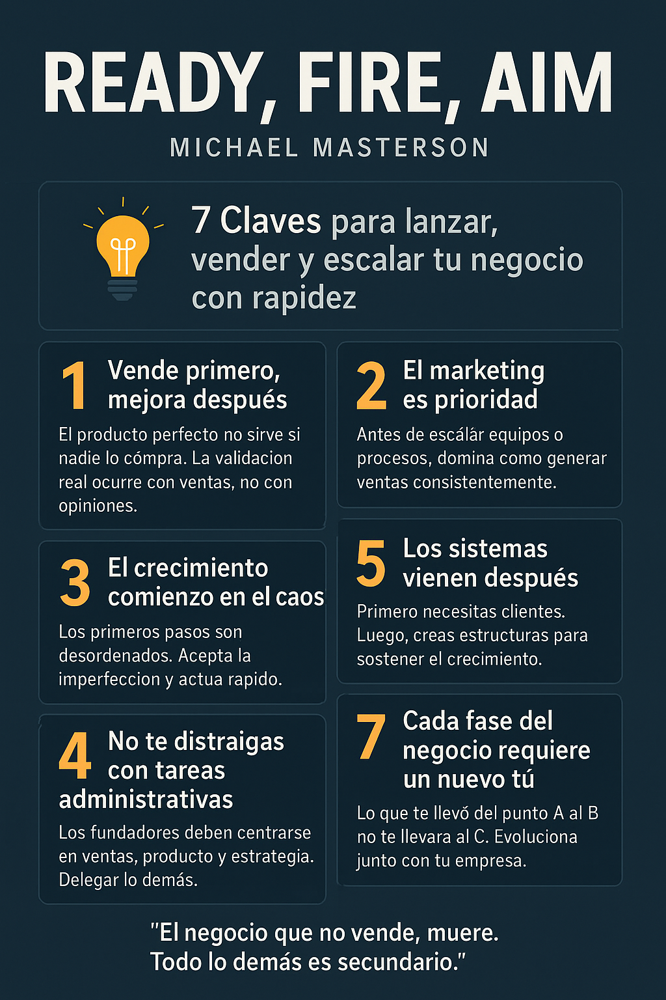
orador 1: Bienvenidos a un nuevo episodio de Conecta y Lidera. Soy Ana y me acompaña Carlos. Hoy vamos a hablar de un libro que se ha convertido en una guía esencial para quienes quieren dejar el mundo corporativo y lanzarse a emprender con propósito: *Escape de la nación de las cabinas* de Pamela Slim. Una obra que mezcla inspiración con acción, ideal para quienes están listos para hacer un cambio profundo en su vida profesional, y desean hacerlo con claridad, estructura y una base sólida de confianza.
orador 2: Hola, soy Carlos. Este libro es perfecto para quienes se sienten atrapados en un trabajo que no los inspira, que sienten que tienen un potencial no aprovechado, y quieren dar el salto hacia una vida más alineada con sus pasiones y valores. Pamela Slim, coach de carrera y experta en transición profesional, nos ofrece claridad, estructura y sobre todo, mucho ánimo, sin vender ilusiones vacías. Lo hace con empatía y experiencia, compartiendo historias reales de personas que han hecho esa transición y han encontrado su propósito.
orador 1: Una de las ideas centrales del libro es que no necesitas odiar tu trabajo para saber que estás hecho para algo más. Pamela relata cómo muchas personas, aunque tienen buenos sueldos y estabilidad, sienten una inquietud profunda. Esa sensación de que están viviendo una vida que no les pertenece del todo. Y esa incomodidad, si se atiende con inteligencia y se toma en serio, puede ser el primer paso hacia una nueva vida profesional. Nos recuerda que esa voz interna es legítima y merece atención, no silencio.
orador 2: También nos lleva a enfrentar los miedos comunes del emprendedor: miedo a fracasar, a quedarte sin dinero, a perder el estatus o decepcionar a tu familia. Pamela no los niega ni los minimiza, sino que los descompone y les da nombre. Por ejemplo, habla del "asesino interno" que te convence de que no eres lo suficientemente bueno, y enseña a construir confianza a través de la acción. Cuenta cómo una de sus clientas, ingeniera en una empresa de tecnología, logró superar ese diálogo interno negativo al empezar con pequeños pasos, como ofrecer talleres gratuitos, y con el tiempo construyó un negocio de consultoría que hoy factura seis cifras anuales.
orador 1: Algo que valoro mucho es su enfoque práctico. No se trata solo de soñar con la independencia, sino de prepararse con estrategia. Pamela insiste en que no es necesario renunciar de inmediato. Propone crear un plan de salida, probar ideas de negocio en paralelo, y construir una base mínima viable antes de dar el salto. Como el caso de un diseñador gráfico que comenzó a ofrecer servicios freelance por las noches y fines de semana hasta tener suficientes clientes para independizarse sin riesgo financiero. La clave es reducir la ansiedad del salto, transformándolo en una transición planeada.
orador 2: Además, rescata el valor de nuestras habilidades y experiencias corporativas. En lugar de desechar todo lo que aprendiste en tu trabajo, te invita a reutilizar ese conocimiento en tu negocio. Un ejemplo concreto es el de una gerente de proyectos que aplicó su experiencia en procesos y liderazgo para lanzar una empresa de organización de eventos empresariales, aprovechando lo que ya sabía hacer bien. Este enfoque permite construir un negocio sobre una base conocida, lo cual reduce la curva de aprendizaje y aumenta la confianza desde el inicio.
orador 1: Y tiene una mirada muy humana. Pamela entiende que este proceso afecta no solo tu carrera, sino también tus relaciones, tu identidad, tu rutina diaria. Por eso propone una transición consciente, donde también se trabaje el autocuidado, la mentalidad y el propósito. Nos anima a rodearnos de personas que apoyen el cambio, a buscar mentores, y a aceptar que el crecimiento profesional también es un proceso emocional que involucra duelo, miedo, alegría y mucha autoexploración.
orador 2: Otra enseñanza poderosa es la importancia de definir qué significa el éxito para ti. No se trata de replicar modelos ajenos, sino de construir un negocio que te permita vivir como deseas. Pamela muestra cómo algunos de sus clientes eligieron modelos más pequeños, pero altamente rentables y flexibles, en lugar de perseguir crecimiento por obligación. Es una invitación a diseñar tu propio camino, no solo a escapar de uno viejo. El éxito, según el libro, debe ser una construcción personal, no una imposición externa.
orador 1: También dedica tiempo a hablar de las excusas comunes que usamos para no actuar. Desde "no tengo tiempo" hasta "no soy bueno vendiendo". Pamela las enfrenta con empatía pero también con firmeza. Nos dice que muchas veces no es falta de recursos, sino de claridad y decisión. Propone ejercicios concretos para identificar habilidades transferibles, explorar nichos de mercado y empezar a monetizar tu conocimiento de manera gradual.
orador 2: Y finalmente, algo que me pareció muy valioso es su enfoque comunitario. No se trata solo de salir de la cabina, sino de construir redes de apoyo, rodearte de otros emprendedores, participar en comunidades de aprendizaje y colaboración. Porque el camino del emprendedor puede ser solitario si se recorre en aislamiento, pero puede ser profundamente enriquecedor cuando se comparte.
orador 1: En resumen, *Escape de la nación de las cabinas* es más que un libro de emprendimiento. Es una invitación a reconectar contigo mismo, a imaginar un futuro más auténtico y a tomar decisiones con valentía y estrategia. Te da herramientas, ejemplos y una voz que te dice: no estás solo, puedes hacerlo. Es un libro que inspira, guía y acompaña.
orador 2: Gracias por estar con nosotros en este nuevo episodio de Conecta y Lidera. Esperamos que este libro te inspire a dar ese primer paso hacia una vida profesional más plena, y que sepas que cada etapa del proceso es parte del camino. La transformación es posible, y comienza con una decisión.
orador 1: Nos vemos en el próximo, donde seguiremos compartiendo los mejores libros para impulsar tu liderazgo, tu propósito y tu evolución como profesional y como ser humano.
orador 2: Hasta pronto, y recuerda: conectar con otros y liderar con propósito es la clave del cambio.
🚪 Lecciones Clave
1️⃣ El miedo no es una señal para detenerte
Salir del empleo tradicional da miedo, pero es un paso necesario para crecer. Reconoce el temor, pero no te paralices.
2️⃣ El trabajo estable no es tan seguro
La “seguridad” laboral es una ilusión. La verdadera estabilidad es tener control sobre tus ingresos.
3️⃣ Emprender no es lanzarse al vacío
No necesitas renunciar hoy. Puedes construir tu negocio mientras aún tienes tu empleo.
4️⃣ Define tu visión de éxito
No se trata solo de ganar dinero. Define cómo quieres vivir, trabajar y aportar valor.
5️⃣ Conecta con tu tribu
Rodéate de personas que te inspiren, apoyen y desafíen. Tu entorno acelera (o frena) tu crecimiento.
6️⃣ Aprende habilidades empresariales
Vender, negociar, comunicar y liderar son esenciales. No naciste sabiendo, pero puedes aprender.
7️⃣ Da el salto con estrategia
Haz un plan, pon fecha y avanza paso a paso. El salto no es impulsivo, es calculado.
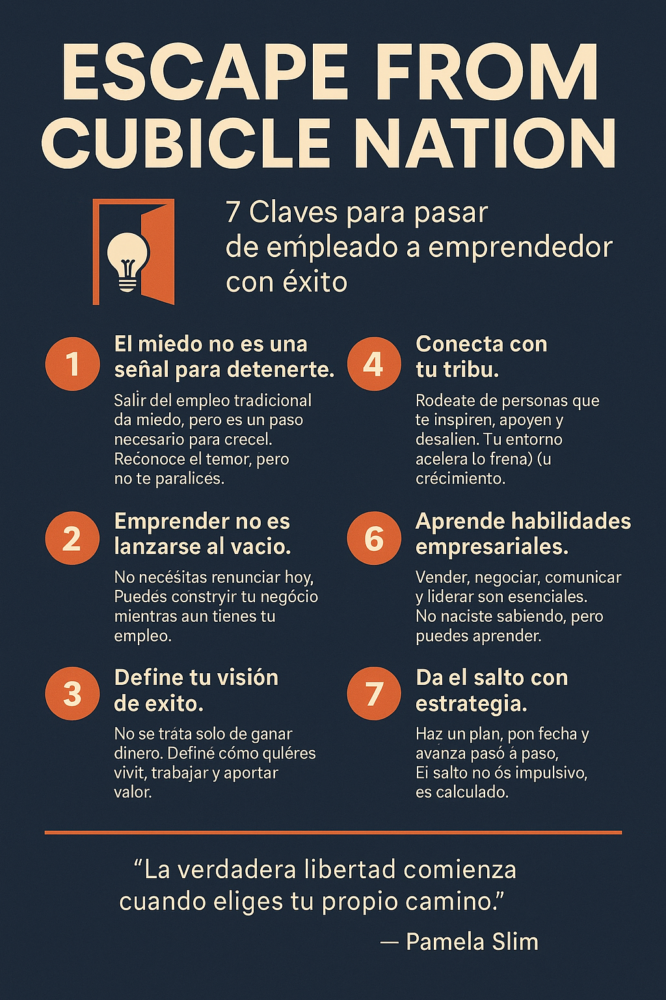
orador 1: Bienvenidos a un nuevo episodio de Conecta y Lidera. Soy Ana y me acompaña Carlos. Hoy vamos a hablar de un libro esencial para todo emprendedor que quiere construir un negocio sólido y financiable: *Planes de negocio bancables* de Edward Rogoff. Una guía completa para transformar ideas en documentos convincentes que abren puertas reales con bancos, inversionistas y socios estratégicos, mostrando no solo lo que quieres hacer, sino por qué es viable hacerlo.
orador 2: Hola, soy Carlos. Este libro es una herramienta clave para quienes están buscando financiamiento, inversionistas o simplemente quieren estructurar su emprendimiento de forma profesional. Rogoff no solo nos enseña a escribir un plan de negocio, sino a pensar estratégicamente como lo hacen los bancos, los fondos y los socios potenciales. Su enfoque combina claridad, realismo y preparación rigurosa, con una estructura pensada para responder las verdaderas preguntas que un financiador se haría.
orador 1: Una de las primeras enseñanzas del libro es que un plan de negocio no es un simple requisito administrativo. Es una herramienta viva de toma de decisiones. Rogoff insiste en que debe ser claro, creíble y enfocado en lo que realmente importa: cómo va a generar dinero, cómo va a crecer y cómo va a superar los riesgos. Por ejemplo, muestra cómo un emprendedor con una cafetería logró conseguir financiamiento al explicar con claridad cuántas tazas necesitaba vender por día para cubrir sus costos fijos y empezar a generar utilidades. Esta clase de detalles concretos generan confianza.
orador 2: Me gusta mucho cómo descompone cada sección del plan. Desde el resumen ejecutivo, que es la carta de presentación del negocio, hasta los detalles financieros, pasando por el análisis de mercado, la competencia, la estrategia de marketing, la estructura del equipo y el análisis de riesgos. Todo con ejemplos prácticos y una lógica orientada a resultados. Como el caso de una empresa de software que rediseñó su plan tras leer el libro y logró convencer a un fondo de capital semilla al demostrar una estrategia clara de adquisición de clientes y una segmentación precisa del mercado.
orador 1: Y algo muy valioso es que Rogoff nos enseña a pensar como un inversionista. Nos pregunta: si tú tuvieras que poner tu propio dinero en este negocio, ¿lo harías? Esa perspectiva cambia completamente la forma de escribir y presentar tu propuesta. No se trata de impresionar, sino de demostrar viabilidad. De hecho, uno de los ejercicios clave del libro es analizar tu propia idea desde la óptica del riesgo: ¿qué podría salir mal, cómo lo vas a manejar, y qué señales te indicarían que necesitas ajustar el rumbo?
orador 2: Otro punto clave es la importancia de la coherencia interna. No basta con tener una gran visión si tus números no la respaldan. Rogoff muestra cómo muchos planes fracasan porque sus proyecciones no están alineadas con el tamaño del mercado, la capacidad operativa o los recursos humanos disponibles. Recuerdo el caso que menciona de un emprendedor que decía que iba a captar el 10% del mercado nacional en su primer año... sin tener ni siquiera un equipo de ventas formado. Ese tipo de errores cuestan credibilidad y pueden cerrar puertas antes de tiempo.
orador 1: También destaca el rol del equipo. Un plan bien escrito con un equipo débil es difícil de financiar. Rogoff aconseja mostrar claramente quién hace qué, por qué están calificados y cómo se complementan. Incluso recomienda tener mentores o asesores estratégicos visibles desde el inicio. Por ejemplo, en uno de sus casos, un emprendimiento gastronómico logró convencer a un grupo de inversionistas porque había incluido en su equipo asesor a un chef de renombre y un exgerente de operaciones de una cadena de restaurantes. El equipo, al final, es tan importante como la idea.
orador 2: Y no podemos olvidar el énfasis que pone en las proyecciones financieras. Rogoff dedica varios capítulos a enseñar cómo elaborar estados de resultados, flujos de caja y balances que sean realistas, comprensibles y coherentes. Enseña que no se trata de inflar cifras para impresionar, sino de mostrar cómo el negocio puede generar flujo positivo y escalar. Da el ejemplo de un emprendedor que consiguió financiamiento porque su plan incluía un análisis detallado de estacionalidad y cómo ajustar costos en temporadas bajas. Eso demuestra dominio y previsión.
orador 1: Rogoff también incluye ejercicios prácticos que permiten a los emprendedores poner a prueba sus propias ideas. Desde análisis FODA realistas hasta modelos de negocio tipo canvas que se conectan directamente con la narrativa del plan. El autor quiere que el lector no solo redacte, sino que piense. Que tome decisiones más informadas y más alineadas con el entorno real del negocio.
orador 2: Finalmente, enfatiza que un plan bancable no es algo que se escribe una vez y se guarda. Es un documento vivo, que se revisa, se adapta y se utiliza para tomar decisiones estratégicas. Sirve tanto para presentar el negocio como para gestionarlo día a día. Es una brújula, no un adorno. Y, como tal, debe actualizarse con cada nueva información relevante del mercado o de la operación del negocio.
orador 1: En resumen, *Planes de negocio bancables* no es solo un manual de escritura, es una guía de pensamiento empresarial. Es para quienes quieren construir negocios reales, que resistan la mirada crítica del mundo financiero y que estén preparados para escalar con visión, orden y argumentos sólidos. Es una herramienta para convertir ideas en propuestas concretas, medibles y sostenibles.
orador 2: Gracias por acompañarnos en este episodio de Conecta y Lidera. Esperamos que este libro te motive a tomar en serio la planificación, a documentar tus ideas con precisión y a diseñar un futuro empresarial con base sólida, estructura clara y visión realista. Porque un buen plan de negocio no solo te abre puertas, también te muestra cómo caminar por ellas.
orador 1: Nos vemos en el próximo episodio, donde seguiremos descubriendo libros que te ayudan a crecer como líder y como emprendedor, con ideas accionables y enfoque estratégico para convertir tus sueños en negocios sustentables.
orador 2: Hasta pronto, y recuerda: conectar con otros y liderar con propósito es la clave del cambio.
📊 Lecciones Clave
1️⃣ No es solo un documento, es una herramienta
Un buen plan de negocio guía tus decisiones y convence a los inversores. No es solo para “presentar”.
2️⃣ El resumen ejecutivo lo es todo
Muchos solo leerán esta sección. Hazla clara, directa y poderosa: ¿qué haces, para quién y por qué importa?
3️⃣ Define tu mercado con datos reales
Demuestra que conoces a tu cliente ideal y el tamaño de la oportunidad con datos confiables.
4️⃣ La ventaja competitiva debe ser clara
Explica por qué tú y no otros. ¿Qué haces diferente o mejor? ¿Por qué no te copiarán fácilmente?
5️⃣ Proyecciones financieras realistas
Muestra números viables, con supuestos sólidos. Más vale ser conservador que prometer lo imposible.
6️⃣ Tu equipo importa tanto como tu idea
Los inversores apuestan por personas. Expón quién está detrás del negocio y por qué son los indicados.
7️⃣ El plan debe mostrar cómo generas ingresos
Modelo de negocio claro: ¿cómo ganas dinero?, ¿cuánto cuesta operar?, ¿cómo creces?
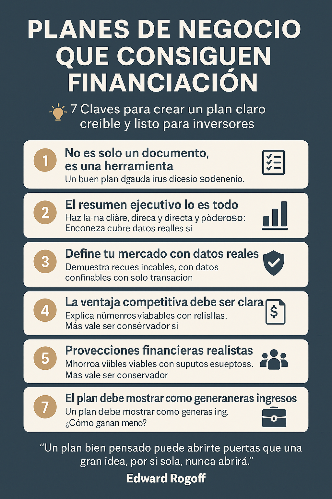
Orador 1 (Ana): Bienvenidos a "Conecta y Lidera", el espacio donde exploramos los mejores libros y herramientas para potenciar nuestro liderazgo y desarrollo personal. Soy Ana, y me acompaña como siempre, Carlos. Hoy traemos un episodio esencial para toda persona que busca liderar desde la comprensión y la empatía.
Orador 2 (Carlos): Hola Ana, un gusto estar nuevamente contigo y con todos quienes nos escuchan. Hoy abordaremos un tema clave tanto para el ámbito personal como profesional: el conflicto. Un fenómeno inevitable en la vida humana, pero que, bien gestionado, puede ser fuente de crecimiento, innovación y cohesión. Y lo haremos a partir del libro "Teoría del conflicto y mecanismos de solución" de Javier La Rosa y Gino Rivas, una obra que ofrece un enfoque profundo, técnico y muy aplicable sobre cómo entender y resolver conflictos de manera eficaz.
Orador 1 (Ana): Exactamente. Este libro, publicado por el Fondo Editorial de la PUCP, está dividido en siete capítulos que nos llevan desde la comprensión teórica del conflicto hasta los distintos mecanismos de solución disponibles, tanto formales como alternativos. El texto inicia con una pregunta fundamental: ¿qué es un conflicto? Los autores lo definen como una situación inevitable que emerge cuando dos o más partes perciben que sus intereses, necesidades, valores o aspiraciones están en oposición o colisión.
Orador 2 (Carlos): Y lo interesante es que no lo abordan desde una visión negativa o punitiva, sino como una realidad estructural de la vida social. De hecho, diferencian claramente entre el enfoque adversarial y el cooperativo. El primero, tradicional en el derecho procesal, concibe el conflicto como una batalla con un vencedor y un vencido. En cambio, el enfoque cooperativo promueve la idea de que los conflictos pueden ser resueltos mediante el diálogo, el entendimiento mutuo y la búsqueda de soluciones constructivas. Esta distinción es clave porque determina el tipo de intervención que aplicamos ante un conflicto.
Orador 1 (Ana): Para ilustrarlo con un ejemplo concreto: en un entorno escolar, cuando dos estudiantes tienen un altercado, una solución adversarial sería castigar a uno de ellos, perpetuando la hostilidad. Un enfoque cooperativo, en cambio, buscaría facilitar una conversación donde ambos expresen sus puntos de vista y construyan un acuerdo que fortalezca la convivencia. Aquí no solo se resuelve el conflicto puntual, sino que se promueve una cultura de paz.
Orador 2 (Carlos): Precisamente en ese marco, los autores introducen los mecanismos alternativos de resolución de conflictos, conocidos como MARCs. Estos mecanismos incluyen la negociación, la mediación, la conciliación y el arbitraje. Son herramientas que no solo buscan descongestionar el sistema judicial, sino que ofrecen respuestas más flexibles, rápidas y ajustadas a las necesidades de las partes involucradas.
Orador 1 (Ana): Uno de los aspectos que más destacan en el libro es la importancia de la comunicación como eje transversal. Los autores subrayan que muchas disputas no nacen de intereses incompatibles, sino de fallas en la comunicación. Por ejemplo, en una empresa, si un gerente impone metas sin escuchar las condiciones operativas del equipo, se genera frustración. Pero si ese mismo gerente escucha activamente y valida las preocupaciones de su equipo, puede reconvertir el conflicto en un proceso de mejora conjunta.
Orador 2 (Carlos): Es un excelente punto. Y esto nos lleva al mecanismo de negociación, probablemente el más común. El libro distingue entre negociación basada en posiciones —donde cada parte defiende su postura inicial— y la negociación basada en intereses, que busca explorar las razones subyacentes de cada parte. Esta última, basada en el modelo de Harvard, promueve soluciones creativas y duraderas. Un ejemplo típico se da en negociaciones sindicales. En lugar de discutir solo sobre porcentajes salariales, las partes pueden descubrir que ambos valoran la estabilidad laboral, y a partir de ahí construir soluciones que equilibren sostenibilidad financiera y bienestar del trabajador.
Orador 1 (Ana): Y esto es esencial en liderazgo. Un líder eficaz debe dominar esta capacidad de negociar no desde la imposición, sino desde el entendimiento. Para lograrlo, la preparación, la claridad de objetivos y el desarrollo de empatía son fundamentales. Pensemos en un líder que atraviesa un proceso de reestructuración organizacional: su capacidad para negociar con áreas distintas, reconociendo las resistencias y expectativas, será decisiva para lograr un cambio genuino y no solo cosmético.
Orador 2 (Carlos): Luego tenemos la mediación y la conciliación, mecanismos que involucran la figura de un tercero neutral. En la mediación, el tercero facilita el diálogo sin imponer propuestas. En la conciliación, ese tercero puede sugerir caminos posibles. Imaginemos un conflicto entre vecinos por el uso de espacios comunes. Una mediadora puede ayudar a que ambas partes reconozcan sus necesidades y lleguen a acuerdos sin dañar la relación. En cambio, un conciliador podría sugerir directamente horarios de uso que equilibren los intereses.
Orador 1 (Ana): Ambos mecanismos fortalecen la autonomía de las partes. No es un juez quien decide por ellas, sino que se les ofrece un espacio seguro y estructurado para encontrar sus propias soluciones. Esta lógica es profundamente respetuosa con la dignidad humana, y por eso es tan valiosa para el liderazgo: enseña que conducir no es imponer, sino facilitar.
Orador 2 (Carlos): También se analiza el arbitraje, una vía más formal pero muy útil, sobre todo en relaciones comerciales. Aquí, un árbitro elegido por las partes resuelve el conflicto de forma definitiva y vinculante. Es especialmente eficaz cuando se necesita una solución rápida, técnica y confidencial. Un caso práctico sería el de dos empresas que disputan la interpretación de un contrato: al acudir a arbitraje evitan largos procesos judiciales y mantienen la relación comercial con menos desgaste.
Orador 1 (Ana): Finalmente, el libro trata el proceso judicial. Aunque no es descartado, se lo presenta como último recurso, ideal para casos donde se vulneran derechos fundamentales o hay una gran asimetría de poder. Pero incluso en esos casos, una mirada restaurativa y empática puede hacer la diferencia en el modo de litigar y en los efectos que el proceso produce en las personas.
Orador 2 (Carlos): Lo más potente del libro es su mirada integral. No es una simple lista de técnicas, sino una propuesta de cultura: una forma distinta de ver el conflicto. En lugar de temerlo o evitarlo, se nos invita a enfrentarlo con madurez, comprensión y herramientas claras. Y eso, como líderes, es una lección invaluable.
Orador 1 (Ana): Me quedo con una frase del libro que me impactó: "el conflicto es una oportunidad disfrazada de amenaza". Si logramos ver más allá de la confrontación, descubriremos espacios para innovar, mejorar procesos y construir relaciones más sólidas y auténticas.
Orador 2 (Carlos): Ana, ha sido una conversación enriquecedora. Recomendamos ampliamente este libro a todos quienes desean liderar con conciencia, negociar con inteligencia y transformar conflictos en oportunidades. "Teoría del conflicto y mecanismos de solución" de Javier La Rosa y Gino Rivas es, sin duda, una lectura indispensable.
Orador 1 (Ana): Gracias Carlos, y gracias a ustedes por acompañarnos en este episodio extendido de "Conecta y Lidera". Nos reencontramos en el próximo capítulo para seguir aprendiendo, cuestionando y creciendo juntos. Hasta pronto.
🧠 Contenido
1️⃣ El conflicto es natural
Es parte inherente de las relaciones humanas. No es necesariamente negativo, puede generar cambio positivo.
2️⃣ Tipos de conflicto
Pueden ser: interpersonales, estructurales, de intereses o de valores. Entender su tipo facilita su resolución.
3️⃣ Principales causas
Falta de comunicación, intereses contrapuestos, percepciones distintas o estructuras desequilibradas.
4️⃣ Mecanismos de solución
Se dividen en:
Autocompositivos (negociación, conciliación, mediación)
Heterocompositivos (arbitraje, decisiones judiciales)
5️⃣ La negociación es fundamental
Es el método más común y permite soluciones flexibles y sostenibles cuando se maneja correctamente.
6️⃣ La mediación es clave en conflictos complejos
Un tercero imparcial ayuda a las partes a construir un acuerdo sin imponer decisiones.
7️⃣ Prevenir es mejor que resolver
Fomentar el diálogo, la empatía y mecanismos anticipados de resolución disminuye el riesgo de conflictos escalados.
orador 1: Bienvenidos a "Conecta y Lidera", soy Ana y me acompaña Carlos. En este episodio vamos a explorar uno de los libros más provocadores y transformadores en el mundo de los negocios y el emprendimiento: "Reinicia: Borra lo aprendido y piensa la empresa de otra forma" de Jason Fried y David Heinemeier Hansson. Este libro no solo desafía muchas de las creencias tradicionales sobre cómo construir y dirigir una empresa, sino que también nos invita a desaprender para poder innovar con mayor libertad y sentido común.
orador 2: Así es, Ana. "Reinicia" es directo, práctico y sin rodeos. Lo que más impacta es cómo rompe con ideas que muchos de nosotros damos por sentadas: como la necesidad de planes de negocio extensos, la obsesion por crecer rápido o incluso la importancia del ambiente de oficina tradicional. Es una especie de manifiesto para quienes quieren hacer las cosas a su manera, sin seguir el molde corporativo habitual.
orador 1: Uno de los mensajes centrales del libro es: empieza ahora. Fried y Hansson insisten en que no necesitas permiso, inversores ni un plan perfecto para arrancar. Lo importante es hacer, comenzar con lo que tienes y mejorar sobre la marcha. Ellos mismos lo vivieron con su empresa, Basecamp. Empezaron pequeño, se mantuvieron enfocados y construyeron algo sólido, escalando de manera orgánica y sin sacrificar sus valores.
orador 2: Y eso se ve reflejado también en empresas como Mailchimp. Esta compañía creció sin inversores externos, apostando por la rentabilidad desde el principio y centrandose en dar valor a sus clientes. Sin buscar protagonismo ni hipercrecimiento, lograron consolidarse en su industria de forma sostenible y con una cultura muy alineada con sus principios.
orador 1: Exacto. Y me encanta cómo critican el culto a la productividad extrema. En lugar de trabajar más, proponen trabajar mejor. Dicen que estar ocupado no significa ser productivo. Muchas veces estar "ocupado" es una forma elegante de evitar lo importante. Ellos promueven un enfoque minimalista, centrado en lo esencial. Como ejemplo, podríamos pensar en la startup 37signals, que lanzó productos simples y altamente funcionales, sin caer en la trampa de la sobreingeniería. De hecho, su herramienta Basecamp es un reflejo de esa filosofía: simple, clara, enfocada en resolver un problema sin complicaciones innecesarias.
orador 2: Otro punto que me hizo reflexionar profundamente fue el capítulo sobre las reuniones. Ellos las llaman "venenosas", porque interrumpen el trabajo real y suelen carecer de una agenda clara. Proponen soluciones como escribir mejor, comunicarse de forma asincrónica y evitar reuniones innecesarias. Un ejemplo práctico es GitLab, una empresa 100% remota que documenta absolutamente todo y reduce las reuniones al mínimo. Así maximizan el tiempo de trabajo real y reducen el agotamiento. También implementan "manuales vivos" que responden a la mayoría de las dudas sin necesidad de interrumpir a otros.
orador 1: Y es que el trabajo profundo necesita silencio. En Basecamp, por ejemplo, establecieron "No Talk Thursdays", un día sin interrupciones para fomentar la concentración. Y en lugar de medir productividad por horas, la miden por resultados. Este tipo de medidas hacen una diferencia enorme en la calidad de vida laboral y en la eficiencia. Otro ejemplo es Automattic, la empresa detrás de WordPress, que funciona 100% distribuida y promueve largos periodos de trabajo sin interrupciones para fomentar la creatividad.
orador 2: Otro concepto potente del libro es el de crecer con cautela. En lugar de perseguir inversión como única vía, promueven una expansión controlada. Un caso interesante es el de Patagonia, que ha crecido de forma responsable, con una filosofía clara y sin comprometer sus valores. Esto les ha permitido mantener el control y su autenticidad como marca. A diferencia de muchas marcas que cambian radicalmente tras recibir capital externo, Patagonia mantiene un enfoque coherente y comprometido con el impacto social y ambiental.
orador 1: Y eso se conecta con otro punto clave: ser diferente, no solo mejor. Fried y Hansson insisten en la importancia de tener una voz propia. Un ejemplo interesante es el de Cards Against Humanity, una empresa que ha roto esquemas en marketing y producto sin competir por precio ni por características, sino por autenticidad y coherencia con su estilo. Incluso han lanzado campañas donde animan a la gente a pagar por nada, simplemente como una declaración de independencia frente a las reglas del marketing tradicional.
orador 2: También abordan el miedo al error. Ellos lo ven como una oportunidad de aprendizaje. Reiniciar, según su filosofía, es tener el valor de cerrar lo que no funciona y redirigir energías. Un ejemplo muy claro es el de Twitter, que comenzó como un proyecto secundario dentro de una empresa llamada Odeo. Cuando vieron el potencial, reiniciaron completamente y construyeron algo nuevo. Otro caso similar es Slack, que nació a partir de un intento fallido de desarrollar un videojuego, y cuya herramienta de comunicación interna terminó convirtiéndose en el producto principal.
orador 1: Me gusta que el libro está lleno de ideas accionables. Es como una colección de ensayos cortos que te invitan a pensar y actuar distinto. No solo aplica a emprendedores. Por ejemplo, una líder de equipo puede inspirarse en estos principios para reducir la burocracia, eliminar procesos innecesarios y dar más autonomía a su equipo. Un entorno más ágil y humano es posible si se aplican estas ideas. Empresas como Buffer o Zapier también han adoptado modelos de trabajo más transparentes y colaborativos, eliminando jerarquías pesadas y fomentando la responsabilidad individual.
orador 2: En resumen, "Reinicia" es un llamado a simplificar, a cuestionar lo establecido y a actuar con sentido común. Una lectura que no deja indiferente y que invita a tomar el control de tu trabajo, tu tiempo y tus decisiones. Una verdadera guía para quienes quieren trabajar con más libertad, menos ruido y mayor claridad de propósito. Si estás cansado del ruido empresarial y quieres una forma más humana de hacer negocios, este libro puede ser un gran punto de partida.
orador 1: Gracias por acompañarnos en este episodio de "Conecta y Lidera". Esperamos que esta conversación sobre "Reinicia" te haya inspirado tanto como a nosotros. Te invitamos a reflexionar sobre qué cosas puedes dejar atrás y qué nuevas formas puedes adoptar para liderar con más coherencia y menos complicaciones. Hasta la próxima.
orador 2: Nos escuchamos pronto. Sigue conectando y liderando, con autenticidad, con sentido y con acción consciente.
orador 1: Bienvenidos a "Conecta y Lidera", soy Ana y me acompaña Carlos. Hoy vamos a analizar un libro esencial para todo aquel que está pensando en emprender o evaluar una idea de negocio: "La prueba del nuevo negocio" de John Mullins. Este libro se ha convertido en una guía indispensable para analizar de manera rigurosa si una oportunidad de negocio realmente vale la pena. Es una lectura que combina experiencia académica con ejemplos prácticos, lo que la hace ideal tanto para nuevos emprendedores como para quienes ya tienen experiencia y quieren validar nuevas ideas.
orador 2: Así es, Ana. Mullins plantea un enfoque muy diferente al entusiasmo ciego que muchas veces rodea a las startups. En lugar de lanzarse con una idea por intuición, propone un marco con siete dominios clave que permiten evaluar con objetividad el potencial de un negocio. Este modelo busca reducir el riesgo antes de invertir tiempo y dinero. Su mensaje es claro: no toda buena idea es una buena oportunidad. Es una llamada a la disciplina emprendedora, a poner la pasión al servicio del análisis estratégico.
orador 1: Estos siete dominios se dividen en tres del mercado, tres de la industria y uno del equipo emprendedor. Por ejemplo, uno de los dominios de mercado es la "atractividad del mercado objetivo". Mullins insiste en que no basta con que exista una necesidad, sino que debe haber un mercado lo suficientemente grande y con crecimiento real. Si el mercado está estancado o saturado, el negocio podría no tener espacio para crecer. Este análisis evita que los emprendedores caigan en la trampa de apostar por nichos demasiado pequeños o sin posibilidad de escalar.
orador 2: Exactamente. Otro dominio de mercado es la "comprensión del cliente objetivo". Esto implica conocer profundamente los comportamientos, deseos y problemas de tus potenciales clientes. Mullins subraya que muchas ideas fracasan porque sus creadores no entienden realmente a quién están tratando de servir. Un ejemplo es el fracaso de muchas apps de salud que asumen cómo las personas quieren controlar su bienestar, sin considerar sus hábitos reales. Incluso pueden estar solucionando un problema que los usuarios no perciben como prioritario.
orador 1: Y el tercer dominio de mercado es la "dinámica del mercado". ¿Cómo se mueve el mercado? ¿Está evolucionando hacia nuevas necesidades? ¿Aparecen nuevos segmentos de clientes? Un buen ejemplo podría ser el auge del mercado de alimentos plant-based. Quienes supieron identificar a tiempo esa dinámica han podido posicionarse con ventajas claras frente a quienes llegaron tarde o no comprendieron el cambio de mentalidad del consumidor.
orador 2: En cuanto a la industria, uno de los dominios es la "estructura de la industria". Es decir, si vas a entrar en un sector con muchos competidores, altas barreras de entrada o fuerte poder de proveedores, es probable que sea una batalla cuesta arriba. Por eso, entender la dinámica del sector es clave para evitar sorpresas desagradables. Mullins sugiere analizar modelos como el de las cinco fuerzas de Porter para evaluar este dominio con claridad. Por ejemplo, en la industria de la moda rápida, la competencia feroz y la presión de los costos pueden hacer inviable una propuesta de valor sin una ventaja clara.
orador 1: Otro dominio industrial es la "atractividad del sector a largo plazo". Hay industrias que pueden parecer rentables hoy, pero que están en declive. Piensa en sectores como el del video club hace unos años. Por eso, no basta con mirar el presente, hay que proyectarse al futuro. Preguntarse si la industria crecerá o se transformará radicalmente. Por ejemplo, el crecimiento de la inteligencia artificial está revolucionando industrias enteras, y no entender esa transición puede dejar fuera a quienes no se adapten.
orador 2: El tercer dominio de la industria es el "acceso a canales de distribución". No es suficiente con tener un gran producto, si no puedes llegar a tu cliente de forma eficaz y rentable. Mullins explica que muchos negocios fracasan porque subestiman lo difícil que es ganar visibilidad y construir una base de usuarios o clientes. En este sentido, ejemplos como Warby Parker o Glossier muestran cómo un enfoque estratégico de distribución puede marcar la diferencia.
orador 1: Y llegamos al único dominio personal: la "misión del equipo emprendedor". Este dominio analiza si los fundadores tienen lo necesario para ejecutar la idea. Experiencia previa, conexiones en el sector, habilidades complementarias. Mullins lo deja claro: una buena idea sin un equipo capaz está destinada al fracaso. El ejemplo clásico es el de muchas startups tecnológicas que tienen ideas brillantes, pero fallan por falta de liderazgo o ejecución. El equipo debe tener visión, pero también capacidad de ejecución y adaptación.
orador 2: Un caso que el libro menciona es el de Starbucks. Mullins explica que la clave de su éxito inicial fue que su modelo de negocio resolvía una necesidad real en un mercado que estaba listo para crecer: el consumo de café de alta calidad. Además, Howard Schultz, su fundador, supo rodearse de un equipo que compartía su visión y que conocía bien el sector minorista. Supieron leer el momento cultural y aprovechar la oportunidad de transformar un hábito cotidiano en una experiencia.
orador 1: Otro punto fuerte del libro es que no busca vender falsas esperanzas. Mullins anima a los emprendedores a decir "no" a las ideas que no superan estas pruebas. Es mejor descubrir las debilidades temprano que perder recursos más adelante. Esta honestidad es refrescante en un mundo donde se glorifica el emprendimiento sin mostrar sus riesgos. Es como una prueba de fuego que evita construir castillos en el aire. Y esa capacidad de decir no es, en sí misma, una habilidad de liderazgo.
orador 2: Y en la práctica, aplicar este marco puede marcar la diferencia. Por ejemplo, un emprendedor que quiere lanzar una app para el cuidado de mascotas podría usar estos siete dominios para identificar si hay demanda real, si el mercado está creciendo, si puede competir con apps existentes, y si tiene el equipo adecuado para desarrollar y escalar el producto. Incluso podría descubrir que su ventaja competitiva está en un nicho aún no explorado, como servicios para mascotas con enfermedades crónicas. Este tipo de análisis no solo ayuda a afinar la propuesta de valor, sino también a evitar errores costosos.
orador 1: En resumen, "La prueba del nuevo negocio" es una herramienta poderosa para todo aquel que quiera emprender con los pies en la tierra. No se trata solo de tener pasión, sino de combinar esa pasión con análisis crítico y preparación. Mullins nos recuerda que las grandes empresas no solo nacen de grandes ideas, sino de decisiones inteligentes desde el inicio. Evaluar, preguntar, contrastar y ajustar son partes esenciales del camino emprendedor. Y lo más importante: tomarse el tiempo para validar antes de actuar puede ser la diferencia entre el éxito y el abandono prematuro.
orador 2: Gracias por acompañarnos en este episodio de "Conecta y Lidera". Esperamos que esta conversación sobre "La prueba del nuevo negocio" te haya dado herramientas para evaluar mejor tus ideas. Recuerda que liderar también es saber decir no cuando es necesario. Y que prepararse bien al principio puede ahorrarte muchas frustraciones en el futuro. Si tienes una idea en mente, no la deseches, pero tampoco la idealices: sométela a prueba.
orador 1: Nos escuchamos pronto. Sigue conectando y liderando con inteligencia, criterio y acción informada. Y como siempre, no olvides que el liderazgo también implica tomar decisiones difíciles con información clara y una visión realista.
orador 1: Bienvenidos a "Conecta y Lidera", soy Ana y me acompaña Carlos. Hoy exploraremos un libro provocador y lleno de estrategias concretas para emprendedores: "Cómo hacer millones con tus ideas" de Dan Kennedy. Kennedy es conocido por su estilo directo, su actitud sin rodeos y por su enfoque agresivo en el mundo de los negocios. En este libro comparte un enfoque práctico, probado y sin adornos para transformar ideas en verdaderas fuentes de ingresos. No es un libro para quienes buscan teoría empresarial, sino una guía clara para quien quiere pasar a la acción, sin excusas y con enfoque total en resultados tangibles.
orador 2: Así es, Ana. Este libro no es teórico, es totalmente accionable. Kennedy estructura el contenido en torno a historias reales de personas comunes que convirtieron ideas aparentemente simples en negocios millonarios. Desde la venta de información hasta productos físicos, servicios personalizados o licencias, el mensaje es contundente: no necesitas una idea revolucionaria, necesitas ejecución constante, persistencia, y lo más importante, saber vender. El autor muestra que el verdadero valor está en la implementación, no en la genialidad. Muchas veces, las ideas que otros descartan terminan siendo minas de oro en manos de quienes saben ejecutarlas con audacia.
orador 1: Una de las ideas clave del libro es que el dinero sigue al marketing. Puedes tener la mejor idea del mundo, pero si nadie sabe que existe, no sirve de nada. Kennedy insiste en la importancia de dominar el arte de promocionar, persuadir y posicionar. Incluso dedica secciones enteras a explicar cómo usar medios tradicionales y directos para llegar a tu audiencia. Habla de publicidad en revistas especializadas, correo directo, anuncios clasificados, telemercadeo, y hasta estrategias locales. Esta perspectiva amplía el campo de acción para quienes creen erróneamente que el marketing solo ocurre en redes sociales. Kennedy te muestra que cualquier canal es válido si conecta con tu mercado ideal.
orador 2: Exacto. Y también subraya el poder de apalancar ideas que ya existen. Una estrategia clave es observar qué productos o servicios están funcionando bien en otros mercados, como en otro país o segmento demográfico, y adaptarlos inteligentemente a tu contexto. Kennedy celebra a los emprendedores creativos, no necesariamente inventores, que tienen el ojo entrenado para detectar patrones de éxito y replicarlos con inteligencia. Un caso que menciona es el de un empresario que trajo un concepto de negocios europeo a Estados Unidos, adaptándolo al mercado local con ajustes mínimos y un marketing eficaz. El resultado fue un negocio altamente rentable con poca competencia inicial.
orador 1: Otra sección brillante es la dedicada a los modelos de negocio basados en información. Vender conocimientos empaquetados en libros, cursos, seminarios, boletines o membresías es una de las formas más rentables y escalables de convertir una idea en ingresos recurrentes. Kennedy explica cómo casi cualquier experiencia, habilidad o conocimiento puede transformarse en un producto informativo valioso. Da ejemplos de expertos en jardinería, cuidado de mascotas, redacción publicitaria y otros nichos que monetizaron lo que sabían y construyeron negocios de seis o siete cifras desde casa. La clave está en empaquetar bien la solución, segmentar el mercado correctamente y tener un sistema de venta constante.
orador 2: Otro aspecto fascinante del libro es su brutal honestidad. Kennedy no romantiza el emprendimiento. Habla de fracasos, de intentos fallidos, y de la necesidad de ajustarse con rapidez. El mensaje es claro: no todos lograrán hacer millones, pero todos pueden mejorar radicalmente su situación si desarrollan una mentalidad empresarial fuerte y están dispuestos a aprender del mercado. Presenta casos reales de emprendedores que fallaron varias veces antes de encontrar el modelo correcto, demostrando que el éxito rara vez es lineal. La clave, dice, está en mantenerse en movimiento, aprendiendo rápido y sin apegarse emocionalmente a ninguna idea.
orador 1: Y eso es fundamental. Muchos esperan a tener la idea perfecta, con condiciones ideales, antes de moverse. Kennedy rompe ese mito. Dice: actúa con lo que tienes, empieza donde estás y mejora en el camino. El tiempo que pasas esperando es tiempo que podrías estar ganando experiencia, aprendiendo del mercado o validando tu propuesta. Incluso recomienda lanzar versiones mínimas viables, probar conceptos con pequeñas campañas, medir las reacciones y luego escalar lo que funcione. Es una filosofía que resuena con el enfoque lean startup, pero con una actitud más directa, desafiante y sin excusas.
orador 2: En resumen, "Cómo hacer millones con tus ideas" es una invitación a pensar en grande, actuar con inteligencia, y mantenerse en movimiento constante. No es un libro para soñadores pasivos, es una guía para hacedores. Personas que están dispuestas a asumir riesgos, equivocarse, aprender, y volver a intentarlo mejor preparados. Kennedy no vende promesas vacías; entrega principios concretos que, si se aplican con disciplina, pueden transformar tu relación con el dinero, con tu trabajo y con tus ideas. Es un llamado a la acción, a la estrategia, y a tomar el control de tu destino empresarial.
orador 1: Gracias por acompañarnos en este episodio de "Conecta y Lidera". Esperamos que este análisis del libro de Dan Kennedy te haya inspirado a ver tus ideas como activos que pueden generar verdadero valor. Recuerda que una idea en acción vale más que mil ideas en espera. El mercado recompensa la iniciativa, no la intención. El valor real está en atreverse a lanzar, medir y mejorar continuamente.
orador 2: Nos escuchamos pronto. Sigue conectando y liderando con acción, audacia y mentalidad empresarial. Y nunca olvides: el verdadero potencial de una idea solo se revela cuando se lleva al mercado con estrategia, determinación y constancia. Liderar también es saber actuar con rapidez, tomar decisiones con firmeza y aprender de cada paso dado. Como diría Kennedy, el éxito no espera: lo conquista quien se atreve a actuar con inteligencia.
orador 1: Bienvenidos a Conecta y Lidera. Soy Ana y me acompaña Carlos. En el episodio de hoy analizaremos un libro provocador y revelador: "Todos los marketers mienten" de Seth Godin. Hablaremos de por qué las historias importan más que los productos y cómo esto redefine la forma en que lideramos y conectamos con los demás. También exploraremos ejemplos prácticos, implicaciones para el liderazgo y cómo aplicar estos conceptos en el día a día.
orador 2: Gracias, Ana. Este libro no sólo es para marketers. Es para líderes, emprendedores y cualquier persona que quiera influir, generar confianza y crear un impacto duradero. Godin nos plantea una idea simple pero poderosa: el marketing efectivo es contar historias que la gente quiera creer. Y no se trata de mentiras descaradas, sino de historias auténticas que encajen con las creencias, aspiraciones y deseos de nuestra audiencia. Es decir, en lugar de intentar imponer una verdad, se trata de encontrar una verdad compartida.
orador 1: Exactamente. Y empieza con una afirmación audaz: "Los buenos marketers no cuentan mentiras, cuentan historias". Historias que resuenan con lo que las personas ya creen. En vez de tratar de cambiar creencias, el buen marketing se alinea con ellas. Esto tiene implicaciones directas en el liderazgo: si como líderes queremos influir, debemos saber identificar y conectar con las creencias existentes de nuestro equipo o comunidad. Debemos aprender a escuchar lo que los demás ya creen antes de tratar de comunicar cualquier visión.
orador 2: Un punto clave es que las personas no compran productos, compran versiones de sí mismos. Compran historias que refuerzan su identidad. Y como líderes, esto es crucial. Cada vez que hablamos, inspiramos o motivamos, estamos contando una historia. ¿Está alineada con lo que nuestra audiencia ya cree o quiere creer? ¿Está ayudando a nuestra audiencia a verse como los protagonistas de una historia de éxito, crecimiento o superación? Esta perspectiva nos lleva a reconsiderar incluso cómo diseñamos nuestras estrategias de comunicación interna.
orador 1: Y por eso la autenticidad es esencial. No se trata de manipular, sino de ser coherente. Seth Godin insiste en que la historia debe ser verdadera en su esencia, debe sentirse genuina, debe vivirse en cada punto de contacto. Porque si no, la confianza se rompe. La confianza es el activo más valioso de cualquier líder. Una historia incoherente puede destruir en segundos lo que tomó años construir. Y esto aplica también en contextos de crisis, donde la narrativa del líder puede sostener o desmoronar la moral de todo un equipo.
orador 2: Me gustó mucho el ejemplo de la industria del vino. No siempre gana el mejor vino según expertos, sino el que tiene la mejor historia para su público. Eso se traslada a nuestras marcas personales y de liderazgo: lo que la gente percibe es tan importante como lo que realmente es. Es decir, la percepción que generamos con nuestras historias puede determinar cómo nos siguen, cómo nos escuchan y cuánto confían en nosotros. Podemos tener excelentes capacidades, pero si no sabemos narrarlas de forma creíble, pasarán desapercibidas.
orador 1: Esto me recuerda a cómo los líderes que logran movilizar a grandes equipos o comunidades, no lo hacen sólo con datos o lógica. Lo hacen con historias. Historias que inspiran, que hacen soñar, que motivan a la acción. Historias que hacen sentir que somos parte de algo más grande. En un equipo, por ejemplo, si contamos una historia de crecimiento, resiliencia y propósito, inspiramos mucho más que con cifras frías. La narrativa correcta puede transformar una cultura organizacional.
orador 2: Godin también enfatiza la importancia del contexto. Una historia poderosa necesita estar en el lugar y momento adecuados para generar impacto. Como líderes, debemos ser sensibles al entorno y saber cuándo y cómo contar la historia correcta. Y además, vivir esa historia. Porque nuestras acciones cuentan más que nuestras palabras. No basta con decir que creemos en el trabajo en equipo, hay que demostrarlo todos los días. La coherencia entre lo que decimos y lo que hacemos es lo que realmente construye liderazgo sostenible.
orador 1: Otro concepto valioso es el de la "consistencia radical". Una historia poderosa se sostiene en el tiempo sólo si hay una coherencia absoluta entre lo que decimos, hacemos y representamos. Esto aplica tanto para una marca como para un líder. Si prometemos innovación, debemos actuar con audacia y creatividad. Si hablamos de empatía, debe reflejarse en cómo tratamos a las personas. Cada interacción refuerza o debilita nuestra historia como líderes, y no podemos permitirnos contradicciones si queremos mantener la confianza de nuestra gente.
orador 2: También es importante destacar que las historias no sólo se comunican hacia afuera, sino hacia adentro. En nuestras conversaciones diarias, en nuestras reuniones, en cómo reconocemos el esfuerzo de los demás, estamos reforzando una narrativa. ¿Estamos contando historias de esperanza, de superación, de colaboración? ¿O estamos alimentando historias de miedo, desconfianza y separación? El impacto de una historia mal contada puede ser más perjudicial que cualquier error táctico.
orador 1: Algo que me pareció revelador fue la idea de que las mejores historias no se sienten como marketing. Se sienten reales. Se sienten como verdades personales que descubrimos por nosotros mismos. Y eso es exactamente lo que debemos buscar como líderes: crear narrativas que no sólo informen, sino que conecten profundamente. Cuando una persona siente que la historia también es suya, se compromete con ella.
orador 2: En resumen, "Todos los marketers mienten" nos recuerda que somos narradores por naturaleza. Que liderar es conectar emocionalmente a través de historias significativas. Y que una buena historia, bien contada y vivida con coherencia, puede transformar organizaciones y vidas. Es una invitación a revisar el tipo de historias que estamos contando como líderes, y si realmente están construyendo confianza, inspiración y conexión. Y sobre todo, a no olvidar que liderar es una responsabilidad narrativa: estamos moldeando creencias, actitudes y comportamientos con cada palabra que decimos.
orador 1: Gracias por acompañarnos en este episodio de Conecta y Lidera. Esperamos que esta reflexión sobre el libro de Seth Godin te inspire a revisar las historias que cuentas como líder y el impacto que tienen. Recuerda que cada palabra, cada gesto y cada decisión comunican algo. Hagamos que eso que comunicamos sea una historia digna de seguir. Una historia que construya, que inspire, que deje huella.
orador 2: Hasta pronto, y recuerda: liderar es conectar con el corazón de las personas, una historia a la vez. Nos escuchamos en el próximo episodio con un nuevo libro que nos ayude a liderar con propósito, autenticidad y visión.
orador 1: Bienvenidos a Conecta y Lidera. Soy Ana y me acompaña Carlos. En este episodio vamos a profundizar en un libro pionero que marcó un antes y un después en el mundo del marketing y la comunicación: "Marketing de permiso" de Seth Godin. Hablaremos sobre cómo ganar la atención de las personas con respeto, relevancia y confianza, y cómo este enfoque transforma también el liderazgo. Además, exploraremos cómo aplicar estos conceptos en diferentes entornos profesionales, desde la empresa hasta la educación y la gestión de proyectos.
orador 2: Así es, Ana. Este libro fue una revolución cuando salió porque rompió con el paradigma tradicional del marketing de interrupción. Godin introduce el concepto de marketing con permiso, es decir, obtener el consentimiento del cliente antes de enviarle mensajes. Es una filosofía basada en la relación a largo plazo, no en el impacto inmediato. Y esto se puede trasladar directamente al liderazgo: el verdadero liderazgo no impone, sino que invita, construye y mantiene una conexión sostenida con las personas.
orador 1: Y eso cambia totalmente la dinámica. En lugar de interrumpir, el líder que practica el marketing con permiso busca generar valor primero. Gana confianza antes de pedir atención. Y esto es totalmente aplicable al liderazgo: no se trata de imponer una visión, sino de invitar a las personas a participar en ella. Es liderar desde la atracción, no desde la presión. Es sembrar vínculos sólidos antes de esperar resultados concretos.
orador 2: Exactamente. Godin compara esto con una relación de pareja. No pides matrimonio en la primera cita. Primero construyes confianza, compartes valores, generas interés genuino. En el liderazgo, muchas veces queremos resultados inmediatos sin haber cultivado el permiso emocional de nuestro equipo para guiarlos. Es decir, queremos compromiso sin haber construido conexión. Este concepto del "permiso emocional" es profundamente transformador cuando se aplica con autenticidad.
orador 1: Me parece muy potente esa idea. Cuando un equipo siente que su voz es escuchada, que su tiempo es valorado y que hay una relación de respeto, está más dispuesto a comprometerse, a innovar, a colaborar. El marketing con permiso nos recuerda que la atención no se exige, se merece. Y eso implica construir una reputación sólida y confiable, no basada en el ruido ni en la urgencia, sino en la consistencia y la honestidad. Es una construcción diaria.
orador 2: Otro punto clave es la relevancia. En el modelo de Godin, cada mensaje debe ser personalizado, debe aportar algo valioso al receptor. No se trata de enviar más mensajes, sino de enviar mejores mensajes. Como líderes, esto significa que cada interacción debe ser significativa, adaptada al contexto de nuestra audiencia o equipo. Y eso exige una escucha activa, una comprensión real del entorno y una constante actualización de nuestro enfoque para no caer en lo genérico.
orador 1: Y esto requiere paciencia. El marketing con permiso es un juego a largo plazo. No es inmediato, pero es sostenible. Al igual que en el liderazgo: construir una cultura de confianza, donde las personas se sientan vistas y respetadas, toma tiempo, pero sus resultados son mucho más duraderos y profundos. Es preferible avanzar despacio pero con solidez, que imponer cambios rápidos sin raíces. La velocidad no siempre es sinónimo de eficacia.
orador 2: Algo que también me gustó es que este enfoque humaniza las relaciones. Deja de tratar a las personas como "segmentos de mercado" y las ve como individuos con intereses, necesidades y elecciones. En el liderazgo, eso es fundamental: ver a cada colaborador como una persona, no como un recurso. Esto fortalece el sentido de pertenencia, el compromiso y la lealtad. El liderazgo efectivo no es sobre control, sino sobre conexión.
orador 1: Godin también plantea que el marketing de permiso es acumulativo. Cada interacción, cada acto de respeto, cada entrega de valor construye una relación. En liderazgo es igual: cada conversación, cada decisión coherente, cada momento de empatía suma. Y lo contrario también aplica: un solo acto de imposición o falta de escucha puede debilitar meses de esfuerzo. La coherencia entre lo que se dice y lo que se hace es el pilar central del permiso.
orador 2: Además, el marketing de permiso nos invita a ver el liderazgo como una relación bidireccional. No es sólo el líder hablando, sino también escuchando, entendiendo, adaptando. Es un liderazgo flexible, que evoluciona con las personas, que aprende constantemente. Y en un mundo tan cambiante como el actual, eso es más necesario que nunca. Las viejas estructuras verticales ya no funcionan con equipos que buscan propósito y autonomía.
orador 1: Un aspecto que a menudo se subestima es cómo el marketing de permiso puede aplicarse al liderazgo digital. En entornos virtuales, donde la comunicación tiende a ser impersonal o masiva, aplicar los principios de este enfoque puede marcar la diferencia: mensajes personalizados, tiempos respetuosos, claridad en la intención, y sobre todo, espacio para el diálogo. Escuchar en digital también es posible y necesario.
orador 2: Y algo que vale la pena destacar es que el marketing de permiso también implica responsabilidad. Cuando alguien nos da su permiso para comunicarnos con él, para liderarlo o influirlo, estamos asumiendo una responsabilidad ética. No podemos abusar de ese permiso. No podemos prometer más de lo que podemos cumplir. El liderazgo con permiso es una forma de compromiso profundo con la integridad.
orador 1: En resumen, "Marketing de permiso" nos desafía a liderar desde la empatía, la paciencia y la coherencia. A dejar de interrumpir y empezar a invitar. A construir relaciones en lugar de buscar resultados inmediatos. A ver cada interacción como una oportunidad para generar confianza, no como un simple trámite. Y eso, sin duda, transforma la manera en que influimos y conectamos. Este libro es una guía práctica y filosófica para cualquier persona que quiera liderar con propósito.
orador 2: Gracias por escucharnos en este episodio de Conecta y Lidera. Esperamos que esta conversación sobre el libro de Seth Godin te inspire a reflexionar sobre la forma en que comunicas, lideras y construyes confianza. Recuerda que liderar con permiso no es ceder poder, es ejercerlo con madurez, con visión y con respeto por las personas que nos rodean.
orador 1: Hasta la próxima, y recuerda: el liderazgo con permiso es liderazgo con respeto, con presencia y con propósito. Nos encontramos en un nuevo episodio muy pronto, con más ideas para ayudarte a conectar, crecer y liderar de forma auténtica.
orador 1: Bienvenidos a Conecta y Lidera. Soy Ana y me acompaña Carlos. Hoy vamos a explorar un clásico indispensable para quienes buscan comprender las reglas fundamentales del posicionamiento y la estrategia: "Las 22 leyes inmutables del marketing" de Al Ries y Jack Trout. Un libro que, aunque fue escrito hace varias décadas, sigue siendo sorprendentemente vigente. Su propuesta es directa y contundente: si ignoras estas leyes, corres el riesgo de fracasar, por más recursos o creatividad que tengas.
orador 2: Así es, Ana. Este libro propone que el marketing no es una batalla de productos, sino una batalla de percepciones. Ries y Trout afirman que existen principios universales que gobiernan el éxito o fracaso de una marca, y que ignorarlos puede ser fatal. Lo interesante es que estas leyes no solo aplican a empresas, sino también a líderes, emprendedores, y cualquier persona que desee construir una marca personal sólida y duradera. Hoy vamos a repasar algunas de estas leyes clave y a profundizar en cómo pueden aplicarse al liderazgo, al posicionamiento estratégico y a la influencia en equipos y comunidades.
orador 1: Comencemos con la Ley del Liderazgo. Esta ley dice que es mejor ser el primero en la mente que el primero en el mercado. Es una lección poderosísima: la prioridad mental es más importante que la cronología. En el liderazgo, muchas veces no gana quien llega primero a una posición, sino quien logra instalarse en la percepción colectiva como referente. Y eso requiere intención, coherencia y persistencia. Debemos preguntarnos: ¿cómo quiero que me recuerde mi equipo? ¿Qué espacio estoy ocupando en la mente de quienes me siguen?
orador 2: Muy cierto. Otra ley con muchísima fuerza es la Ley de la Categoría. Nos dice que si no puedes ser el primero en una categoría, entonces inventa una nueva en la que sí puedas ser el primero. Esto nos invita a la creatividad estratégica. En vez de pelear en espacios saturados, ¿por qué no crear una nueva especialidad, un nuevo enfoque o estilo que nos diferencie? En liderazgo, esto podría traducirse en diseñar un tipo de cultura organizacional única o en liderar desde un valor poco explorado. Es la ley de la innovación aplicada al posicionamiento.
orador 1: Me parece fundamental también la Ley de la Percepción. Esta ley nos recuerda que el marketing no es una lucha de productos, sino de percepciones. Y en el liderazgo, esta es una de las lecciones más críticas. No basta con tener buenas intenciones, lo que realmente cuenta es cómo te perciben los demás. ¿Transmitimos cercanía, claridad, inspiración? ¿O transmitimos control, ambigüedad o distancia? Construir una percepción positiva requiere alineación entre lo que decimos, hacemos y cómo lo hacemos.
orador 2: Y conectando con eso está la Ley de la Concentración. Esta ley afirma que el concepto más poderoso es apropiarse de una palabra en la mente de las personas. En marketing, esa palabra puede ser rapidez, confianza, tradición. En liderazgo, podríamos preguntarnos: ¿cuál es la palabra que deseo que me represente? ¿Qué valor quiero que se asocie inmediatamente a mi liderazgo? Cuando esa palabra guía nuestra comunicación, nuestras decisiones y nuestro comportamiento, empezamos a construir una marca personal coherente y memorable.
orador 1: Hablando de coherencia, la Ley de la Exclusividad también tiene mucho que decir. Esta ley nos recuerda que no podemos apropiarnos de una palabra que ya está profundamente asociada a otra persona o marca. En liderazgo, esto se traduce en autenticidad. No se trata de copiar modelos o discursos de otros líderes, sino de construir desde lo que realmente somos. La autenticidad no solo es más sostenible, sino que también genera más conexión y credibilidad.
orador 2: Exactamente. Y llegamos a una de las leyes que más me impactó: la Ley del Sacrificio. Para ganar en un ámbito, tienes que renunciar a algo. No puedes ser todo para todos. En el liderazgo esto es clarísimo. Un líder efectivo sabe priorizar, sabe decir no, sabe dónde enfocar su energía. Renunciar a ciertos discursos, estilos o áreas de control puede ser lo que permita construir un liderazgo más enfocado, más potente y más influyente.
orador 1: Totalmente de acuerdo. Y siguiendo con ese hilo, la Ley de la Sinceridad también es vital. Esta ley dice que admitir una debilidad puede reforzar una percepción positiva. Cuando una marca reconoce sus límites, gana credibilidad. En liderazgo, mostrarnos vulnerables o reconocer un error no nos hace menos capaces, nos hace más humanos. Esa humanidad fortalece los lazos con el equipo y crea un espacio emocional más saludable y auténtico.
orador 2: Hay otras leyes que podríamos mencionar como la Ley de lo Impredecible, que nos recuerda que no podemos anticiparlo todo y que la flexibilidad es clave. En un entorno cambiante, el líder que sabe adaptarse, que sabe leer el contexto y ajustar su narrativa sin perder su esencia, será más resiliente y más confiable. Las leyes de Ries y Trout, aunque parecen rígidas, también nos abren la puerta a pensar en la agilidad estratégica.
orador 1: También es útil aplicar estas leyes al momento de liderar un cambio cultural en una organización. La Ley de la Aceleración, por ejemplo, nos dice que los programas de marketing exitosos se construyen sobre tendencias, no sobre modas. Un líder que quiere transformar necesita identificar las tendencias profundas del entorno humano, económico o tecnológico y alinearse con ellas, no solo reaccionar a lo urgente.
orador 2: Y no olvidemos que estas leyes también nos invitan a la claridad. La Ley de la Claridad refuerza que una marca fuerte no se confunde, no duda, no cambia de discurso constantemente. En el liderazgo esto se traduce en consistencia, en integridad, en tener un propósito bien definido y no desviarse por presiones externas o internas.
orador 1: En resumen, "Las 22 leyes inmutables del marketing" no son solo principios para posicionar marcas, sino guías valiosas para cualquier persona que quiera liderar con claridad, estrategia, propósito y coherencia. Nos invitan a entender que liderar también es posicionarse, comunicar con intención, influir con responsabilidad y cultivar percepciones sostenibles. Es un manual atemporal que puede marcar un antes y un después en nuestra forma de ver el liderazgo.
orador 2: Gracias por acompañarnos en este episodio de Conecta y Lidera. Esperamos que este recorrido por las leyes de Ries y Trout te inspire a revisar tu posicionamiento como líder, a actuar con más foco y dirección, y a liderar no solo con capacidades, sino también con visión estratégica.
orador 1: Hasta la próxima, y recuerda: en el liderazgo, como en el marketing, no se trata solo de ser bueno, sino de ser claro, memorable y coherente. Nos escuchamos pronto con un nuevo libro y más ideas para ayudarte a conectar con tu equipo y liderar desde lo esencial.
orador 1: Bienvenidos a Conecta y Lidera. Soy Ana y me acompaña Carlos. Hoy vamos a sumergirnos en un libro que es una verdadera joya de estrategia y crecimiento, tanto en los negocios como en la vida personal. Hablamos de "Saque el máximo provecho de lo que ya tiene" de Jay Abraham. Un título largo, pero con una promesa clara: aprender a multiplicar tus resultados sin necesariamente aumentar tus recursos. Vamos a descubrir cómo aplicar esta mentalidad al liderazgo, al emprendimiento y al desarrollo de equipos de alto rendimiento, especialmente en contextos de incertidumbre y cambio constante.
orador 2: Así es, Ana. Jay Abraham es considerado uno de los mayores estrategas de marketing y negocios del mundo, y este libro es un compendio de principios que se pueden aplicar en distintos contextos. Desde el emprendimiento hasta el liderazgo, pasando por el desarrollo personal. Su propuesta central es clara: muchas veces buscamos crecer a través de lo que no tenemos, cuando en realidad el potencial ya está en lo que poseemos, si sabemos usarlo con inteligencia. El cambio no es externo, es interno. Está en cómo pensamos, en cómo decidimos y en cómo actuamos.
orador 1: Y ese mensaje es fundamental para los líderes. A menudo creemos que necesitamos más personal, más presupuesto o más tecnología para tener un mayor impacto. Pero Abraham nos invita a preguntarnos: ¿estamos realmente aprovechando todo lo que ya tenemos? Esto incluye capacidades de nuestro equipo, canales de comunicación, procesos internos, relaciones externas e incluso nuestra propia experiencia y conocimiento. Es una llamada a la eficiencia estratégica, no a la sobrecarga. Se trata de hacer más con lo que ya tenemos, pero con una mirada fresca.
orador 2: Exactamente. Uno de los puntos que más destaca Abraham es la importancia de identificar oportunidades ocultas. Muchas veces estamos sentados sobre recursos subutilizados. Por ejemplo, contactos que no hemos activado, clientes que podrían comprar más si supieran de otras soluciones, habilidades en nuestro equipo que están desaprovechadas. La clave está en mirar con nuevos ojos lo que ya tenemos disponible. Es un llamado a la observación atenta, a la curiosidad estratégica y a la acción inteligente. En muchas ocasiones, el siguiente paso está más cerca de lo que creemos.
orador 1: El libro plantea también que hay tres formas principales de hacer crecer cualquier organización: aumentar el número de clientes, aumentar el valor promedio de cada transacción y aumentar la frecuencia de compra. Esto que parece obvio, rara vez se implementa de forma sistemática. Y como líderes, podríamos traducir esto a aumentar la cantidad de personas que impactamos, mejorar la calidad de nuestras interacciones y fortalecer la frecuencia del contacto con nuestros equipos o comunidades. No se trata solo de hacer más, sino de hacer mejor y de forma más constante. La repetición coherente crea influencia.
orador 2: Muy buen paralelo. Otro concepto poderoso es el del apalancamiento. Jay Abraham insiste en que la palanca más poderosa no es el dinero, sino las ideas. Una buena estrategia puede multiplicar los resultados de manera exponencial. En liderazgo, esto se traduce en innovar en la forma en que delegamos, motivamos o comunicamos. A veces, un pequeño cambio en cómo estructuramos una reunión, cómo escuchamos o cómo damos retroalimentación puede transformar la dinámica de todo un equipo. El apalancamiento también se encuentra en el tiempo, en el talento y en las alianzas, y requiere creatividad para descubrirlo.
orador 1: Otro principio central del libro es la confianza. Abraham dice que uno de los activos más valiosos que tenemos es la confianza que los demás depositan en nosotros. Y esa confianza se construye con consistencia, entrega de valor y coherencia. Para un líder, esto es esencial: cuando el equipo confía en ti, está dispuesto a ir más lejos, a tomar riesgos y a crecer contigo. La confianza no se gana con discursos, se gana con acciones, con presencia y con responsabilidad emocional. Es la base invisible del liderazgo efectivo.
orador 2: También es muy interesante la óptica que plantea sobre alianzas estratégicas. A menudo tratamos de hacerlo todo solos, pero Abraham nos recuerda que colaborar, crear sinergias, buscar socios o aliados que ya tienen la confianza de la audiencia que queremos alcanzar, puede ser una vía rápida y poderosa para crecer. En liderazgo esto se traduce en trabajo interdepartamental, co-creación, mentorías cruzadas o proyectos colaborativos. El liderazgo colaborativo no solo multiplica resultados, sino que genera cultura de conexión y pertenencia.
orador 1: Y podríamos hablar también de la actitud de mejora continua que promueve. El libro está lleno de preguntas que desafían la zona de confort: ¿estás maximizando el valor de cada relación?, ¿qué podrías hacer diferente con lo que ya tienes?, ¿qué estás dejando de ver por mirar solo lo obvio? Como líderes, necesitamos hacernos este tipo de preguntas de forma constante. Son preguntas que despiertan posibilidades dormidas y reactivan el pensamiento estratégico. No se trata de tener todas las respuestas, sino de hacer mejores preguntas.
orador 2: Otro tema que toca el libro es la importancia del seguimiento y la repetición. Muchas veces creemos que una sola interacción es suficiente, pero Abraham insiste en que el seguimiento estratégico puede marcar una enorme diferencia. En liderazgo, esto implica dar continuidad a las conversaciones, a los compromisos, a las ideas que surgen. La constancia es una forma poderosa de construir confianza y resultados. Y también de mostrar presencia auténtica: estar cuando se necesita, no solo cuando es conveniente.
orador 1: También me gustaría destacar cómo Abraham transforma el concepto de recursos. No solo se refiere a cosas tangibles. Habla de nuestra historia, de nuestra reputación, de nuestras experiencias pasadas, de las emociones que sabemos gestionar, de los aprendizajes que hemos integrado. Todo eso también es capital. Es una invitación a revalorar lo que somos, no solo lo que tenemos. Un líder con esta conciencia tiene una ventaja competitiva que no se puede copiar.
orador 2: Y no olvidemos que todo este enfoque parte de una mentalidad. La mentalidad de abundancia que Jay Abraham propone no tiene que ver con tener más, sino con ver más posibilidades. Ver recursos donde otros ven limitaciones. Ver conexiones donde otros ven barreras. Esta es una habilidad clave del liderazgo estratégico: detectar oportunidades invisibles para otros. Y para eso necesitamos pausas, reflexión, conversación y un entorno donde la creatividad sea valorada.
orador 1: En resumen, "Saque el máximo provecho de lo que ya tiene" es una guía para multiplicar resultados sin multiplicar recursos. Nos invita a repensar nuestras estrategias, a revalorizar lo que tenemos y a liderar con una mentalidad de abundancia, creatividad y acción. Es un libro para volver a leer en cada etapa de crecimiento, porque cada vez que lo haces descubres algo nuevo en tu entorno o en ti mismo. Es un recordatorio poderoso de que el liderazgo no depende de tener más, sino de ver más.
orador 2: Gracias por escucharnos en este episodio de Conecta y Lidera. Esperamos que esta conversación sobre el libro de Jay Abraham te haya dejado ideas prácticas, inspiración estratégica y también una nueva mirada sobre tu propio potencial como líder. Recuerda: el liderazgo efectivo no siempre requiere más, sino mejor enfoque, más preguntas y más conexión consciente.
orador 1: Hasta la próxima. Y recuerda: no siempre necesitas más para lograr más. A veces, solo necesitas mirar con otros ojos lo que ya tienes. La abundancia comienza con la conciencia de tus propios recursos y el compromiso de usarlos con inteligencia, intención y propósito compartido.
1. Clientes actuales 🤝
Vende más a quienes ya confían en ti.
2. Valor promedio 💳
Ofrece ventas cruzadas y adicionales.
3. Frecuencia de compra 🔄
Haz que los clientes regresen más seguido.
4. Diferenciación única 🌟
Destaca con una propuesta clara.
5. Posicionamiento fuerte 🧭
Ubica tu marca donde tenga más impacto.
6. Innovación constante 💡
Mejora procesos y servicios siempre.
7. Confianza sólida 🔑
La credibilidad abre más puertas.
8. Alianzas estratégicas 🤲
Suma fuerzas con negocios complementarios.
. Optimiza recursos ⚙️
Saca provecho de lo que ya tienes.
10. Exponencialidad 📈
Busca multiplicar, no solo sumar.
11. Bajo costo 🪙
Pequeños cambios, grandes resultados.
12. Abundancia mental 🌍
Identifica oportunidades en todo.
13. Experiencia del cliente 😀
Haz memorable cada interacción.
14. Marketing educativo 📚
Educa antes de vender.
15. Acción inmediata 🚀
Implementa hoy lo que ya posees.
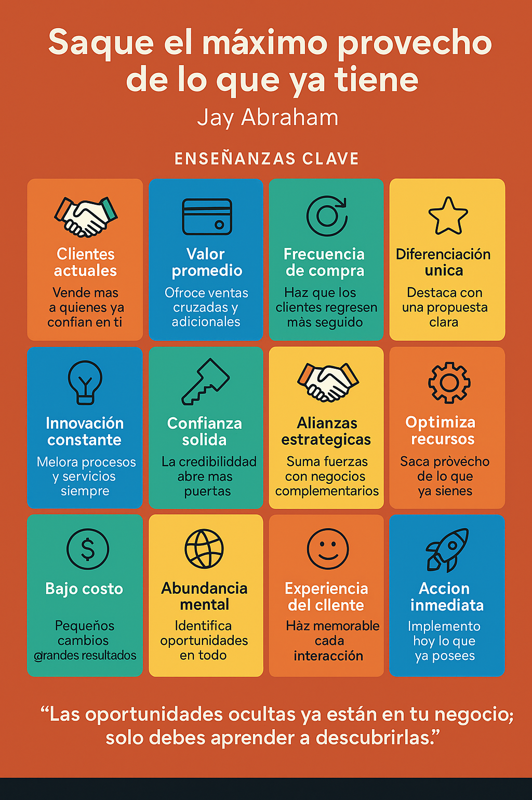
orador 1: Bienvenidos a Conecta y Lidera. Soy Ana y me acompaña Carlos. Hoy analizaremos un libro fundamental para entender no solo el arte de vender, sino también cómo influimos, persuadimos y conectamos con los demás: "La psicología de las ventas" de Brian Tracy. Un clásico que nos muestra que vender es, ante todo, un proceso mental. Y como veremos a lo largo de este episodio, muchas de sus enseñanzas aplican directamente al liderazgo, la comunicación efectiva y la gestión del cambio en equipos humanos.
orador 2: Así es, Ana. Brian Tracy, uno de los grandes referentes en desarrollo personal y ventas, plantea en este libro que todo comienza con la mente del vendedor. Si crees en ti, en tu producto y en el valor que aportas, puedes vender con confianza, con autenticidad y con resultados. Pero si tienes dudas internas, estas se reflejarán en cada conversación. Esta premisa es igualmente poderosa para los líderes: la convicción interna determina la influencia externa. Un liderazgo fuerte nace de una autopercepción positiva.
orador 1: Exacto. Tracy insiste en que la venta es 80% actitud y 20% técnica. Y eso aplica directamente al liderazgo. Liderar también es influir, también es generar confianza, también es motivar. Por eso, entender la psicología que hay detrás de una interacción efectiva nos da una ventaja competitiva enorme. La forma en que pensamos antes de hablar, cómo nos sentimos antes de presentarnos, afecta profundamente el impacto que generamos. Un líder mentalmente preparado contagia dirección y seguridad.
orador 2: Un punto que me pareció clave es que los mejores vendedores hacen preguntas, no solo presentan argumentos. Escuchan activamente, descubren necesidades reales y adaptan su propuesta. En el liderazgo, esto se traduce en dejar de imponer y empezar a indagar. Preguntar más, hablar menos, y sobre todo, escuchar mejor. Un líder que pregunta con intención y escucha con empatía, entiende mejor a su equipo, puede anticipar conflictos y construir soluciones que generen compromiso auténtico.
orador 1: Y algo fundamental es el control emocional. Tracy dice que los grandes vendedores aprenden a manejar el rechazo, la incertidumbre y la presión. En liderazgo, esto es igual. Un líder que no gestiona bien sus emociones transmite ansiedad, inseguridad o reactividad. En cambio, cuando lideramos desde la calma, desde la claridad, inspiramos confianza. La inteligencia emocional es una habilidad que eleva tanto las ventas como la capacidad de guiar personas en momentos de crisis o incertidumbre.
orador 2: Otro aspecto poderoso es la importancia de la preparación mental. Visualizar el éxito, repetir afirmaciones positivas, entrar en cada conversación con intención clara. Esto que puede sonar simple, tiene un impacto enorme. Un líder preparado mentalmente tiene más claridad, más energía y más influencia. Además, cultiva la resiliencia: sabe levantarse después de cada fracaso o desafío. La mentalidad adecuada no solo mejora los resultados, sino que sostiene la consistencia en el largo plazo.
orador 1: Tracy también habla del poder del entusiasmo. Dice que el entusiasmo es contagioso, y que si tú no estás emocionado por lo que ofreces, es imposible que los demás lo estén. En el liderazgo ocurre exactamente lo mismo: un líder que transmite pasión y convicción en su visión puede movilizar equipos enteros. Pero uno que lidera sin emoción, rara vez genera compromiso genuino. La pasión, canalizada con claridad, se convierte en un motor colectivo.
orador 2: Otro tema central es el lenguaje corporal. Tracy enseña que tu cuerpo comunica tanto como tus palabras. Postura, tono de voz, contacto visual, gestos... todo influye en cómo te perciben. Como líderes, ser conscientes de nuestro lenguaje no verbal es fundamental. Podemos decir que confiamos en nuestro equipo, pero si lo decimos cruzando los brazos o mirando el reloj, el mensaje no se sostiene. La coherencia entre lo verbal y lo no verbal refuerza o debilita nuestro liderazgo.
orador 1: También destaca la importancia de entender el miedo al rechazo. Tracy explica que muchas personas fracasan en ventas porque temen el no, y ese miedo paraliza. En liderazgo, el miedo al conflicto, al rechazo o a la crítica también puede limitar nuestra capacidad de actuar. Por eso, aprender a convivir con la incomodidad, sin que esta nos detenga, es una lección transversal a ambos mundos. Solo cuando enfrentamos ese miedo, podemos liderar con libertad y convicción.
orador 2: Un aspecto complementario muy relevante es el valor del seguimiento. Tracy enseña que los vendedores exitosos no se rinden tras un primer intento. En liderazgo, dar seguimiento a conversaciones importantes, mantener abiertas las líneas de comunicación y mostrar interés sostenido, es clave para construir relaciones duraderas. El seguimiento crea continuidad emocional y estratégica.
orador 1: Tracy también resalta la importancia de la preparación profesional constante. Los mejores vendedores se entrenan, se actualizan, leen, escuchan, practican. En liderazgo ocurre lo mismo. Un líder que se forma, que busca mejorar cada día, es un ejemplo vivo de crecimiento. Este libro nos recuerda que el liderazgo no es un destino, es un proceso continuo de desarrollo personal y profesional.
orador 2: Finalmente, Tracy insiste en la necesidad de desarrollar una mentalidad ganadora. Reprogramar nuestra mente con pensamientos positivos, cultivar la autoconfianza, actuar con intención y propósito. Esta mentalidad no solo mejora los resultados en ventas, sino que construye líderes más seguros, coherentes y efectivos. La psicología del éxito empieza con la psicología de uno mismo. Cambiar el diálogo interno puede cambiar toda nuestra realidad externa.
orador 1: En resumen, "La psicología de las ventas" no es solo un libro para vendedores, sino una guía de influencia humana. Nos recuerda que el éxito en cualquier interacción depende más de nuestro estado interno que de nuestras palabras. Y que influir, inspirar y conectar comienza con nuestra propia actitud, con nuestro pensamiento, con nuestra presencia. Es una lectura esencial para quienes lideran equipos, proyectos o transformaciones.
orador 2: Gracias por acompañarnos en este episodio de Conecta y Lidera. Esperamos que este repaso por las ideas de Brian Tracy te motive a revisar tu mentalidad, tu forma de comunicar y tu enfoque de influencia. Si vendes una idea, un proyecto o una visión, este libro tiene algo que ofrecerte. Y si lideras a personas, mucho más.
orador 1: Hasta la próxima. Y recuerda: vender y liderar tienen algo en común, ambos comienzan en la mente. Lo que crees sobre ti y sobre los demás define lo que puedes lograr. Tu diálogo interno es el punto de partida de toda gran conversación externa.
1. Mentalidad positiva 🌞
Tu actitud define tu éxito en ventas.
2. Autoconfianza 💪
Cree en ti para inspirar confianza en otros.
3. Metas claras 🎯
Define objetivos específicos y medibles.
4. Conocimiento del producto 📘
Domina lo que vendes para transmitir seguridad.
5. Empatía con el cliente 🤝
Escucha y comprende sus verdaderas necesidades.
6. La primera impresión 👔
Los primeros segundos son decisivos.
7. Lenguaje corporal 🧍
Comunica confianza y apertura sin palabras.
8. Preguntas inteligentes ❓
Descubre lo que el cliente realmente desea.
9. Escucha activa 👂
Presta atención genuina para generar conexión.
10. Manejo de objeciones 🛡️
Convierte dudas en oportunidades de cierre.
11. Beneficios, no características 💡
Vende soluciones, no descripciones técnicas.
12. Técnica del cierre 🔑
Invita al cliente a tomar acción ahora.
13. Persistencia 🔄
El éxito en ventas requiere perseverancia.
14. Servicio postventa 📞
Cuidar al cliente después asegura lealtad.
15. Aprendizaje constante 📚
Mejora habilidades y adapta estrategias siempre.
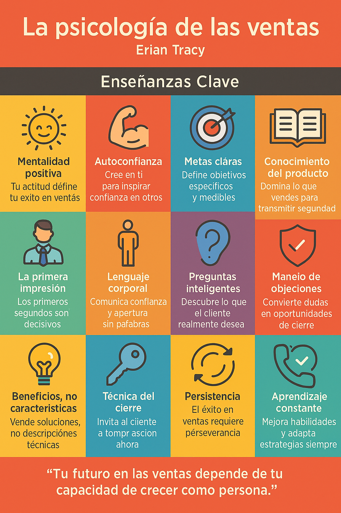
orador 1: Bienvenidos a Conecta y Lidera. Soy Ana y me acompaña Carlos. Hoy vamos a explorar un libro provocador, práctico y altamente estratégico: "Presente con poder" de Oren Klaff. Un libro que va más allá de presentar ideas; se trata de dominar el arte de captar y mantener la atención en los momentos decisivos. Una obra esencial para líderes, emprendedores, docentes, ejecutivos y cualquier persona que deba influir, convencer y comunicar con impacto. Porque en un mundo donde la atención es escasa, saber presentarse bien es un diferencial real.
orador 2: Así es, Ana. Klaff, experto en levantar millones en rondas de inversión, plantea que el éxito de un pitch no depende solo del contenido, sino de cómo lo encuadras y controlas la interacción. Su enfoque combina neurociencia, psicología y experiencia en negociaciones de alto nivel. En lugar de rogar por atención, nos enseña a manejar el "marco" de la conversación y posicionarnos como la parte dominante. Liderar es también dirigir la dinámica emocional de una interacción, y saber cuándo empujar, cuándo soltar y cómo mantener la atención viva.
orador 1: Uno de los conceptos centrales del libro es el "frame" o marco. Klaff dice que en toda interacción hay un juego de marcos: quien impone su marco controla la conversación. Puede ser el marco del poder, del tiempo, de la escasez o de la autoridad. El líder efectivo sabe identificar estos marcos y reposicionarlos para no perder control ni influencia. Y, sobre todo, aprende a hacerlo sin necesidad de confrontación directa, sino con inteligencia contextual. Esto convierte cada presentación o reunión en una negociación de percepciones.
orador 2: Exacto. Por ejemplo, si estás haciendo una presentación y alguien cuestiona tu experiencia, ese es un marco de desafío. Klaff enseña que no hay que justificarse, sino cambiar el marco. En vez de caer en defensa, puedes responder con humor, autoridad o incluso redirigiendo la atención. En liderazgo esto se traduce en no ceder terreno psicológico en reuniones críticas, y en saber cuándo marcar límites sin entrar en confrontaciones innecesarias. Es entrenar la capacidad de redirigir el foco sin perder firmeza ni respeto.
orador 1: Otro punto clave es que la atención humana es limitada y frágil. Klaff explica que el cerebro reptiliano de nuestro interlocutor decide en segundos si lo que decimos es una amenaza, una oportunidad o irrelevante. Por eso, tenemos que empezar fuerte, con un "hot start" que genere tensión positiva, curiosidad y autoridad. Un líder que comienza sus reuniones con claridad, energía y foco, capta más atención que uno que divaga. En contextos de sobrecarga informativa y fatiga digital, captar atención es una ventaja estratégica.
orador 2: También es fundamental la estructura STRONG que Klaff propone para cualquier pitch exitoso: Setting the frame, Telling the story, Revealing the intrigue, Offering the prize, Nailing the hookpoint y Getting a decision. Esta fórmula no solo organiza el contenido, sino que guía el flujo emocional del oyente. Como líderes, podemos usar esta estructura para presentar ideas, comunicar cambios, defender propuestas o incluso influenciar decisiones. STRONG es una hoja de ruta para persuadir con intención y elegancia.
orador 1: Algo que me parece brillante es cómo aborda la tensión. Klaff dice que un poco de tensión mantiene la atención y eleva el interés. Demasiada comodidad lleva al aburrimiento. En liderazgo, esto se traduce en encontrar el equilibrio entre cercanía y desafío, entre seguridad psicológica y exigencia. No se trata de ser agresivos, sino de mantener a las personas emocionalmente involucradas. La tensión bien manejada despierta interés, agudiza la percepción y enfoca la conversación.
orador 2: Y el tema de la escasez también es central. Klaff advierte contra parecer demasiado disponible. Si un líder siempre está diciendo que sí, que tiene tiempo ilimitado o que su visión puede ser cambiada por cualquier sugerencia, pierde poder. La escasez bien manejada genera respeto. Es saber poner límites sin perder conexión. La autoridad también se construye mostrando que tu tiempo y atención son valiosos, y que los recursos que ofreces no están disponibles para cualquiera en cualquier momento.
orador 1: Otro aporte interesante del libro es cómo manejar las decisiones finales. Klaff recomienda evitar pedir decisiones en ambientes saturados, y sugiere crear una tensión que obligue a elegir. En el liderazgo, esto significa que no siempre hay que dejar las cosas abiertas: a veces hay que pedir compromiso, cerrar ciclos y generar decisiones claras que empujen a la acción. Un pitch poderoso siempre busca una acción concreta, no solo reconocimiento o aprobación.
orador 2: Klaff también rompe con la idea de que el cliente o el receptor siempre tiene el poder. En cambio, enseña a reposicionar la conversación para que seas tú quien lidera el proceso. Esto es especialmente útil en liderazgo cuando se trata de negociaciones internas, de defender una iniciativa o incluso de corregir una dinámica de poder desigual en el equipo. Saber sostener el marco sin imponerse, sino guiando, es una habilidad que define a los líderes influyentes.
orador 1: Además, Klaff enfatiza la importancia del control de la narrativa. No se trata solo de contar una historia, sino de diseñarla con precisión. Una historia bien estructurada no solo informa, sino que transporta emocionalmente. Y el liderazgo narrativo se basa en eso: construir relatos que hagan visible el futuro, que movilicen a la acción y que alineen emociones con visión. Contar bien lo que hacemos cambia cómo somos percibidos.
orador 2: En resumen, "Presente con poder" nos da una perspectiva poderosa sobre cómo liderar conversaciones importantes. No se trata de convencer por lógica, sino de dominar el entorno emocional y perceptivo donde ocurre la interacción. El verdadero liderazgo no solo informa, transforma. Y esta transformación comienza por entender cómo se mueve el poder en una conversación, cómo se encuadra la realidad y cómo se gestiona la energía en una sala.
orador 1: Gracias por acompañarnos en este episodio de Conecta y Lidera. Esperamos que esta conversación sobre el libro de Oren Klaff te haya dado herramientas prácticas para tus próximas presentaciones, reuniones o decisiones clave. Recuerda que quien domina el marco, domina la conversación, y que liderar con impacto es también liderar con estructura, enfoque y claridad emocional.
orador 2: Hasta la próxima. Y recuerda: no se trata solo de lo que dices, sino de cómo encuadras lo que dices. El marco correcto cambia el juego. Y en liderazgo, saber presentar con poder es una competencia que se entrena, se mejora y se convierte en una ventaja incomparable.
1. Controla el marco 🖼️
Quien controla el marco, controla la reunión.
2. Establece estatus 👑
Muéstrate como autoridad en tu campo.
3. Evita la necesidad 🚫
Nunca transmitas desesperación por vender.
4. Intriga inicial 🎭
Capta la atención desde los primeros segundos.
5. Historias poderosas 📖
Cuenta relatos breves que enganchen.
6. Mensaje simple ✍️
Lo claro convence más que lo complejo.
7. Evita datos excesivos 📊
Demasiada información aburre y desconecta.
8. Lenguaje corporal firme 💪
Tu postura comunica seguridad.
9. Maneja la resistencia 🛡️
Anticipa objeciones y neutralízalas con calma.
10. Gana curiosidad 🤔
Haz que el otro quiera saber más.
11. Control del tiempo ⏳
Sé breve y deja siempre con ganas.
12. Dominio emocional ❤️
Transmite pasión sin perder el control.
13. Reversa de poder 🔄
Haz que el inversor o cliente te persiga.
14. Cierre fuerte 🔑
Conduce la presentación a una acción clara.
15. Practica sin descanso 🏋️
La maestría llega con preparación continua.
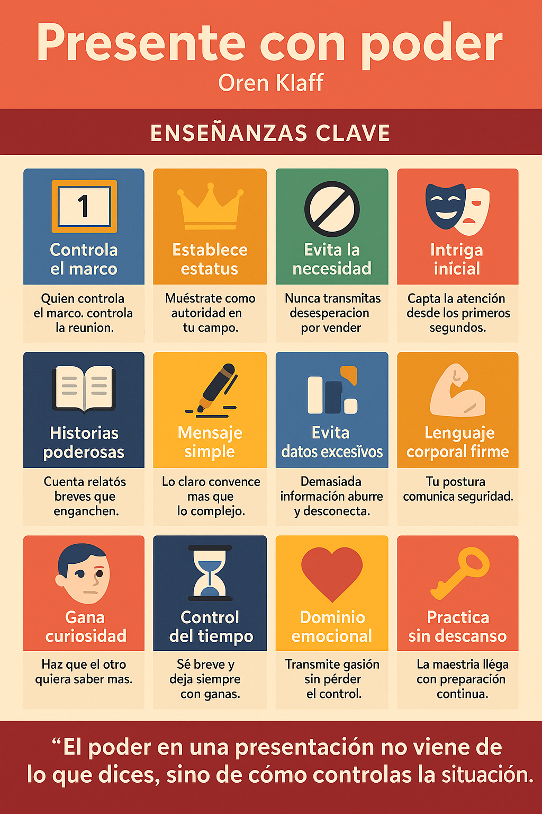
orador 1: Bienvenidos a Conecta y Lidera. Soy Ana y me acompaña Carlos. Hoy traemos un libro práctico, lleno de estrategias y con un enfoque que mezcla disciplina, enfoque y eficiencia. Hablamos de "La máquina definitiva de ventas" de Chet Holmes. Un manual no solo para vendedores, sino para cualquier líder que quiera escalar resultados de forma consistente y sostenible. Este libro no es solo sobre ventas, es sobre cómo convertir tu negocio o tu equipo en una estructura altamente productiva, centrada y eficaz, en la que cada engranaje funcione con precisión.
orador 2: Así es, Ana. Chet Holmes fue un consultor de negocios y experto en ventas que trabajó con grandes empresas como Oracle. En este libro, nos comparte 12 estrategias clave que, bien aplicadas, pueden transformar un negocio. Pero lo interesante es que estas estrategias no se basan solo en cerrar más ventas, sino en construir una organización que funcione como una máquina bien aceitada. Es un libro que habla tanto de sistemas como de mentalidad, de excelencia operacional y de liderazgo efectivo. Todo empieza por la capacidad de crear una cultura enfocada en la ejecución implacable.
orador 1: Uno de los principios más repetidos por Holmes es el "enfoque constante en la mejora constante". Es decir, trabajar de manera obsesiva en perfeccionar cada área del negocio o equipo. Esto se aplica perfectamente al liderazgo. Un líder que mejora continuamente procesos, habilidades de su equipo, comunicación y estrategia, genera una cultura de excelencia que se contagia. Holmes habla de enfocarse intensamente en pocas cosas clave, y hacerlas extraordinariamente bien. Esta idea rompe con la mentalidad multitarea y promueve la priorización radical.
orador 2: Otro punto clave es la gestión del tiempo. Holmes dice que la mayor parte de los gerentes y líderes pierden el control de su agenda. Propone un sistema que prioriza lo importante sobre lo urgente. Como líderes, esto significa aprender a proteger bloques de tiempo para las actividades que realmente mueven la aguja: pensar, planificar, capacitar al equipo y revisar estrategias. Holmes incluso habla de dedicar al menos una hora diaria a actividades estratégicas, pase lo que pase, como un compromiso inquebrantable con la mejora sostenida. No se trata solo de organizar el tiempo, sino de blindarlo contra la distracción crónica.
orador 1: También me gustó su enfoque sobre la capacitación. Holmes dice que el entrenamiento constante y estructurado del equipo es una de las ventajas competitivas más subestimadas. Muchas empresas capacitan al inicio y luego lo abandonan. Pero él propone un sistema semanal, con temas críticos que se repiten hasta que se dominan. Esto construye competencia, confianza y, sobre todo, consistencia en el desempeño. Una empresa que entrena bien, compite mejor. Un equipo que entrena semanalmente, actúa con más cohesión, creatividad y precisión.
orador 2: Otro concepto potente es el de "educar al cliente". En lugar de perseguir con ventas agresivas, Holmes propone posicionarse como experto. Crear materiales, presentaciones y argumentos que enseñen al cliente algo nuevo sobre su industria o problema. Esto genera autoridad, confianza y diferenciación. Y como líderes, también educamos: a nuestro equipo, a nuestros socios, a quienes lideramos. Educar posiciona, conecta y transforma. Nos volvemos guías en lugar de solo transmisores de tareas.
orador 1: Un capítulo importante del libro es el de crear un sistema de seguimiento y persistencia. Holmes dice que la mayoría de los vendedores se rinden después de 2 o 3 intentos, cuando las grandes oportunidades suelen concretarse después del 8.º o 10.º contacto. En liderazgo, esto también aplica: muchas veces abandonamos procesos o relaciones clave por falta de persistencia estratégica. Construir una cultura de seguimiento es construir una cultura de compromiso. Y esto implica usar métricas claras, rituales de seguimiento y conversaciones de responsabilidad continua.
orador 2: También hay un énfasis fuerte en la preparación. Holmes dice que una de las causas principales del fracaso en ventas es la improvisación. Y eso mismo podríamos decir del liderazgo. Prepararse para reuniones, para decisiones, para conversaciones difíciles, hace una gran diferencia. Un líder que se prepara transmite respeto, claridad y profesionalismo. Y ese hábito de preparación se traslada a todo el equipo. El resultado es un entorno de alto rendimiento donde cada interacción tiene intención.
orador 1: Holmes también habla de la importancia de dominar el arte de la presentación. Cada líder debe aprender a presentar ideas con claridad, estructura y entusiasmo. No se trata solo de hablar bien, sino de conectar emocionalmente, de mover a la acción y de transmitir autoridad. Una presentación mediocre puede arruinar una gran idea. Una gran presentación puede transformar una organización. Holmes incluso recomienda tener presentaciones maestras que se perfeccionan, se miden y se repiten con ajustes constantes, hasta convertirlas en herramientas poderosas de influencia.
orador 2: Otro punto fundamental es el dominio de las métricas. Holmes sostiene que lo que no se mide no se puede mejorar. Cada sistema debe tener indicadores, revisiones semanales, ajustes proactivos. Un líder que domina sus métricas no solo conoce su negocio, sino que anticipa oportunidades y riesgos. Convertir al equipo en una unidad que sabe leer sus propios datos es empoderarlos para actuar con autonomía y responsabilidad.
orador 1: En resumen, "La máquina definitiva de ventas" es un libro que mezcla estrategia, disciplina y liderazgo. Nos recuerda que los grandes resultados no vienen de hacer más cosas, sino de hacer las cosas correctas, una y otra vez, con excelencia. Nos enseña que no se trata de talento individual, sino de construir una cultura sistemática de mejora, foco y acción disciplinada. Es un manifiesto de ejecución empresarial que inspira tanto a líderes operativos como estratégicos.
orador 2: Gracias por acompañarnos en este episodio de Conecta y Lidera. Esperamos que este recorrido por las ideas de Chet Holmes te inspire a crear tu propia máquina de resultados sostenibles. No se trata de acelerar sin rumbo, sino de avanzar con dirección, método y liderazgo consciente. Recuerda que los grandes negocios y equipos no se improvisan, se diseñan y se refinan con constancia.
orador 1: Hasta la próxima. Y recuerda: un líder no improvisa, construye. Y para construir, se necesita enfoque, sistema y acción disciplinada. Eso es lo que convierte una organización común en una máquina de resultados extraordinarios, donde el rendimiento no depende de la suerte, sino del diseño.
1. Disciplina constante ⏱️
El éxito nace de hábitos diarios.
2. Gestión del tiempo 📅
Prioriza lo importante sobre lo urgente.
3. Foco en lo esencial 🎯
Haz pocas cosas, pero bien.
4. Capacitación continua 📚
Entrena siempre a tu equipo.
5. Investigación del mercado 🌍
Conoce clientes y competidores.
6. Educación del cliente 🧠
Aporta valor antes de vender.
7. Marketing efectivo 📢
Mensajes claros y diferenciados.
8. Proceso repetible 🔄
Sistemas que puedan escalarse.
9. Presentaciones poderosas 🖼️
Historias que emocionen y persuadan.
10. Seguimiento disciplinado 📞
La persistencia cierra ventas.
11. Cierre estratégico 🔑
Lleva al cliente a decidir.
12. Mejora continua ⚙️
Refina procesos siempre.
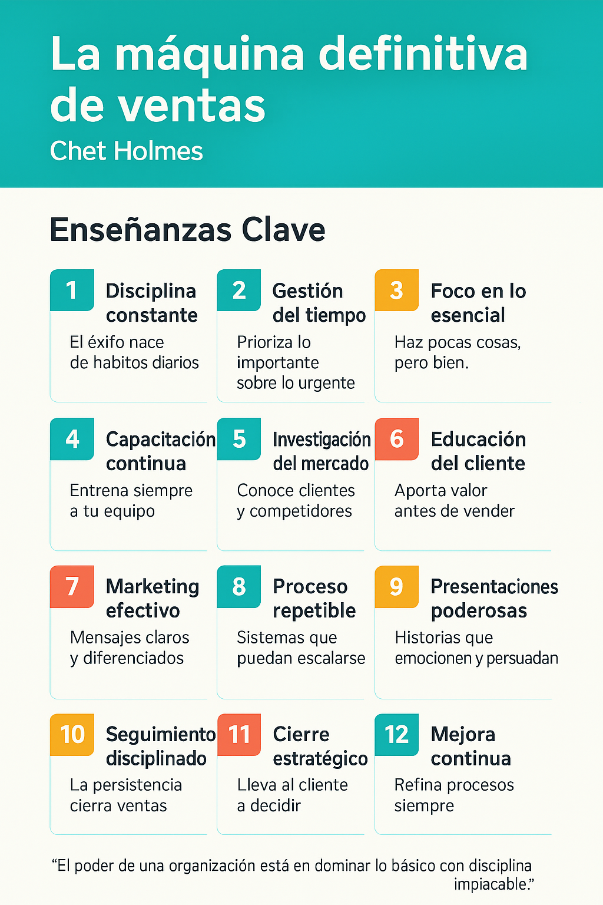
orador 1: Bienvenidos a Conecta y Lidera. Soy Ana y me acompaña Carlos. Hoy vamos a explorar un libro que cambia radicalmente la manera en que pensamos sobre el valor, el precio y nuestra influencia como profesionales. Hablamos de "Honorarios basados en el valor" de Alan Weiss. Un libro esencial para consultores, coaches, líderes, emprendedores y cualquier persona que ofrezca servicios y busque maximizar su impacto, posicionamiento y rentabilidad. Este libro no solo cuestiona cómo cobramos, sino cómo nos posicionamos ante los clientes, cómo entendemos nuestro aporte y cómo lideramos nuestras conversaciones profesionales desde una base de convicción y resultados.
orador 2: Así es, Ana. Weiss parte de una premisa contundente y transformadora: los honorarios no deben basarse en el tiempo que trabajamos, sino en el valor que creamos. Esta idea desafía la lógica tradicional del precio por hora o por proyecto, y nos invita a poner el foco en el impacto tangible e intangible que generamos en nuestros clientes. En el mundo del liderazgo, esta es una lección clave: el valor que aportamos debe medirse por resultados, no por esfuerzo ni por horas de trabajo acumuladas. Liderar no es estar ocupado, es provocar transformación efectiva y medible.
orador 1: Weiss insiste en que cuando cobramos por tiempo, nos convertimos en commodities fácilmente reemplazables. Pero cuando cobramos por valor, nos posicionamos como socios estratégicos, como agentes de cambio. Este cambio de mentalidad requiere confianza personal, claridad estratégica y una profunda comprensión del problema que resolvemos y del impacto que provocamos. En liderazgo, esto se traduce en aprender a comunicar el valor de nuestras ideas, propuestas o proyectos de forma que el beneficio sea evidente, cuantificable y percibido como indispensable.
orador 2: El libro también pone un gran énfasis en lo que Weiss llama "la conversación de valor". Vender no es empujar una oferta, sino educar. Antes de hablar de precios, debemos ayudar al cliente a reconocer el problema que tiene, el costo de no resolverlo y el impacto que tendría solucionarlo. Como líderes, también vendemos: vendemos ideas, visiones, transformaciones, decisiones difíciles. Si logramos que nuestro equipo entienda el valor estratégico de lo que proponemos, la adhesión, el compromiso y la ejecución se fortalecen enormemente.
orador 1: Otro punto brillante es cómo Weiss diferencia entre el valor tangible y el intangible. Lo tangible incluye el retorno económico, la eficiencia, la reducción de costos, el aumento de productividad. Lo intangible incluye la paz mental, el prestigio, la reputación, la moral del equipo, el sentido de propósito. Un gran líder sabe identificar, construir y comunicar ambos tipos de valor. No todo se trata de números. De hecho, muchas veces el valor más profundo es el que no se puede medir directamente, pero se siente en la cultura, en la energía y en la confianza colectiva.
orador 2: Weiss también aborda un tema delicado: el miedo a hablar de dinero. Muchos profesionales se sienten incómodos al presentar sus tarifas o defender su precio. Pero si realmente creemos en el valor que aportamos, no deberíamos tener problema alguno en pedir una compensación justa. Esta es una lección de autoestima profesional y también de liderazgo: debemos valorar nuestro aporte y enseñarle a nuestro equipo a hacer lo mismo. El valor empieza por cómo lo percibimos nosotros mismos. Si no creemos que merecemos un lugar estratégico en la conversación, difícilmente lo obtendremos.
orador 1: Un concepto especialmente poderoso es el de "valor percibido". No basta con generar valor, hay que saber comunicarlo con precisión, empatía y estrategia. Weiss nos invita a desarrollar un lenguaje orientado a resultados, a usar historias de impacto, ejemplos concretos y a conectar emocionalmente con quien escucha. En liderazgo, esto es fundamental: si no logramos que nuestro equipo, nuestros socios o nuestra audiencia perciban el valor real de nuestras decisiones o acciones, perderemos alineación, energía e influencia.
orador 2: También hay una parte muy práctica y útil en el libro donde Weiss enseña cómo estructurar propuestas de alto valor. Propone dejar atrás los informes interminables llenos de tecnicismos, y enfocarse en lo que realmente importa: los beneficios, los resultados esperados y el valor de la transformación. Esto es muy útil para líderes que deben presentar proyectos, defender presupuestos, lanzar nuevas iniciativas o gestionar el cambio. Lo importante no es cuántas páginas tiene tu propuesta, sino cuán clara y poderosa es la promesa de impacto que contiene.
orador 1: Otra lección clave es que la simplicidad comunica poder. Una propuesta clara, directa y centrada en el valor genera más confianza que una llena de datos y complicaciones innecesarias. Weiss insiste en que el profesional de alto nivel debe tener la capacidad de simplificar sin banalizar. Y esto también es liderazgo: simplificar la complejidad para que otros puedan actuar con claridad y convicción.
orador 2: Weiss también nos invita a definir claramente qué significa "valor" para cada cliente o stakeholder. Porque el valor no es universal. Cambia según la industria, el contexto, los objetivos y las prioridades de quien está al otro lado. Por eso, liderar con valor implica preguntar más, escuchar más y adaptar nuestra propuesta al problema real, no solo al síntoma. Eso distingue a los líderes transaccionales de los transformacionales.
orador 1: En resumen, "Honorarios basados en el valor" no es solo un libro sobre cómo cobrar más. Es una filosofía de posicionamiento profesional, de conversación estratégica, de liderazgo auténtico. Nos recuerda que el liderazgo también se ejerce en cómo defendemos nuestro valor, cómo comunicamos nuestras ideas y cómo transformamos problemas en oportunidades sostenibles. Es una llamada a dejar de competir por precio y empezar a competir por impacto.
orador 2: Gracias por acompañarnos en este episodio de Conecta y Lidera. Esperamos que las ideas de Alan Weiss te ayuden a redefinir tu enfoque, tu impacto y tu forma de comunicar lo que vales. Recuerda que cuando tú crees en tu valor, los demás también lo hacen. Tu precio no debe ser una excusa, debe ser una declaración de valor.
orador 1: Hasta la próxima. Y recuerda: cuando lideras con valor, el precio se vuelve una consecuencia, no una barrera. El verdadero liderazgo comienza por el valor que eres capaz de crear, comunicar, sostener y defender con confianza, claridad y propósito.
1. Valor sobre tiempo ⏱️
Cobra por resultados, no por horas.
2. Mentalidad abundante 🌍
Siempre hay más clientes y opciones.
3. Confianza primero 🤝
Relaciones sólidas justifican tarifas altas.
4. Conversación de valor 💬
Habla de beneficios, no de precios.
5. Resultados medibles 📊
Muestra impacto en números claros.
6. Diferenciación única 🌟
Haz visible lo que te distingue.
7. Posicionamiento premium 👑
No compitas en precio, compite en valor.
8. Elimina horas 🚫
El tiempo no mide transformación.
9. Escucha activa 👂
Detecta necesidades reales del cliente.
10. Propuestas simples 📑
Breves y centradas en beneficios.
11. Riesgo compartido ⚖️
Vincula tu éxito al del cliente.
12. Educación constante 📚
Haz que el cliente vea tu valor.
13. Confianza en tarifas 💪
Defiende tu precio con seguridad.
14. Clientes correctos 🎯
Elige quienes valoren la transformación.
15. Creación de impacto 💥
Mide tu éxito por el cambio generado.
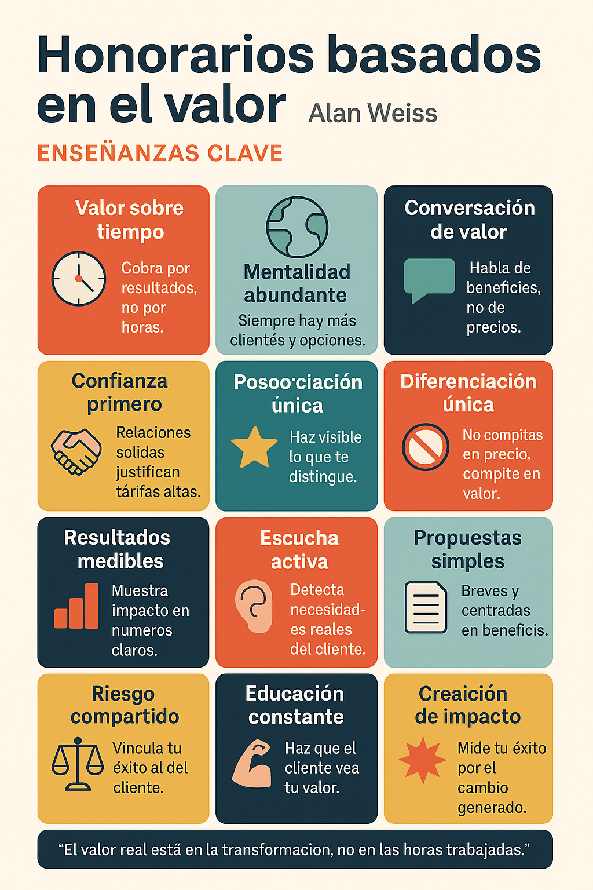
orador 1: Bienvenidos a Conecta y Lidera. Soy Ana y me acompaña Carlos. Hoy exploramos un libro que revolucionó la manera de entender la venta consultiva y que tiene implicaciones profundas para el liderazgo transformacional: "La venta SPIN" de Neil Rackham. Un enfoque basado en evidencia empírica, investigaciones extensas y aplicado con éxito en miles de organizaciones a nivel global. Este método ha demostrado ser especialmente efectivo en ventas complejas y de alto valor, donde la comprensión profunda del cliente, la empatía y la estrategia marcan la diferencia.
orador 2: Así es, Ana. Este libro parte de un extenso estudio de más de 35,000 llamadas de ventas en 23 países. Lo fascinante es que Rackham no se basa en teorías, sino en datos reales obtenidos a lo largo de años de investigación. A diferencia de los enfoques tradicionales de venta, que priorizan técnicas de cierre agresivo, Rackham descubrió que estas tácticas son contraproducentes en entornos donde las decisiones son complejas, con múltiples partes interesadas y grandes inversiones involucradas. "La venta SPIN" se centra en construir valor a través de preguntas estratégicas, entendimiento profundo del cliente y una lógica consultiva que crea relaciones de confianza.
orador 1: SPIN es un acrónimo que representa las cuatro etapas clave en una conversación efectiva: Situación, Problema, Implicación y Necesidad de solución. Este método ha sido adoptado no solo por vendedores, sino también por líderes de equipos, coaches, gerentes de proyecto y profesionales que desean influir de manera ética, empática y efectiva. Su utilidad va más allá de las ventas: SPIN es una forma de pensar, de comunicarse y de liderar con intención.
orador 2: Empecemos con la "S" de Situación. Aquí el objetivo es obtener datos relevantes. ¿Cuál es el contexto del cliente? ¿Qué herramientas usan? ¿Cómo está estructurado su equipo? En liderazgo, este tipo de preguntas también nos ayuda a entender la realidad de nuestro equipo, antes de emitir juicios o proponer soluciones. Conocer la situación nos permite construir sobre hechos, no sobre suposiciones. Y esto es vital para generar confianza, establecer credibilidad y demostrar que realmente escuchamos antes de actuar.
orador 1: Luego vienen las preguntas de Problema. Aquí buscamos descubrir dificultades, obstáculos, puntos débiles que podrían estar afectando los resultados. En lugar de presentar una solución inmediata, el enfoque SPIN nos dice: explora primero lo que no está funcionando. Los líderes efectivos hacen lo mismo. No se apresuran a resolver, sino que primero identifican con claridad dónde están los cuellos de botella. Esta fase también ayuda al equipo a reflexionar y asumir conciencia de los retos, lo que ya es un primer paso hacia la transformación.
orador 2: El tercer paso, las preguntas de Implicación, es donde el proceso se vuelve más poderoso. Rackham muestra que cuando ayudamos al cliente o al equipo a ver las consecuencias de no actuar, aumentamos su urgencia, su claridad y su compromiso. Estas preguntas revelan el costo de la inacción. Un líder que domina esta etapa logra que su equipo vea el impacto real de no cambiar, de no adaptarse, de seguir con procesos ineficientes o actitudes tóxicas. Es una forma de tocar el núcleo emocional del problema, lo que genera motivación interna y sentido de urgencia.
orador 1: Finalmente, llegamos a las preguntas de Necesidad de solución. Aquí no imponemos, sino que guiamos. Permitimos que el otro visualice cómo sería la mejora, cómo se sentiría si el problema estuviera resuelto. Es en esta etapa donde surge el deseo de cambio desde dentro. En liderazgo, este paso es crucial para que los equipos se apropien del proceso de mejora. Cuando la solución viene del equipo, el compromiso y la ejecución son más sólidos. Aquí es donde se cultiva la responsabilidad compartida.
orador 2: Algo central del modelo SPIN es que está centrado en el otro, no en el producto ni en el ego del líder. No se trata de hablar de lo que ofrecemos, sino de entender a fondo a la otra parte y construir desde ahí. Esta mentalidad consultiva es la base de un liderazgo empático, estratégico y efectivo. Es dejar de hablar para vender y empezar a escuchar para transformar. Es reemplazar el "yo tengo la respuesta" por el "quiero comprenderte a fondo".
orador 1: Además, Rackham señala que los grandes líderes y vendedores no fuerzan decisiones, sino que crean las condiciones para que el otro decida con convicción. En contextos de cambio organizacional, este principio es vital. Muchas veces, los equipos se resisten al cambio porque sienten que les imponen decisiones. El modelo SPIN permite que ellos mismos lleguen a conclusiones, lo que reduce la resistencia y aumenta el compromiso.
orador 2: Otro aspecto poderoso del enfoque SPIN es que desarrolla una cultura de pensamiento crítico. A través de sus preguntas, fomenta la reflexión, la autoconciencia y la búsqueda de soluciones sostenibles. Cuando aplicamos este enfoque como líderes, formamos equipos más autónomos, más conscientes de su entorno y más capaces de diagnosticar y resolver problemas por sí mismos. El resultado es un entorno más ágil, más resiliente y más colaborativo.
orador 1: SPIN también nos recuerda la importancia de escuchar activamente. No basta con hacer preguntas, hay que escuchar con empatía, sin interrumpir, sin juzgar. Escuchar es liderar. Y cuando un líder escucha de verdad, el equipo lo nota y responde con más apertura, más confianza y más disposición al cambio.
orador 2: En resumen, "La venta SPIN" es mucho más que un método de ventas. Es una guía para liderar conversaciones profundas, generar conciencia, despertar compromiso y facilitar decisiones estratégicas. Y como líderes, todos vendemos algo: una visión, una cultura, una transformación. Adoptar el modelo SPIN nos ayuda a liderar desde la curiosidad, la empatía y la claridad, pilares fundamentales del liderazgo contemporáneo.
orador 1: Gracias por acompañarnos en este episodio de Conecta y Lidera. Esperamos que esta conversación sobre el enfoque SPIN te motive a hacer mejores preguntas, a escuchar con más intención y a liderar desde la comprensión. Recuerda que las preguntas bien formuladas son una de las herramientas más potentes del liderazgo moderno, porque nos conectan con lo que realmente importa.
orador 2: Hasta la próxima. Y recuerda: las mejores soluciones no nacen de las respuestas, sino de las preguntas correctas. Cuando lideramos con preguntas, lideramos con respeto, estrategia e influencia real. SPIN no es solo una técnica, es una filosofía para influir con integridad.
1. SPIN = Situación, Problema, Implicación, Necesidad 🔄
El método se basa en 4 tipos de preguntas.
2. Preguntas de situación 🧾
Exploran el contexto del cliente.
3. Información clave 📊
Recolecta datos útiles para entender.
4. No abuses de situación 🚫
Haz solo las necesarias para avanzar.
5. Preguntas de problema ❓
Revelan dificultades y carencias.
6. Descubre “dolores” 💥
Identifica qué preocupa al cliente.
7. Profundiza con implicación 🔍
Explora las consecuencias de los problemas.
8. Hazlos urgentes ⏳
Muestra el costo de no resolverlos.
9. Impacto emocional ❤️
Haz que el cliente sienta la necesidad.
10. Preguntas de necesidad 🎯
Conduce hacia la solución ideal.
11. Beneficio percibido 🌟
El cliente ve tu oferta como necesaria.
12. Valor claro 💡
Muestra el beneficio de resolver el problema.
13. Vender es escuchar 👂
Más preguntas, menos discursos.
14. Evita presión 🛑
Guía, no fuerces la venta.
15. Construye confianza 🤝
El cliente debe sentirte como aliado.
16. Cierre natural 🔑
La decisión fluye tras SPIN.
17. Ventas complejas 🏢
Ideal para procesos largos y B2B.
18. Mejora constante 📚
Practica y afina preguntas siempre.
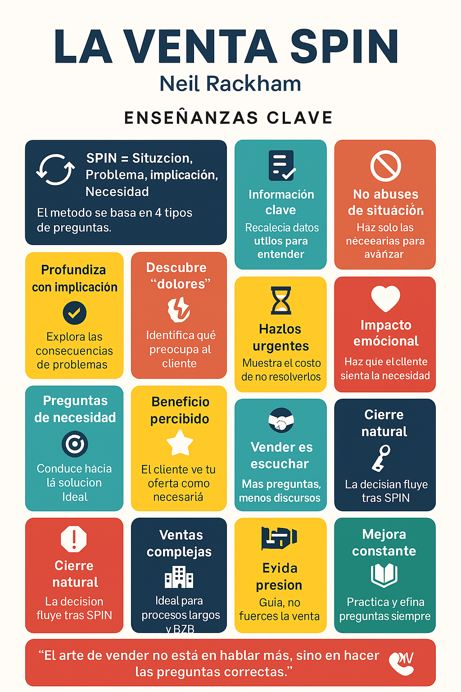
orador 1: Bienvenidos a Conecta y Lidera. Soy Ana y me acompaña Carlos. Hoy vamos a hablar de un libro que redefine lo que significa ser realmente valioso en un mundo competitivo y cambiante: "Indispensable" de Joe Calloway. Un libro dirigido a quienes quieren ser más que buenos en su trabajo: quieren ser imposibles de reemplazar. Es una lectura que desafía nuestras nociones sobre lo que realmente hace la diferencia en la forma en que trabajamos, lideramos y nos relacionamos con los demás. Y lo más importante: nos empuja a pasar de la intención a la acción diaria.
orador 2: Así es, Ana. Calloway nos plantea que no basta con cumplir, ni siquiera con destacar ocasionalmente. Ser indispensable implica crear un valor constante, sostenido y visible para los clientes, colegas o equipos. Es hacer que tu presencia marque una diferencia tangible, y que tu ausencia se note. Es convertirse en alguien que no solo hace el trabajo, sino que eleva el estándar de todos los que lo rodean. En otras palabras, ser indispensable es aportar excelencia con humildad todos los días, en todo momento.
orador 1: El libro identifica cinco cualidades clave de las personas indispensables: son confiables, enfocados, proactivos, colaborativos y consistentes. No son estrellas ocasionales, son personas que todos los días aportan valor. En liderazgo, esto nos recuerda que la verdadera influencia no se impone, se gana con acciones repetidas, con impacto real y con presencia constante. Cada una de estas cualidades se traduce en comportamientos observables: llegar a tiempo, cumplir lo que prometes, adaptarte sin quejarte, buscar soluciones antes que excusas. Son hábitos que se convierten en la base de una reputación sólida y duradera.
orador 2: Uno de los conceptos más poderosos es el de aportar valor desde la perspectiva del otro. Ser indispensable no es hacer lo que a mí me parece valioso, sino entender profundamente qué es lo que otros necesitan y cómo puedo facilitar su éxito. En el caso de los líderes, esto implica ponerse al servicio del crecimiento de su equipo y de los objetivos colectivos. Implica salir del protagonismo personal y enfocarse en empoderar, apoyar y desarrollar a quienes nos rodean. Es una mentalidad de generosidad profesional y de impacto sostenido, más allá del reconocimiento personal.
orador 1: Otro punto interesante es que las personas indispensables no son las que más hablan de sí mismas, sino las que más escuchan. Calloway insiste en la importancia de la humildad estratégica: tener la seguridad de nuestro valor sin necesidad de exhibirlo constantemente. Ser indispensable es saber cuándo hablar, cuándo actuar y cuándo simplemente estar presente para los demás. Es la capacidad de leer el ambiente, de actuar con inteligencia emocional y de saber que el liderazgo más fuerte es el que a veces no se nota, pero siempre se siente.
orador 2: También me gusta cómo el libro aborda la resiliencia y la capacidad de adaptarse. Las personas indispensables no son rígidas. Saben moverse con el cambio, responder con agilidad y mantener su nivel de contribución incluso en momentos de incertidumbre. Y eso es liderazgo en estado puro: ser una fuente de estabilidad en medio del caos. Calloway nos recuerda que en tiempos difíciles, el valor de una persona indispensable se multiplica. No solo mantiene su propio rendimiento, sino que inspira y eleva el de los demás. Se convierten en anclas emocionales y referentes de confianza.
orador 1: Además, el autor hace hincapié en la importancia de enfocarse en lo esencial. Las personas indispensables no se distraen con tareas que no suman valor. Tienen claridad sobre lo que realmente importa y dedican su energía a eso. En liderazgo, esta capacidad de enfoque es crucial: no se trata de hacer muchas cosas, sino de hacer las cosas correctas con excelencia. Ser indispensable también es saber priorizar, evitar la dispersión y enseñar al equipo a identificar lo que realmente genera impacto.
orador 2: Otro aspecto relevante es la consistencia. No se trata de tener momentos de brillantez, sino de mostrar una actitud de excelencia todos los días. La gente indispensable no depende de la motivación del día, tiene hábitos sólidos. Y esos hábitos son los que generan confianza. Porque lo que hace a alguien valioso no es lo que hace de vez en cuando, sino lo que hace siempre. La constancia crea confianza, y la confianza crea influencia.
orador 1: Calloway también nos habla de la importancia de ser parte de la solución. Las personas indispensables no se quedan en la crítica, ni se enfocan solo en los problemas. Van más allá. Detectan oportunidades, proponen alternativas y se hacen cargo del proceso de mejora. Esto es vital para cualquier líder: ser alguien que construye, que transforma, que impulsa al equipo a avanzar, incluso cuando el camino es incierto.
orador 2: Otro mensaje potente del libro es que ser indispensable no tiene que ver con ser perfecto ni con hacerlo todo. Tiene que ver con ser confiable, adaptable y comprometido. Con saber en qué momentos dar un paso al frente, y en cuáles apoyar desde atrás. Con tener la humildad para aprender, la fortaleza para sostener y la actitud para sumar, incluso cuando nadie lo está viendo. Es una filosofía de vida profesional que se nota en los detalles.
orador 1: En resumen, "Indispensable" es una invitación a dejar de buscar reconocimiento y empezar a crear impacto real. Es un llamado a convertirnos en personas que suman siempre, que elevan a los demás y que entienden que el verdadero valor no se grita, se demuestra. Nos recuerda que el liderazgo más influyente es el que se gana con consistencia, empatía y servicio. Y que en un mundo donde todos compiten por atención, quien realmente marca la diferencia es quien aporta sentido y confianza.
orador 2: Gracias por acompañarnos en este episodio de Conecta y Lidera. Esperamos que este recorrido por las ideas de Joe Calloway te inspire a ser una presencia que marque la diferencia, no solo por lo que haces, sino por cómo haces sentir y crecer a los demás. Ser indispensable no es un objetivo egoísta, es un compromiso con el impacto que dejamos en nuestro entorno. Es elegir cada día el tipo de profesional, colega y líder que queremos ser.
orador 1: Hasta la próxima. Y recuerda: en un mundo lleno de opciones, el liderazgo verdadero es el que se vuelve indispensable. No por obligación, sino por elección. Porque cuando lideras con propósito, coherencia y pasión, te vuelves esencial para quienes te rodean. No por lo que haces, sino por lo que haces posible en los demás.
1. Ser extraordinariamente bueno 🌟
La base de lo indispensable es la excelencia constante en lo que haces.
2. Enfocarse en lo esencial 🎯
Prioriza lo que realmente genera valor al cliente y elimina lo accesorio.
3. Simplificar la experiencia 🧩
Haz que interactuar contigo o con tu negocio sea fácil y agradable.
4. Crear valor único 💡
Ofrece algo que nadie más pueda igualar de la misma manera.
5. Construir confianza 🤝
La confiabilidad y la integridad son la clave de relaciones duraderas.
6. Innovar de forma práctica 🔄
Introduce mejoras continuas que impacten directamente al cliente.
7. Ser memorable 📝
Haz que tu trabajo deje huella y que los clientes quieran volver siempre.
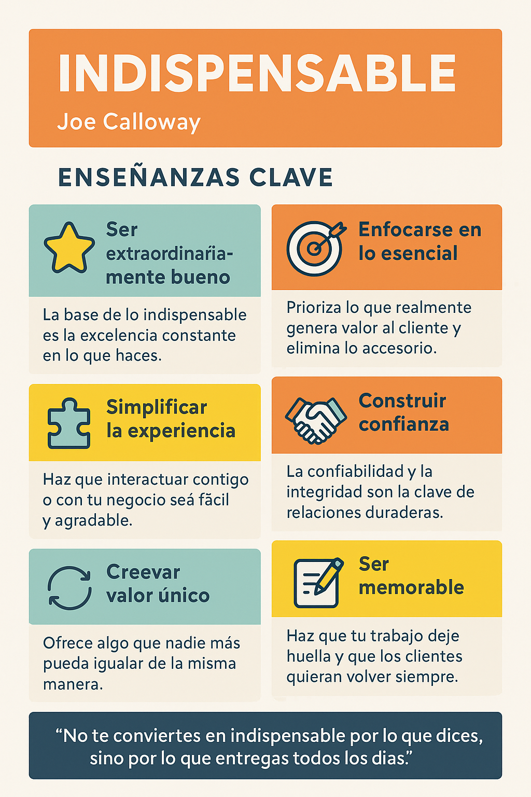
orador 1: Bienvenidos a Conecta y Lidera. Soy Ana y me acompaña Carlos. Hoy vamos a explorar un libro fascinante que combina narrativa, estrategia empresarial y pensamiento sistémico: "La meta: Un proceso de mejora continua" de Eliyahu Goldratt. No es un libro convencional de gestión; es una novela que nos lleva a través de la vida profesional y personal de un gerente de planta que debe salvar su fábrica de la quiebra, y en el camino, descubre principios clave que transforman su manera de liderar. Es una obra que ha sido reconocida mundialmente como una de las más influyentes en el ámbito de la mejora organizacional y la productividad. También ha sido adoptada en programas académicos de ingeniería, administración y liderazgo en todo el mundo.
orador 2: Así es, Ana. Lo interesante de este libro es que a través de una historia muy humana, Goldratt introduce la Teoría de las Restricciones, una herramienta poderosísima para entender cómo fluyen los procesos en una organización y cómo encontrar los verdaderos cuellos de botella que impiden el progreso. No se trata de hacer más cosas, sino de identificar lo que limita el sistema y enfocarse ahí. Es una lección fundamental para cualquier líder que busque mejorar resultados de manera sostenible, porque muchas veces la solución no es añadir más recursos, sino usar mejor los que ya tenemos. Y lo más importante: cambiar la forma de pensar antes de cambiar la estructura.
orador 1: La historia gira en torno a Alex Rogo, un gerente que se enfrenta al cierre inminente de su planta. Presionado por los resultados y con solo unos meses para revertir la situación, Alex recibe la guía de un antiguo profesor, Jonah, quien le plantea una serie de preguntas poderosas en lugar de respuestas directas. Es a través de este proceso de descubrimiento que Alex empieza a cuestionar todo: sus indicadores, sus procesos y su forma de pensar como líder. Este enfoque de liderazgo basado en preguntas es transformador porque estimula el pensamiento crítico, promueve la autonomía del equipo y fortalece la toma de decisiones basada en hechos.
orador 2: Jonah representa esa figura del mentor que no impone, sino que guía a través de la reflexión. Uno de los grandes aportes del libro es mostrarnos que mejorar un sistema no es cuestión de optimizar cada parte por separado, sino de entenderlo como un todo. Lo que Goldratt nos enseña es que la mejora continua real ocurre cuando entendemos la interdependencia entre las partes. De hecho, el libro refuerza que cualquier mejora que no se enfoque en la restricción del sistema es una ilusión de mejora. Y nos recuerda que no todo problema requiere una solución inmediata, sino una comprensión profunda primero.
orador 1: En ese proceso, Alex y su equipo descubren que el rendimiento global no mejora simplemente al mejorar áreas individuales. Por ejemplo, tener una máquina súper eficiente que produce más de lo que el siguiente proceso puede manejar, no solo no ayuda, sino que puede generar exceso de inventario y caos. Esto es muy aplicable al liderazgo: no se trata de que cada persona haga más, sino de que el equipo avance al ritmo del sistema. Goldratt redefine la eficiencia: no como máxima utilización de recursos, sino como flujo constante y balanceado. El flujo se convierte en el nuevo objetivo operativo.
orador 2: Exactamente. Y ahí entra la idea del "cuello de botella", que es cualquier recurso cuya capacidad es menor que la demanda colocada sobre él. El aprendizaje clave es que todo sistema tiene una restricción, y mejorar el rendimiento general significa identificarla y gestionarla de forma efectiva. Jonah dice: "la meta de cualquier empresa es ganar dinero". Pero lo interesante es cómo redefine los indicadores: a través del throughput (ingreso generado), el inventario y los gastos operativos. Solo mediante la mejora del throughput sin aumentar inventario ni gastos se logra una verdadera mejora de desempeño. Y esa claridad de foco cambia la conversación dentro de los equipos.
orador 1: Esto también tiene implicaciones directas para el liderazgo. Un buen líder no se enfoca solo en la productividad individual, sino en la eficiencia del conjunto. Entiende dónde están las fricciones, qué procesos están ralentizando el avance y cómo liberar la capacidad del sistema sin simplemente exigir más esfuerzo. El liderazgo sistémico es el que observa, diagnostica y actúa con inteligencia colectiva. Goldratt nos enseña que liderar no es controlar, sino facilitar el flujo de valor a través de las personas y procesos.
orador 2: Otro aspecto valioso del libro es cómo muestra la evolución del propio Alex. No solo transforma su fábrica, sino su estilo de liderazgo. Aprende a delegar, a confiar, a escuchar más a su equipo y a mirar los problemas con una mentalidad de mejora continua. No busca culpables, busca causas. Y eso lo convierte en un mejor líder, en un mentor para otros y en un modelo de cómo liderar el cambio desde la humildad. Esta transformación personal es una de las partes más poderosas del libro, porque nos recuerda que la mejora organizacional comienza con el cambio personal. Sin evolución del líder, no hay transformación duradera.
orador 1: Además, el libro introduce los cinco pasos de la mejora continua propuestos por Goldratt: identificar la restricción, explotar la restricción, subordinar todo lo demás a la restricción, elevar la restricción, y si la restricción ha sido superada, regresar al paso uno. Estos pasos forman un ciclo sin fin que alimenta el proceso de mejora continua. Es una hoja de ruta para cualquier líder que quiera generar progreso constante sin caer en la trampa de soluciones superficiales. Y es un enfoque que permite crear organizaciones más ágiles, resilientes y adaptables.
orador 2: En resumen, "La meta" no es solo una historia de negocios. Es una guía para pensar en sistemas, para liderar desde la comprensión profunda y para buscar mejoras que tengan impacto real. Nos recuerda que el liderazgo más efectivo no es el que actúa más rápido, sino el que piensa con más claridad. Que sabe dónde intervenir y por qué. Y que todo cambio significativo comienza cuando dejamos de ver los problemas como obstáculos y los empezamos a ver como oportunidades para rediseñar lo que no funciona. El pensamiento sistémico no solo mejora empresas, mejora culturas organizacionales.
orador 1: Gracias por acompañarnos en este episodio de Conecta y Lidera. Esperamos que las ideas de Eliyahu Goldratt te inspiren a mirar tu entorno con una nueva lente, identificar tus verdaderos cuellos de botella y liderar desde la mejora continua. Recuerda: los sistemas eficientes no son los que corren más rápido, sino los que fluyen mejor. Y ese flujo es el reflejo de un liderazgo inteligente y consciente.
orador 2: Hasta la próxima. Y recuerda: toda organización, todo equipo y todo líder tiene una meta. El verdadero desafío es descubrirla, mantenerla clara y alinear todo lo que haces para alcanzarla. Y cuando eso ocurre, el liderazgo se convierte en una fuerza de transformación sostenible, capaz de generar resultados duraderos y un impacto positivo real.
1. La meta central 🎯
El objetivo es ganar dinero sosteniblemente.
2. Pensamiento sistémico 🧠
Toda decisión debe evaluarse por su impacto global.
3. Teoría de restricciones (TOC) ⛓️
Un sistema es tan fuerte como su eslabón más débil.
4. Identificar el cuello de botella 🔍
Detecta el recurso que limita el rendimiento.
5. Explotar la restricción ⚙️
Aprovecha al máximo lo que ya existe.
6. Subordinar el resto 🔄
Todo debe ajustarse al ritmo del cuello.
7. Elevar la restricción 📈
Invierte para aumentar su capacidad.
8. Evita la inercia 🚫
Al resolver una, busca la siguiente.
9. Flujo antes que eficiencia 🌊
Optimiza el sistema completo, no partes aisladas.
10. Medición correcta 📊
Enfócate en throughput, inventario y gastos operativos.
11. Tiempo de ciclo ⏱️
Reducirlo mejora el flujo y la productividad.
12. Balance de capacidad ⚖️
No todas las áreas deben rendir igual.
13. Inventario controlado 📦
El exceso oculta problemas en el flujo.
14. Trabajo en equipo 🤝
La coordinación acelera mejoras.
15. Comunicación clara 💬
Compartir información evita cuellos adicionales.
16. Mejora continua ♻️
La búsqueda de restricciones nunca termina.
17. Cultura de aprendizaje 📚
El equipo debe adaptarse y crecer siempre.
18. Visión a largo plazo 🔮
Las decisiones deben sostener el futuro del negocio.
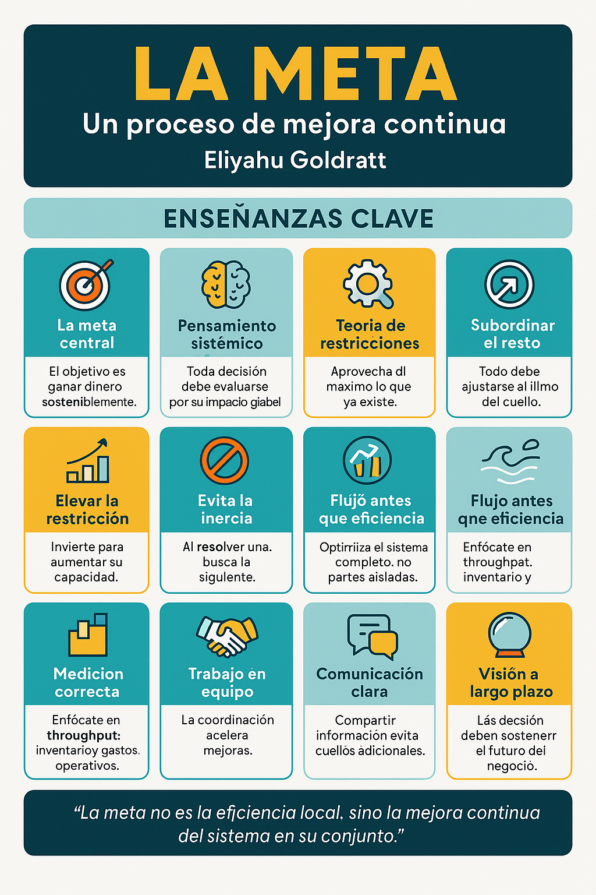
orador 1: Bienvenidos a Conecta y Lidera. Soy Ana y me acompaña Carlos. Hoy vamos a conversar sobre un libro que ha transformado profundamente la forma en que las organizaciones piensan y actúan respecto al valor, la eficiencia y la mejora continua: "Pensamiento Lean" de James Womack y Daniel Jones. Esta obra es fundamental para cualquier líder que quiera construir una cultura organizacional más ágil, centrada en el cliente y orientada a resultados reales. El pensamiento Lean se basa en la experiencia acumulada del modelo de producción de Toyota y su aplicación en múltiples sectores. No es solo una metodología de trabajo, es una forma de ver el mundo organizacional.
orador 2: Así es, Ana. "Pensamiento Lean" nos presenta cinco principios esenciales para crear valor y eliminar desperdicios en todos los procesos de una organización. Estos principios no solo aplican en fábricas, sino en oficinas, hospitales, instituciones públicas, startups y por supuesto, en el liderazgo de equipos. El pensamiento Lean busca mejorar la forma en que trabajamos, tomando decisiones más inteligentes y reduciendo todo lo que no aporta al valor final. Womack y Jones hacen énfasis en que la mentalidad Lean no es una herramienta puntual, sino una filosofía organizacional integral que transforma la cultura desde la base.
orador 1: El primer principio es definir valor desde la perspectiva del cliente. No se trata de lo que nosotros creemos que es valioso, sino de lo que el cliente realmente necesita y por lo que está dispuesto a pagar. En liderazgo, esto significa escuchar, observar y comprender profundamente qué es lo que nuestro equipo, nuestros usuarios o nuestras partes interesadas consideran verdaderamente importante. Esta visión obliga al líder a salir de su zona de confort y adoptar una postura de servicio continuo. Es dejar de asumir y empezar a validar cada paso con evidencia del entorno real.
orador 2: El segundo principio es identificar el flujo de valor, es decir, todos los pasos que se requieren para llevar un producto o servicio desde su inicio hasta el cliente. Aquí el enfoque está en eliminar los pasos que no generan valor. Esto obliga a los líderes a revisar los procesos con una mirada crítica, preguntarse qué actividades son esenciales y cuáles solo consumen recursos sin aportar. Esta revisión incluye analizar procedimientos, reportes, autorizaciones y tareas que se han perpetuado sin generar resultados. Se trata de transparentar el sistema, hacer visibles los cuellos de botella y desafiar lo que se hace "porque siempre se ha hecho así".
orador 1: El tercer principio es hacer que el valor fluya. Esto implica eliminar interrupciones, cuellos de botella, aprobaciones innecesarias y demoras operativas. Cuando aplicamos esto al liderazgo, significa facilitar que la información, las decisiones y los recursos fluyan sin trabas entre los equipos. Un líder Lean trabaja para remover obstáculos, facilitar la comunicación, establecer prioridades claras y permitir que su equipo se mueva con claridad y agilidad. Esta fluidez no solo mejora resultados, sino que reduce el estrés operativo, mejora el clima laboral y fortalece la motivación general del equipo.
orador 2: El cuarto principio es producir con base en la demanda del cliente, lo que en Lean se llama "pull". En lugar de empujar productos o decisiones sin saber si son necesarios, se espera la señal del cliente para actuar. En liderazgo, esto se traduce en liderar con sensibilidad al contexto, responder con precisión a las necesidades reales del entorno y no sobrecargar con tareas innecesarias. Significa no planificar por exceso, sino con precisión, y permitir que las iniciativas nazcan de la necesidad real y no de la intuición o la costumbre. Liderar en modo pull es liderar desde la humildad y la escucha.
orador 1: Y finalmente, el quinto principio es la búsqueda de la perfección. Pensamiento Lean nos enseña que siempre hay una forma de hacer mejor las cosas. No se trata de un destino final, sino de un compromiso constante con la mejora continua. Un líder que piensa Lean nunca se conforma: observa, experimenta, escucha, aprende y adapta. Busca la retroalimentación, mide resultados y comparte el aprendizaje con todo el equipo para multiplicar el impacto. Esta mentalidad de mejora continua es la que impulsa a las organizaciones a evolucionar con el tiempo y mantenerse relevantes.
orador 2: "Pensamiento Lean" también destaca que el cambio no se logra con discursos, sino con acción disciplinada. Requiere líderes que den el ejemplo, que trabajen en el gemba, es decir, en el lugar donde ocurre el valor. Que escuchen a quienes hacen el trabajo y construyan soluciones desde la realidad, no desde la teoría. Esto implica estar presentes, observar procesos en acción, dialogar desde el respeto con quienes ejecutan el trabajo día a día y construir confianza a través del compromiso directo.
orador 1: Otro aspecto clave del libro es la eliminación sistemática del desperdicio. Womack y Jones clasifican los tipos de desperdicio en siete grandes categorías: sobreproducción, tiempos de espera, transporte innecesario, exceso de inventario, movimientos innecesarios, reprocesos y defectos. La tarea del líder Lean es hacer visible ese desperdicio, no para culpar, sino para aprender y mejorar. Se trata de adoptar una mirada crítica pero constructiva, que involucre a todos los niveles del equipo en la búsqueda de soluciones sostenibles y colaborativas.
orador 2: Un punto especialmente relevante es cómo el pensamiento Lean fomenta la autonomía y la responsabilidad. Los autores subrayan que una organización Lean no depende de supervisores que controlen cada movimiento, sino de equipos empoderados que entienden su propósito, conocen sus métricas y tienen el permiso de mejorar continuamente su trabajo. Este empoderamiento genera una cultura de confianza, aprendizaje y compromiso, donde el liderazgo se convierte en un catalizador, no en un controlador.
orador 1: En resumen, este libro no es solo una guía para reducir desperdicios. Es un manifiesto para liderar con propósito, para enfocarse en lo esencial y para desarrollar una cultura donde cada persona se sienta parte del proceso de mejora. Pensamiento Lean nos invita a liderar con los pies en la tierra y la mirada puesta en el valor real, con la convicción de que toda organización puede evolucionar desde adentro si se compromete con lo que realmente importa. Es una filosofía de liderazgo que trasciende industrias y se adapta a cualquier entorno.
orador 2: Gracias por acompañarnos en este episodio de Conecta y Lidera. Esperamos que este recorrido por los principios del pensamiento Lean te inspire a simplificar, a eliminar lo innecesario, a escuchar con más profundidad y a liderar con más claridad y sentido. Recuerda que liderar con mentalidad Lean no es hacer menos, es hacer mejor, con más inteligencia, más empatía y más alineación con el propósito colectivo.
orador 1: Hasta la próxima. Y recuerda: el verdadero liderazgo no se trata de controlar, sino de facilitar el flujo de valor hacia las personas que más lo necesitan. Cuando eliminamos el ruido, lo que queda es lo que verdaderamente importa.
1. Define valor 🎯
El valor lo determina el cliente, no la empresa.
2. Mapa de la cadena de valor 🗺️
Identifica cada paso del proceso.
3. Elimina desperdicios 🗑️
Quita todo lo que no aporte valor.
4. Flujo continuo 🌊
Haz que los procesos avancen sin interrupciones.
5. Sistema pull 🏗️
Produce solo cuando el cliente lo requiere.
6. Perfección constante ♻️
La mejora continua es la meta.
7. Involucra al cliente 🤝
Su voz guía la mejora de procesos.
8. Trabajo en equipo 👥
La colaboración acelera resultados.
9. Empowerment 💪
Da autonomía a los empleados para mejorar.
10. Estándares claros 📏
Estandariza procesos para garantizar calidad.
11. Resolución de problemas 🔍
Aborda la causa raíz, no solo los síntomas.
12. Flujo de información 💬
Comparte datos en tiempo real.
13. Justo a tiempo ⏱️
Entrega lo necesario, en el momento justo.
14. Cultura de aprendizaje 📚
Aprender y adaptarse es parte del sistema.
15. Pensamiento sistémico 🧠
Ve la organización como un todo interconectado.
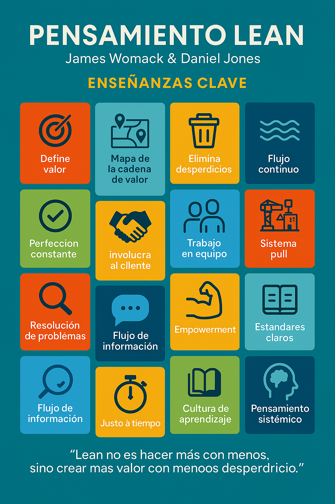